Summary
This chunk introduces the basic structure of computer systems and the distinction between architecture, organization, and software layers. It explains the processor, memory, and input/output as the three core subsystems, then connects them to the classic five functional components: datapath, control, memory, input, and output. The notes define computer performance in terms of execution time, CPU time, and response time, and derive the standard CPU performance equations using clock rate, clock period, instruction count, and CPI. A second major thread develops data representation, starting from positional number systems and binary encoding, then covering unsigned numbers, signed encodings, two’s complement arithmetic, overflow, underflow, and character encoding. The material also explains why computers use bits physically and how meaning depends on interpretation of bit patterns. The final part introduces digital logic: gates, combinational versus sequential logic, truth tables, Boolean expressions, De Morgan’s laws, logic optimization, and the half adder/full adder as reusable arithmetic building blocks. Across the chunk, abstraction is a recurring theme, linking application software, system software, ISA, processor implementation, and logic realization.
This chunk introduces integrated circuits as the physical basis of computers and explains how digital hardware is designed from HDL descriptions into manufactured chips. It distinguishes FPGA and ASIC implementation flows, showing how Verilog descriptions are synthesized into LUTs or standard cells and then converted through place-and-route into GDS2 layouts. The notes compare sequential software execution in C with parallel hardware description in Verilog, then develop structural, behavioral, and RTL modeling styles using half-adder examples. The material then moves into sequential logic, covering procedural blocks, sensitivity lists, reg versus wire, blocking and nonblocking assignment, and the role of test benches in simulation. A major section explains clocks, latches, D flip-flops, setup and hold time, and how synchronous systems organize storage and combinational logic around clock edges. The final pages introduce register files and finite state machines, including Moore and Mealy models, and work through parity-checker and vending-machine controller examples in state-diagram, table, Boolean, and Verilog forms.
This chunk covers two major areas: finite-state machine design and the fundamentals of RISC-V computer architecture, assembly, and single-cycle datapath design. It begins with Moore and Mealy pattern detectors, emphasizing that Mealy machines often use fewer states and respond faster, while Moore machines have more controlled timing due to bounded combinational depth. The notes then introduce the ISA abstraction, RV32I register and memory organization, and the six main RISC-V instruction formats. Several pages explain how R-type, I-type, S-type, B-type, and J-type instructions are encoded and used, with worked assembly examples for arithmetic, memory access, branching, function calls, recursion, and arrays. The material also develops the RISC-V calling convention, stack frames, leaf versus non-leaf procedures, and recursive execution using factorial as a case study. Later pages present pseudoinstructions, assembler directives, simulator/debug commands, and a complete example program with terminal I/O. The chunk closes with the structure of a single-cycle processor, defining the datapath, control signals, and the main combinational and sequential hardware elements used to execute instructions.
This chunk explains key datapath building blocks in a RISC-V style processor, beginning with the ALU, full adders, transistor-based logic gates, multiplexers, and the 32-bit ripple-carry adder. It then describes major state and storage components including the program counter, instruction memory, register file, immediate generator, and data memory, with worked instruction-flow examples for R-type, load, store, branch, and jal. The notes split processor design into datapath and control, showing how the main control and ALU control derive signals from opcode, funct3, and funct7, and provide control truth tables. Performance is analyzed through single-cycle execution phases, followed by the motivation for multicycle designs and then pipelining. The pipeline section introduces pipeline registers, throughput gains, and the need to pipeline control signals alongside data. Hazards are then classified as structural, data, and control hazards, with remedies such as separate instruction/data memories, forwarding, hazard detection, compiler scheduling, and branch prediction. The final pages introduce memory hierarchy, contrasting registers, caches, main memory, and persistent storage, and grounding hierarchy design in temporal and spatial locality.
This chunk explains cache memory as a small, fast layer between the processor and main memory, designed to exploit locality by keeping likely-needed blocks close to the CPU. It defines core cache terms including block or line, hit, miss, hit ratio, miss ratio, and miss penalty, and shows the sequence of actions taken on a miss. The notes distinguish which system layers manage data movement: the instruction set exposes register-memory transfers, cache controllers manage cache-main-memory transfers, and the operating system and file system manage memory-disk transfers. A major focus is direct-mapped cache organization, including modulo-based placement, tag/index/offset address decomposition, valid-bit checking, and worked mapping examples. The material then analyzes cache behavior through hits, misses, block-size trade-offs, CPI stall equations, separate instruction and data caches, and a numerical CPI example. Finally, it introduces associative mapping, contrasting direct-mapped, fully associative, and n-way set associative caches, and notes that higher associativity reduces conflict misses but gives diminishing returns and greater hardware complexity.
Knowledge tree
- Core Components of a Computer System (Page 1, Page 2, Page 3)
- Single-Cycle Datapath and Five Classic Computer Components (Page 1, Page 7)
- Computer Architecture Versus Computer Organization (Page 3)
- Seven Great Ideas in Computer Architecture (Page 3, Page 4)
- Software Layers, Operating System, Compiler, and ISA (Page 4, Page 5)
- From High-Level Code to Assembly and Machine Language (Page 5, Page 6)
- Performance Metrics: Execution Time, CPU Time, and Response Time (Page 7, Page 8)
- Positional Number Systems and Base Conversion (Page 9, Page 10)
- Why Computers Use Bits and How Bit Patterns Gain Meaning (Page 10, Page 11)
- Unsigned Binary Representation and Conversion Procedures (Page 10, Page 12, Page 13)
- Unsigned Binary Arithmetic (Page 13, Page 14, Page 15)
- Signed Integer Representations (Page 15, Page 16)
- Two’s Complement Arithmetic and Sign Extension (Page 16, Page 17)
- Overflow, Underflow, and Language-Level Handling (Page 18, Page 19)
- Character Encoding with ASCII (Page 19)
- CPU Time, Clocking, and the Basic Performance Equation (Page 20, Page 22)
- Combinational and Sequential Logic in Processors (Page 21, Page 26)
- Instruction Count, CPI, and the Full CPU Performance Equation (Page 23, Page 24)
- Logic Gates and Digital Abstraction (Page 25)
- Logic Blocks, Truth Tables, and Boolean Expressions (Page 26, Page 27)
- De Morgan’s Laws and Canonical Boolean Forms (Page 28, Page 29)
- Half Adder, Full Adder, and Ripple Carry Addition (Page 29, Page 30)
- Integrated Circuits and Digital Chip Categories (Page 31)
- Logic Synthesis and Physical Design Flow (Page 31, Page 32, Page 34, Page 55)
- FPGA LUT Mapping and ASIC Standard-Cell Mapping (Page 32)
- Verilog as a Hardware Description Language (Page 32, Page 33, Page 34)
- Gate-Level Modeling with Verilog Modules and Wires (Page 35, Page 36)
- Behavioral Modeling and Continuous Assignment (Page 37)
- Procedural Blocks, Sensitivity Lists, and Combinational Always Blocks (Page 38, Page 39)
- Reg Variables and Blocking vs Nonblocking Assignment (Page 39, Page 40)
- Test Benches and Stimulus Generation (Page 40, Page 41, Page 56)
- Sequential Circuits and Clocked Storage (Page 41, Page 42)
- SR Latch and Gated SR Latch (Page 42, Page 43)
- D Latch and Edge-Triggered D Flip-Flop (Page 44, Page 45)
- Setup Time, Hold Time, and Critical Path Timing (Page 45, Page 46, Page 47)
- Registers and Register Files (Page 47, Page 48, Page 49, Page 50)
- Finite State Machines and the Synchronous FSM Model (Page 51)
- Moore and Mealy Machine Distinction (Page 52, Page 58)
- Moore Parity Checker FSM (Page 52, Page 53, Page 54, Page 55)
- RTL Modeling for Finite State Machines (Page 55, Page 56)
- Vending Machine Moore FSM Design (Page 57, Page 58)
- Moore and Mealy Pattern Detector for Two Consecutive Ones (Page 59)
- Moore and Mealy Timing and Combinational Path Tradeoffs (Page 59)
- Instruction Set Architecture, RV32I, Registers, and Memory Basics (Page 60, Page 61)
- RISC-V Instruction Families and Register Naming (Page 61, Page 62)
- R-Type Instructions and Register-Register ALU Operations (Page 62, Page 63)
- Shift and Bitwise Operations in RV32I (Page 64)
- Load-Store Architecture and Byte-Addressable Memory (Page 65, Page 66, Page 67, Page 68)
- I-Type Immediates, Loads, and Compare Instructions (Page 65, Page 66)
- S-Type Stores and Memory Update Examples (Page 67, Page 68)
- Branch Instructions and PC-Relative Control Flow (Page 69, Page 70, Page 71)
- Jump and Link, JALR, and Function Return Mechanics (Page 72)
- Functions, Calling Convention, and Argument Passing (Page 73, Page 74)
- Pop Procedures (Page 75, Page 76)
- Leaf and Non-Leaf Procedures with Stack Discipline (Page 76, Page 77)
- Recursive Factorial Execution and Stack Frame Growth (Page 78)
- RISC-V Assembly Programming Patterns and Pseudoinstructions (Page 79, Page 80, Page 81, Page 82, Page 83, Page 84)
- Assembly Directives, System Calls, and Simulator Commands (Page 80, Page 81, Page 82, Page 83, Page 84, Page 85)
- Single-Cycle Processor Datapath and Control Overview (Page 86, Page 87)
- Sequential and Combinational Hardware Elements in the Datapath (Page 88)
- 32-bit ALU organization and control signals (Page 89)
- Full adder and half adder construction (Page 90)
- Transistors as the physical basis of logic gates (Page 90, Page 91)
- Multiplexer behavior and logic implementation (Page 91)
- 32-bit ripple-carry adder (Page 92)
- Immediate generation and sign extension in RISC-V (Page 92, Page 100, Page 101, Page 102, Page 103)
- Data memory interface and address calculation (Page 93, Page 100, Page 101)
- Program counter and instruction memory (Page 94, Page 97, Page 98)
- Register file ports and D-latch foundation (Page 95, Page 96)
- Datapath and control partition in processor design (Page 97)
- R-type and load instruction execution flow (Page 98, Page 99, Page 100)
- Store instruction execution flow (Page 101)
- Branch and jump execution in the datapath (Page 102, Page 103)
- Main control and ALU control truth tables (Page 103, Page 104)
- Single-cycle, multicycle, and pipelined execution (Page 105, Page 106, Page 107)
- Pipeline registers and pipelined control signals (Page 108)
- Hazards in pipelined processors (Page 109, Page 110, Page 111, Page 112)
- Memory hierarchy and locality principles (Page 113, Page 114)
- Cache Memory Purpose and Block Transfers (Page 115)
- Hit Ratio Miss Ratio and Miss Penalty (Page 115)
- Cache Hierarchy Control Boundaries (Page 116)
- Direct Mapped Cache Placement Rule (Page 117)
- Tag Index and Valid Bit in Direct Mapped Caches (Page 118)
- Address Decomposition into Tag Index and Offset (Page 119)
- Worked Address Mapping Examples (Page 120, Page 121)
- Hits Misses and Write Policies (Page 121)
- Block Size Trade Offs and Spatial Locality (Page 122)
- Cache Performance Equations with CPI Stall (Page 122, Page 123)
- Instruction Cache and Data Cache Separation (Page 123)
- Average Memory Access Time (Page 124)
- Associative Mapping Design Space (Page 124, Page 125)
- Associativity Trade Offs and Diminishing Returns (Page 126)
Source material
Page 1
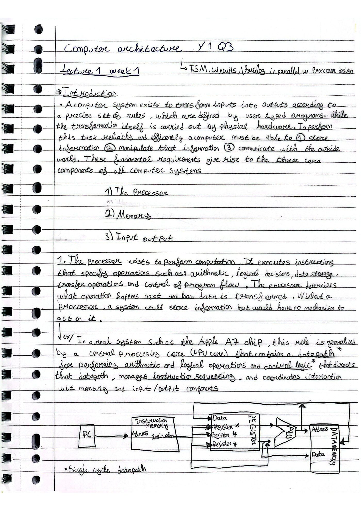
Computer architecture . Y1 Q3
Lecture 1 week 1 ↳ FSM, circuits, Verilog in parallel w Processor design
→ Introduction
- A computer system exists to transform inputs into outputs according to a precise set of rules, which are defined by user typed programs. While the transformation itself is carried out by physical hardware. To perform this task reliably and efficiently a computer must be able to (1) store information (2) manipulate that information (3) communicate with the outside world. These fundamental requirements give rise to the three core components of all computer systems
-
The processor
-
Memory
-
Input output
- The processor exists to perform computation. It executes instructions that specifies operations such as: arithmetic, logical decisions, datastorage, transfer operations and control of program flow. The processor determines what operation happens next and how data is transformed, Without a processor, a system could store information but would have no mechanism to act on it.
downdown In a real system such as the Apple A7 chip, this role is generalized by a central processing core (CPU core) that contains a datapath for performing arithmetic and logical operations and control logic* that directs that datapath, manages instruction sequencing, and coordinates interaction with memory and input/output components
[Diagram]
-
Left box labeled
PC -
Arrow from
PCto a box labeledInstruction memory -
Inside
Instruction memory:Adressinstruction
-
Multiple arrows from
Instruction memoryto a larger block on the right -
Larger block contains a vertical label
REGISTER -
To the left of
REGISTERare labels:DataRegister #Register #Register #
-
Arrow from
REGISTERtoALU -
Arrow from
ALUto a right-side box labeledDATAMEMORY -
Inside
DATAMEMORY:AdressData
-
Additional arrows:
- one top feedback arrow looping from the right side back toward the upper left of the large block
- one lower arrow from the register area toward
DATAMEMORY - one right-side arrow entering
DATAMEMORY
-
Single cycle datapath
Page 2
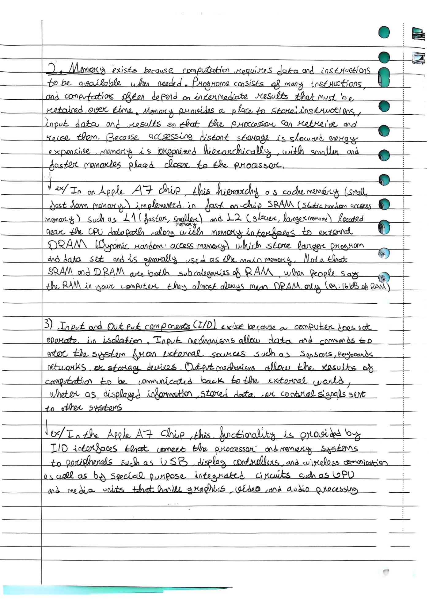
2). Memory exists because computation requires data and instructions to be available when needed. Programs consists of many instructions, and computations often depend on intermediate results that must be retained over time. Memory provides a place to store instructions, input data and results so that the processor can retrieve and reuse them. Because accessing distant storage is slow and energy expensive, memory is organized hierarchically, with smaller and faster memories placed closer to the processor,
down ex/ In an Apple A7 chip, this hierarchy as cache memory (small, fast form memory) implemented in fast on-chip SRAM (Static random access memory) such as L1 (faster, smaller) and L2 (slower, larger memory) located near the CPU datapath, along with memory interfaces to external DRAM (Dynamic random access memory) which store larger program and data set and is generally used as the main memory. Note that SRAM and DRAM are both subcategories of RAM when people say the RAM in your computer they almost always mean DRAM only (eg: 16GB of RAM)
3). Input and Out put components (I/O) exist because a computer does not operate in isolation. Input mechanisms allow data and commands to enter the system from external sources such as Sensors, keyboards networks or storage devices. Output mechanisms allow the results of computation to be communicated back to the external world, whether as displayed information, stored data or control signals sent to other systems
down ex/ In the Apple A7 chip this functionality is provided by I/O interfaces that connect the processor and memory systems to peripherals such as USB, display controllers, and wireless communication as well as by special purpose integrated circuits such as GPU and media units that handle graphics, video and audio processing.
Page 3
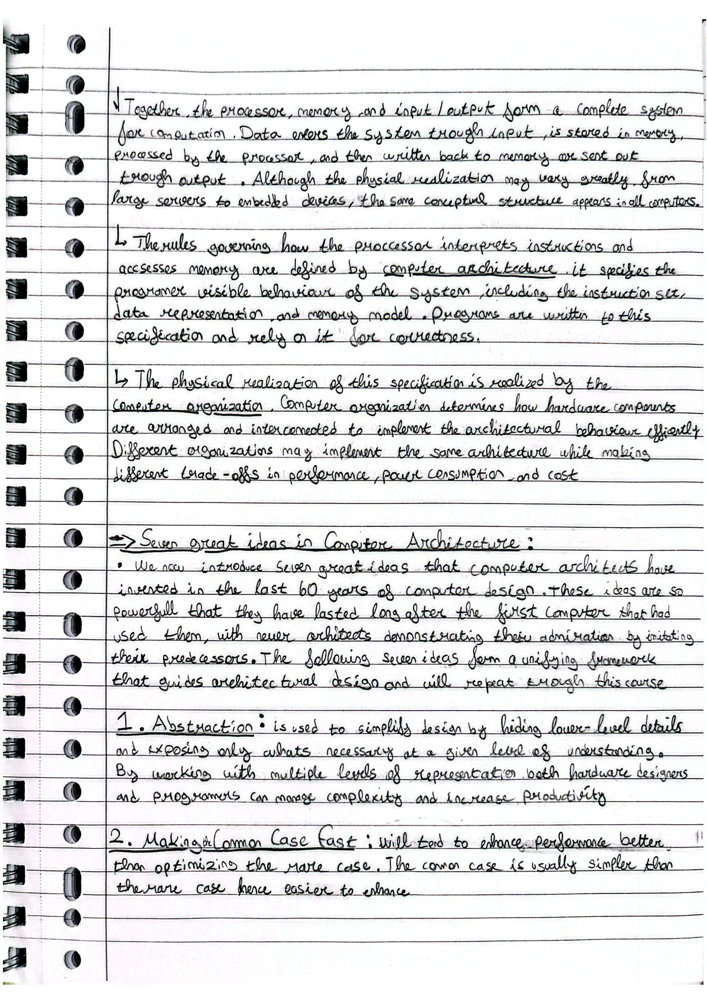
↳ Together, the processor, memory, and input / output form a complete system for computation. Data enters the system through Input, is stored in memory, processed by the processor, and then written back to memory or sent out through output. Although the physical realization may vary greatly from large servers to embedded devices, the same conceptual structure appears in all computers.
↳ The rules governing how the processor interprets instructions and accesses memory are defined by computer architecture, it specifies the programmer visible behaviour of the system, including the instruction set, data representation, and memory model. Programs are written to this specification and rely on it for correctness.
↳ The physical realization of this specification is realized by the computer organization. Computer organization determines how hardware components are arranged and interconnected to implement the architectural behaviour efficiently. Different organizations may implement the same architecture while making different trade-offs in performance, power consumption and cost
⇒ Seven great ideas in Computer Architecture:
- We now introduce Seven great ideas that computer architects have invented in the last 60 years of computer design. these ideas are so powerfull that they have lasted long after the first computer that had used them, with newer architects demonstrating their admiration by imitating their predecessors. The following seven ideas form a unifying framework that guides architectural design and will repeat enough this course
-
Abstraction : is used to simplify design by hiding lower-level details and exposing only whats necessary at a given level of understanding. By working with multiple levels of representation both hardware designers and programmers can manage complexity and increase productivity
-
Making the Common Case Fast : will tend to enhance performance better than optimizing the rare case. The common case is usually simpler than the rare case hence easier to enhance
Page 4
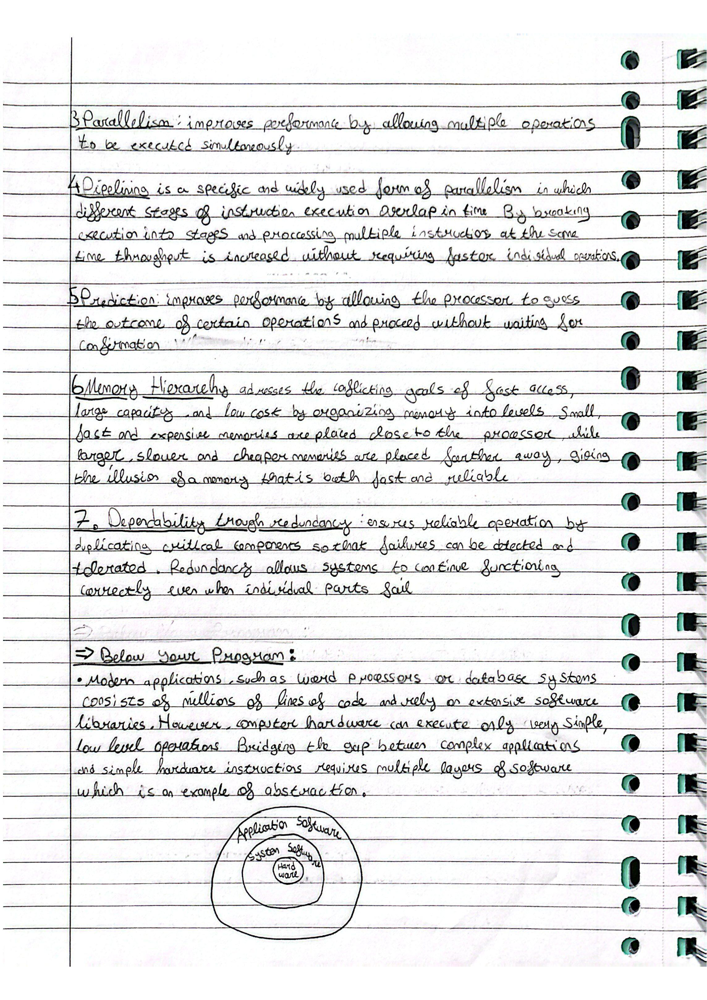
3 Parallelism: improves performance by allowing multiple operations to be executed simultaneously
4 Pipelining is a specific and widely used form of parallelism in which different stages of instruction execution overlap in time. By breaking execution into stages and processing multiple instructions at the same time throughput is increased without requiring faster individual operations
5 Prediction: improves performance by allowing the processor to guess the outcome of certain operations and proceed without waiting for confirmation
6 Memory Hierarchy addresses the conflicting goals of fast access, large capacity and low cost by organizing memory into levels. Small, fast and expensive memories are placed close to the processor while larger, slower and cheaper memories are placed farther away, giving the illusion of a memory that is both fast and reliable
- Dependability trough redundancy ensures reliable operation by duplicating critical components so that failures can be detected and tolerated. Redundancy allows systems to continue functioning correctly even when individual parts fail
⇒ Below your Program:
- Modern applications such as word processors or database systems consists of millions of lines of code and rely on extensive software libraries. However computer hardware can execute only very simple, low level operations. Bridging the gap between complex applications and simple hardware instructions requires multiple layers of software which is an example of abstraction.
[Diagram: three nested hand-drawn circles near the bottom of the page. Outer circle labeled “Application Software”; middle circle labeled “system software”; inner circle labeled “hardware”.]
Page 5
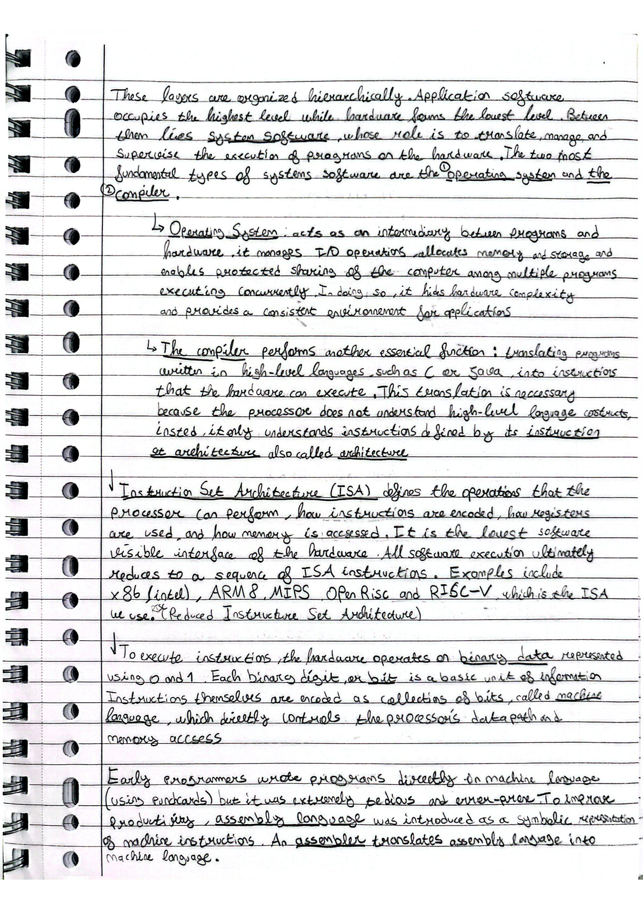
These layers are organized hierarchically. Application software occupies the highest level while hardware forms the lowest level. Between them lies system software, whose role is to translate, manage and supervise the execution of programs on the hardware. The two most fundamental types of systems software are the (1) operating system and the (2) compiler.
↳ Operating System : acts as an intermediary between programs and hardware, it manages I/O operations allocates memory and storage and enables protected sharing of the computer among multiple programs executing concurrently. In doing so, it hides hardware complexity and provides a consistent environment for applications
↳ The compiler performs another essential function : translating programs written in high-level languages, such as C or Java, into instructions that the hardware can execute. This translation is necessary because the processor does not understand high-level language constructs, instead, it only understands instructions defined by its instruction set architecture also called architecture
down Instruction Set Architecture (ISA) defines the operations that the processor can perform, how instructions are encoded, how registers are used and how memory is accessed. It is the lowest software visible interface of the hardware. All software execution ultimately reduces to a sequence of ISA instructions. Examples include x86 (intel), ARM8, MIPS, Open Risc and RISC-V, which is the ISA we use. (Reduced Instruction Set Architecture)
down To execute instructions, the hardware operates on binary data represented using 0 and 1. Each binary digit, or bit is a basic unit of information Instructions themselves are encoded as collections of bits, called machine language, which directly controls the processor’s datapath and memory access
Early programmers wrote programs directly in machine language (using punchcards) but it was extremely tedious and error-prone. To improve productivity, assembly language was introduced as a symbolic representation of machine instructions. An assembler translates assembly language into machine language.
Page 6
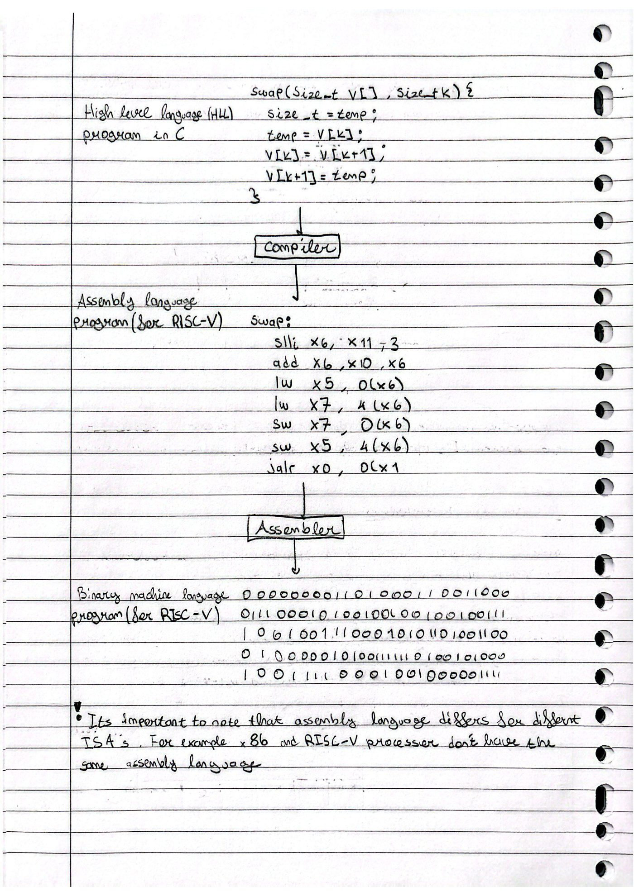
High level language (HLL) program in C
Swap(Size_t V[], Size_t k) { size_t = temp; temp = V[k]; V[k] = V[k+1]; V[k+1] = temp; }
down [boxed: Compiler] down
Assembly language program (for RISC-V)
Swap: slli x6, x11, 3 add x6, x10, x6 lw x5, 0(x6) lw x7, 4(x6) sw x7, 0(x6) sw x5, 4(x6) jalr x0, 0(x1)
down [boxed: Assembler] down
Binary machine language program (for RISC-V)
000000001101000110011000 01100010100100100100100111 1061001!100010101101001100 010000010100111110100101000 100111110001001000001111
- Its important to note that assembly language differs for different ISA’s. For example, x86 and RISC-V processor don’t have the same assembly language.
Page 7
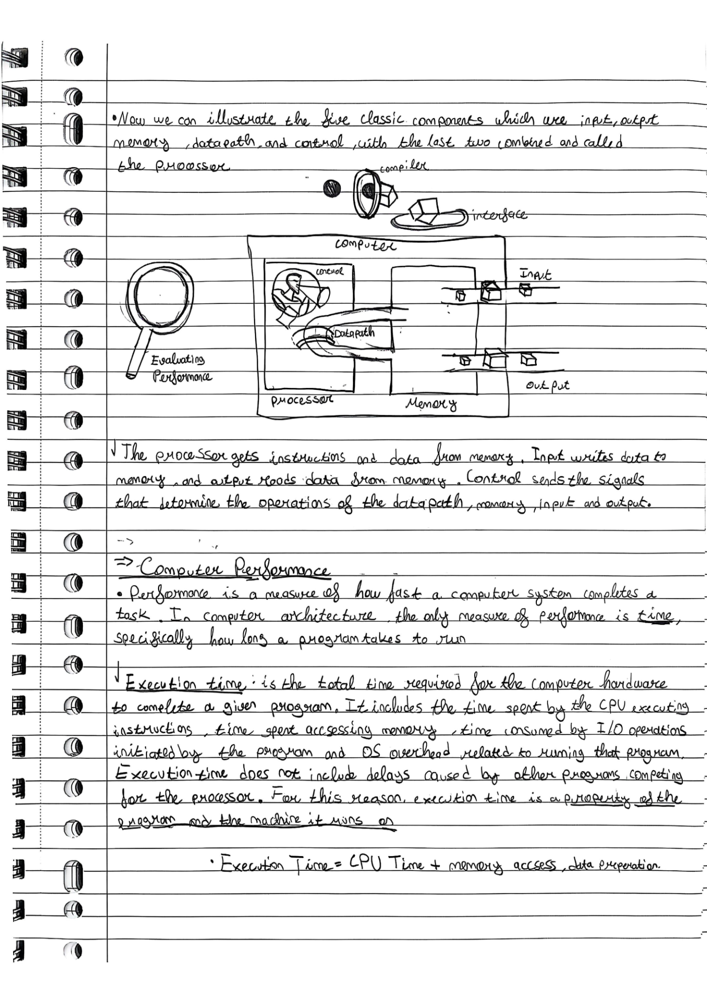
- Now we can illustrate the five classic components which are input, output memory, datapath, and control, with the last two combined and called the processor
[Diagram]
- Small labeled sketch above the main box:
compilerinterface
- Main boxed diagram labeled
computer- Inside left section:
controlDatapath
- Bottom labels:
processor(under the left section containing control + datapath)Memory(under the right section)
- Right side labels:
Inputout put
- Inside left section:
- Separate sketch on left:
- Magnifying glass labeled:
EvaluatingPerformance
- Magnifying glass labeled:
√ The processor gets instructions and data from memory. Input writes data to memory, and output reads data from memory. Control sends the signals that determine the operations of the datapath, memory, input and output.
→
⇒ Computer Performance
- Performance is a measure of how fast a computer system completes a task. In computer architecture the only measure of performance is time, specifically how long a program takes to run
√ Execution time : is the total time required for the computer hardware to complete a given program. It includes the time spent by the CPU executing instructions, time spent accessing memory, time consumed by I/O operations initiated by the program and OS overhead related to running that program. Execution time does not include delays caused by other programs competing for the processor. For this reason, execution time is a property of the program and the machine it runs on
- Execution Time = CPU Time + memory access, data preparation.
Page 8
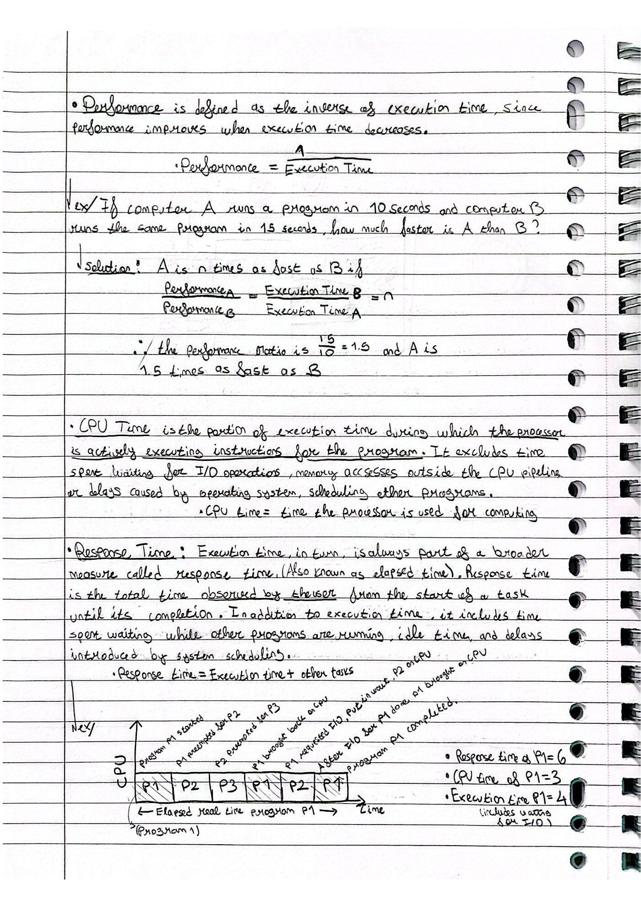
- Performance is defined as the inverse of execution time, since performance improves when execution time decreases.
Performance = 1 Execution Time
\ ex/ If computer A runs a program in 10 Seconds and computer B runs the same program in 15 seconds, how much faster is A than B?
\ Solution: A is n times as fast as B if
PerformanceA = Execution TimeB = n PerformanceB Execution TimeA
-
∴ the performance ratio is 15/10 = 1.5 and A is 1.5 times as fast as B
-
CPU Time is the portion of execution time during which the processor is actively executing instructions for the program. It excludes time spent waiting for I/O operations, memory accesses outside the CPU pipeline or delays caused by operating system, scheduling other programs.
- CPU time = time the processor is used for computing
- Response Time: Execution time, in turn, is always part of a broader measure called response time. (Also known as elapsed time), Response time is the total time observed by the user from the start of a task until its completion. In addition to execution time, it includes time spent waiting while other programs are running, idle time, and delays introduced by system scheduling.
- Response time = Execution time + other tasks
Next/
[Diagram]
- Vertical axis labeled:
CPU - Horizontal axis labeled:
time - A segmented timeline/CPU schedule is drawn with boxes labeled, from left to right:
P1 | P2 | P3 | P1 | P2 | P1 - Below the timeline, a double-headed horizontal arrow is labeled:
<- Elapsed real time program P1 -> - Below that is written:
(Program 1)
[Arrows/annotations above the timeline, left to right]
-
program p1 started -
p1 requested for p2 -
p2 preempted for p3 -
p1 request block on cpu -
p1 requested for i/o, puts in wait -
after i/o set p1 done, p1 brought on cpu -
program p1 completed -
Response time of P1 = 6
-
CPU time of P1 = 3
-
Execution time P1 = 4 includes waiting for I/O
Page 9
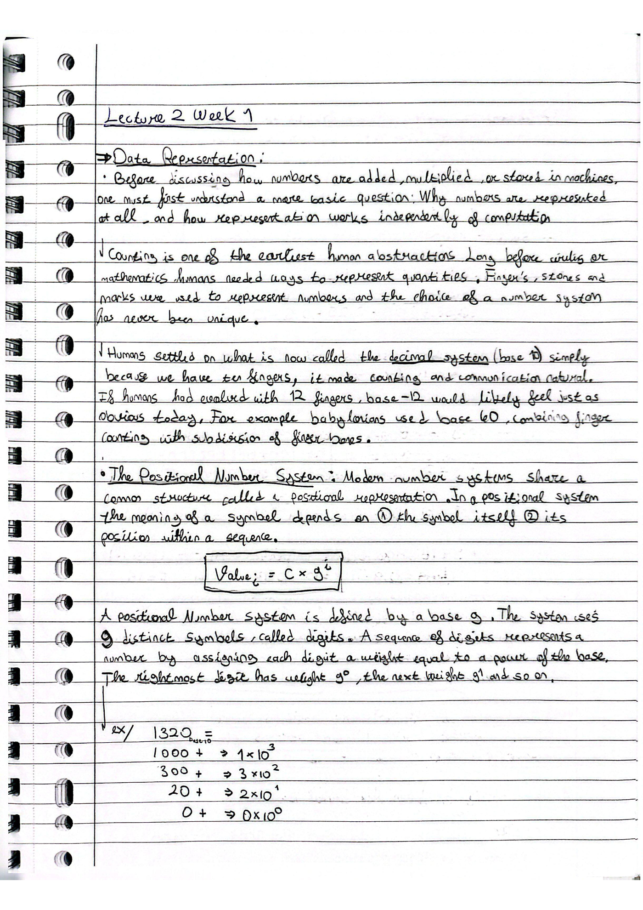
Lecture 2 Week 1
⇒ Data Representation;
- Before discussing how numbers are added, multiplied, or stored in machines, one must first understand a more basic question: Why numbers are represented at all, and how representation works independently of computation
down Counting is one of the earliest human abstractions Long before writing or mathematics, humans needed ways to represent quantities. Fingers, stones and marks were used to represent numbers and the choice of a number system has never been unique.
down Humans settled on what is now called the decimal system (base 10) simply because we have ten fingers, it made counting and communication natural. If humans had evolved with 12 fingers, base-12 would likely feel just as obvious today. For example babylonians used base 60, combining finger counting with subdivision of finger bones.
- The Positional Number System : Modern number systems share a common structure called a positional representation. In a positional system the meaning of a symbol depends on (1) the symbol itself (2) its position within a sequence.
[Boxed equation] Value_i = C x g
A positional Number System is defined by a base g. The system uses g distinct symbols, called digits. A sequence of digits represents a number by assigning each digit a weight equal to a power of the base. The rightmost digit has weight g^0, the next weight g^1 and so on
down ex/ 1320₍base10₎ =
1000 + -> 1 x 10^3
300 + -> 3 x 10^2
20 + -> 2 x 10^1
0 + -> 0 x 10^0
Page 10
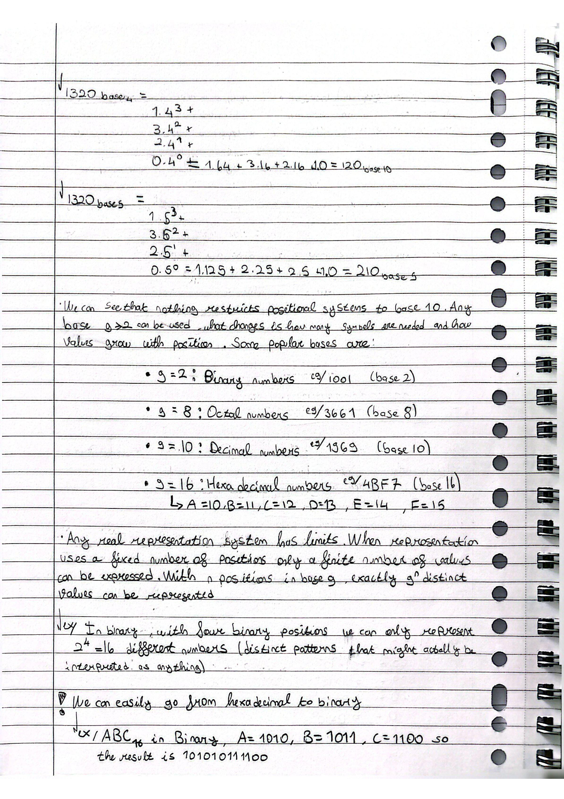
√ 1320 base_4 = 14^3 + 34^2 + 24^1 + 04^0 = 164 + 316 + 26 40 = 120 base_10
√ 1320 base_5 = 15^3 + 35^2 + 25^1 + 05^0 = 1.125 + 2.25 + 2.5 4.0 = 210 base_5
. We can see that nothing restricts positional systems to base 10. Any base g >= 2 can be used, what changes is how many symbols are needed and how Values grow with positions. Some popular bases are:
-
g = 2 : Binary numbers eg/1001 (base 2)
-
g = 8 : Octal numbers eg/3661 (base 8)
-
g = 10 : Decimal numbers eg/1969 (base 10)
-
g = 16 : Hexa decimal numbers eg/4BF7 (base 16) ↳ A=10, B=11, C=12, D=13, E=14, F=15
. Any real representation System has limits. When representation uses a fixed number of positions only a finite number of values can be expressed. With n positions in base g, exactly gⁿ distinct Values can be represented
√x/ In binary, with four binary positions we can only represent 2^4 = 16 different numbers (distinct patterns that might actually be interpreted as anything)
[drawn marker/arrow in margin] We can easily go from hexadecimal to binary
√x/ ABC_16 in Binary, A=1010, B=1011, C=1100 so the result is 101010111100
Page 11
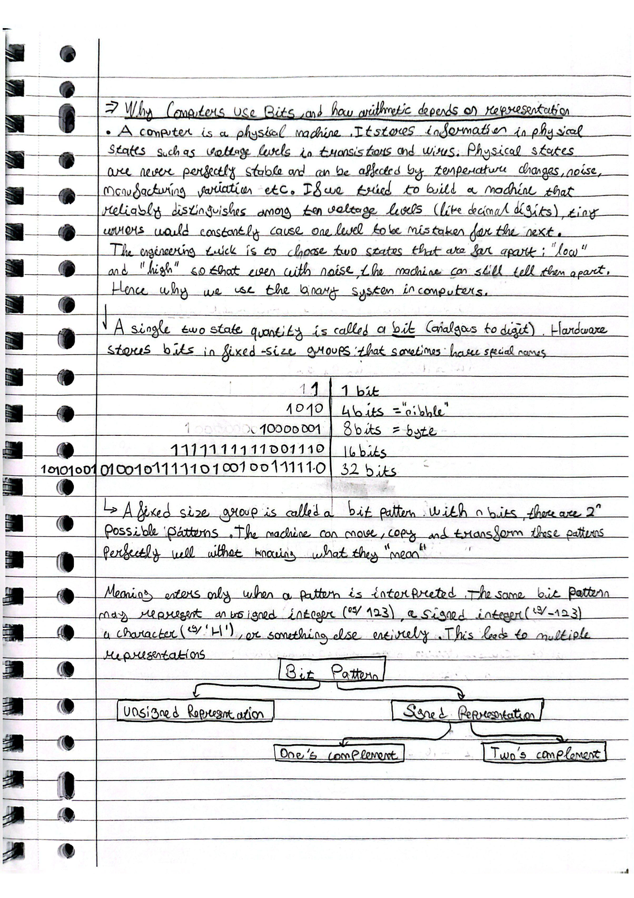
→ Why Computers use Bits, and how arithmetic depends on representation
- A computer is a physical machine. It stores information in physical states such as voltage levels in transistors and wires. Physical states are never perfectly stable and can be affected by temperature changes, noise, manufacturing variations etc. If we tried to build a machine that reliably distinguishes among ten voltage levels (like decimal digits), tiny errors would constantly cause one level to be mistaken for the next. The engineering trick is to choose two states that are far apart: “low” and “high” so that even with noise, the machine can still tell them apart, Hence why we use the binary system in computers.
down A single two state quantity is called a bit (analogous to digit). Hardware stores bits in fixed-size groups; that sometimes have special names
1 | 1 bit 1010 | 4 bits = “nibble” 10000001 | 8 bits = byte 1111111111001110 | 16 bits 10101001010010111110100100111110 | 32 bits
↳ A fixed size group is called a bit pattern. With n bits, there are 2ⁿ possible patterns. The machine can move, copy and transform these patterns perfectly well without knowing what they “mean”
Meaning enters only when a pattern is interpreted. The same bit pattern may represent an unsigned integer (eg 123), a signed integer (eg -123) a character (eg ‘H’), or something else entirely. This leads to multiple representations
[Diagram] Bit Pattern
Arrow from “Bit Pattern” branching to:
- Unsigned Representation
- Signed Representation
Arrow from “Signed Representation” branching to:
- One’s complement
- Two’s complement
Page 12
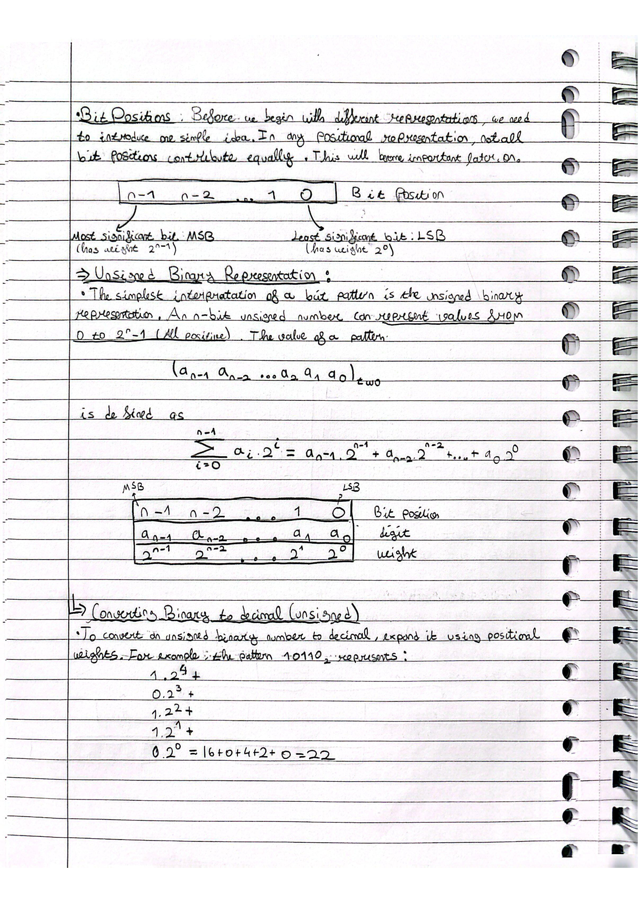
-Bit Positions : Before we begin with different representations, we need to introduce one simple idea. In any positional representation, not all bit positions contribute equally. This will become important later on.
[Diagram: a horizontal boxed line labeled with bit indices from left to right n-1 n-2 ... 1 0, with Bit Position written to the right.]
[Arrow from n-1 downward-left to label:]
Most significant bit : MSB
(has weight 2^(n-1))
[Arrow from 0 downward to label:]
least significant bit : LSB
(has weight 2^0)
→ Unsigned Binary Representation :
- The simplest interpretation of a bit pattern is the unsigned binary
representation. An n-bit unsigned number can represent values from
0 to
2^n - 1(all positive). The value of a pattern
(a_(n-1) a_(n-2) ... a_2 a_1 a_0)_two
is defined as
sum_(i=0)^(n-1) a_i . 2^i = a_(n-1)2^(n-1) + a_(n-2)2^(n-2) + ... + a_0 2^0
[Table/diagram:]
[Above left edge: MSB with an upward arrow. Above right edge: LSB with an upward arrow.]
Top row: n-1 n-2 ... 1 0
Second row: a_(n-1) a_(n-2) ... a_1 a_0
Third row: 2^(n-1) 2^(n-2) ... 2^1 2^0
[Labels written to the right of the three rows:] Bit positions digit weight
→ Converting Binary to decimal (unsigned)
- To convert an unsigned binary number to decimal, expand it using positional
weights. For example; the pattern
10110_2represents :
1 . 2^4 +
0 . 2^3 +
1 . 2^2 +
1 . 2^1 +
0 . 2^0 = 16 + 0 + 4 + 2 + 0 = 22
Page 13
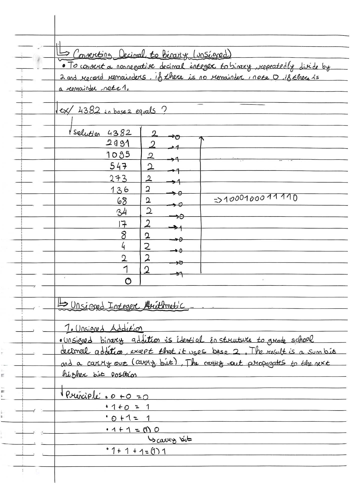
↳ Converting Decimal to binary (unsigned)
- To convert a nonnegative decimal integer to binary, repeatedly divide by 2 and record remainders, if there is no remainder, note 0, if there is a remainder note 1.
down ex/ 4382 in base 2 equals ?
down Solution
4382 | 2 → 0 2191 | 2 → 1 1095 | 2 → 1 547 | 2 → 1 273 | 2 → 1 136 | 2 → 0 68 | 2 → 0 34 | 2 → 0 17 | 2 → 1 8 | 2 → 0 4 | 2 → 0 2 | 2 → 0 1 | 2 → 1 0
[Right-side upward arrow indicating the remainders are read from bottom to top]
⇒ 1000100011110
↳ Unsigned Integer Arithmetic
- Unsigned Addition.
- unsigned binary addition is identical in structure to grade school decimal addition, except that it uses base 2. The result is a sum bit and a carry out (carry bit). The carry-out propagates to the next higher bit positions
down Principle:
- 0 + 0 = 0
- 1 + 0 = 1
- 0 + 1 = 1
- 1 + 1 = (1)0 ↳ carry bit
- 1 + 1 + 1 = (1)1
Page 14
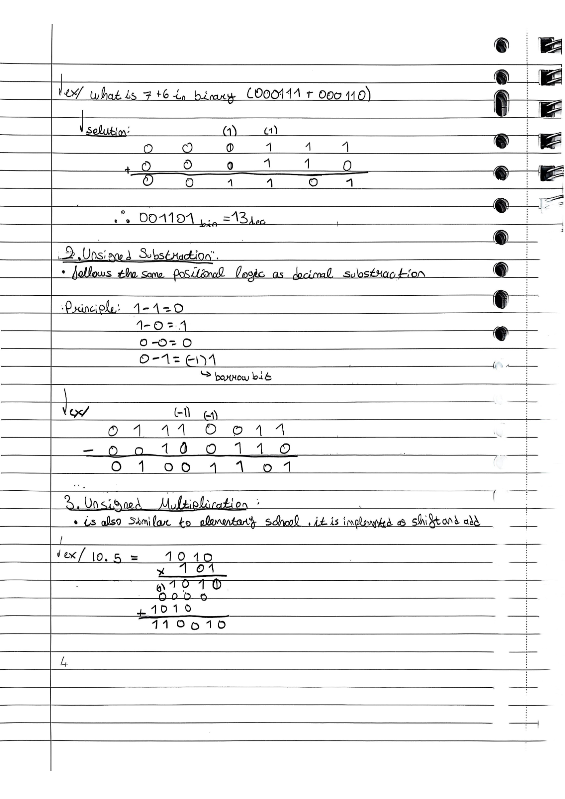
down ex/ What is 7 + 6 in binary (000111 + 000110)
down solution: (1) (1) 0 0 0 1 1 1
- 0 0 0 1 1 0 0 0 1 1 0 1
∴ 001101₍bin₎ = 13₍dec₎
- Unsigned Substraction:
- follows the same positional logic as decimal subtraction
Principle: 1 - 1 = 0 1 - 0 = 1 0 - 0 = 0 0 - 1 = (-1)1 ↘ borrow bit
down ex/ (-1) (-1) 0 1 1 1 0 0 1 1
- 0 0 1 0 0 1 1 0 0 1 0 0 1 1 0 1
- Unsigned Multiplication:
- is also similar to elementary school . it is implemented as shift and add
down ex/ 10. 5 = 1 0 1 0 x 1 0 1 0 1 0 1 0 0 0 0 0 + 1 0 1 0 1 1 0 0 1 0
Page 15
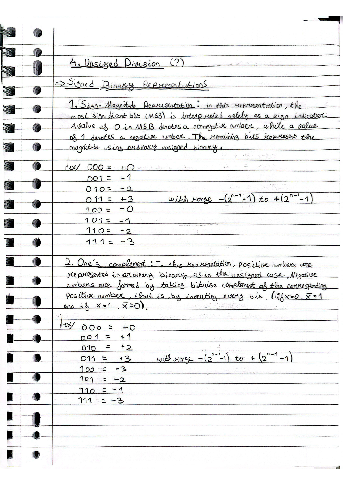
- Unsigned Division (?)
⇒ Signed Binary Representations
- Sign-Magnitude Representation : in this representation, the most significant bits (MSB) is interpreted solely as a sign indicator. A value of 0 in MSB denotes a nonnegative number, while a value of 1 denotes a negative number. The remaining bits represent the magnitude using ordinary unsigned binary.
N ex/ 000 = +0 001 = +1 010 = +2 011 = +3 with range -(2ⁿ⁻^1 - 1) to +(2ⁿ⁻^1 - 1) 100 = -0 101 = -1 110 = -2 111 = -3
- One’s complement : In this representation, positive numbers are represented in ordinary binary, as in the unsigned case. Negative numbers are formed by taking bitwise complement of the corresponding positive number, that is, by inverting every bit (if x = 0, x̄ = 1 and if x = 1, x̄ = 0).
N ex/ 000 = +0 001 = +1 010 = +2 011 = +3 with range -(2ⁿ⁻^1 - 1) to +(2ⁿ⁻^1 - 1) 100 = -3 101 = -2 110 = -1 111 = -3
Page 16
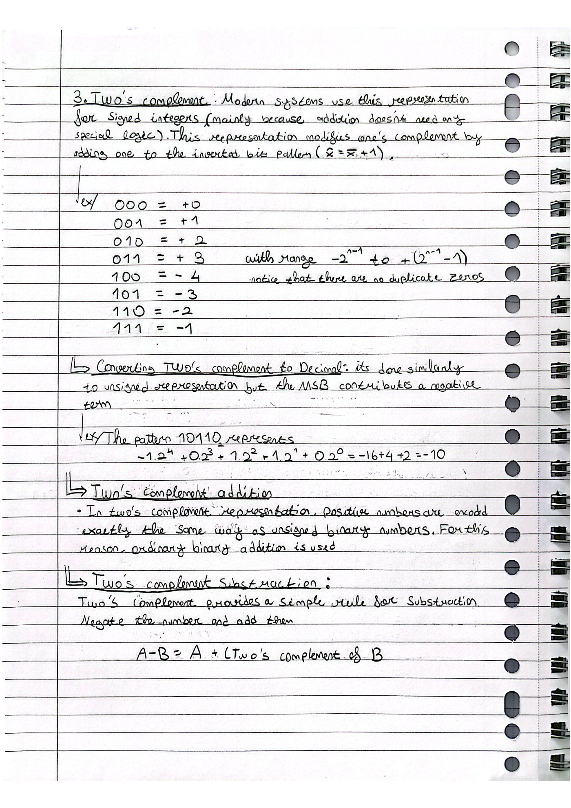
- Two’s complement: Modern systems use this representation for signed integers (mainly because addition doesn’t need any special logic). This representation modifies one’s complement by adding one to the inverted bit pattern (\hat{x} = \bar{x} + 1),
[downward arrow] ex/ 000 = +0 001 = +1 010 = +2 011 = +3 100 = -4 101 = -3 110 = -2 111 = -1
with range -2^(n-1) to +(2^(n-1) - 1) notice that there are no duplicate zeros
[rightward arrow] Converting Two’s complement to Decimal: its done similarly to unsigned representation but the MSB contributes a negative term
ex/ The pattern 10110 represents -1.2^4 + 0.2^3 + 1.2^2 + 1.2^1 + 0.2^0 = -16 + 4 + 2 = -10
[rightward arrow] Two’s complement addition
- In two’s complement representation, positive numbers are encoded exactly the same way as unsigned binary numbers. For this reason, ordinary binary addition is used
[rightward arrow] Two’s complement subtraction: Two’s complement provides a simple rule for subtraction Negate the number and add then
A - B = A + (Two’s complement of B)
Page 17
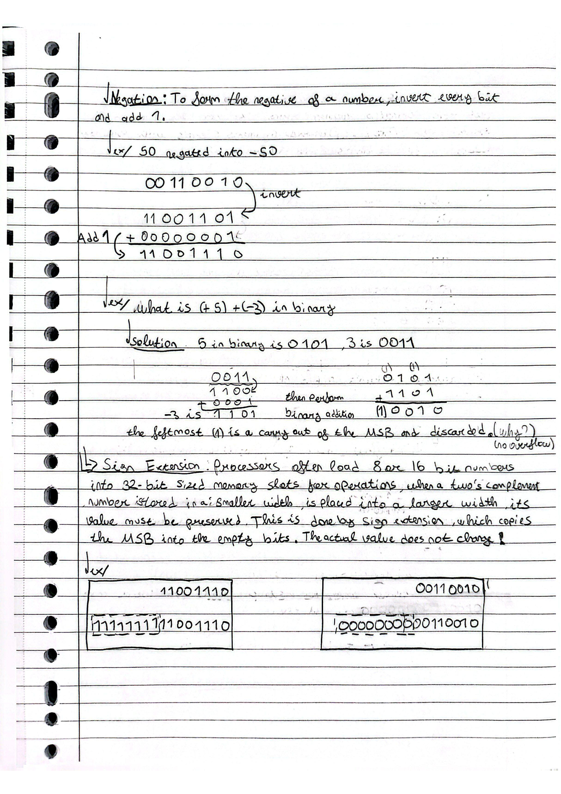
√ Negation: To form the negative of a number, invert every bit and add 1.
√ ex/ 50 negated into -50
00110010 } invert 11001101
Add 1 ( + 00000001 11001110
√ ex/ what is (+5) + (-3) in binary
Solution. 5 in binary is 0101, 3 is 0011
0011 1100
- 0001 1101
-3 is 1101
then perform binary addition
0101
- 1101 (1)0010
the leftmost (1) is a carry out of the MSB and discarded. (why?) (no overflow)
↳ Sign Extension: Processors often load 8 or 16 bit numbers into 32-bit sized memory slots for operations, when a two’s complement number stored in a smaller width is placed into a larger width, its value must be preserved. This is done by sign extension, which copies the MSB into the empty bits. The actual value does not change!
√ ex/
[Left boxed diagram] 11001110
1111111111001110 [the leading 1s are bracketed/underlined to show sign extension]
[Right boxed diagram] 00110010
0000000000110010 [the leading 0s are bracketed/underlined to show sign extension]
Page 18
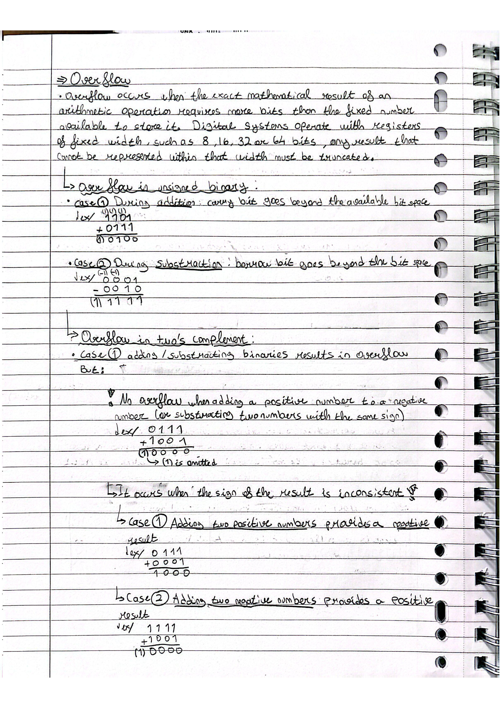
⇒ Overflow
- Overflow occurs when the exact mathematical result of an arithmetic operation requires more bits than the fixed number available to store it. Digital Systems operate with registers of fixed width, such as 8,16,32 or 64 bits, any result that cannot be represented within that width must be truncated.
└> Over flow in unsigned binary :
-
case (1) During addition : carry bit goes beyond the available bit space ex/ 1 1 0 1
- 0 1 1 1 1 0 1 0 0
-
case (2) During subtraction : borrow bit goes beyond the bit spe down ex/ (-1 1) 0 0 0 1
-
0 0 1 0 (1) 1 1 1 1
└> Overflow in two’s complement :
- case (1) adding/subtracting binaries results in overflow But:
▼ No overflow when adding a positive number to a negative number (or subtracting two numbers with the same sign) ex/ 0 1 1 1
- 1 0 0 1 (1) 0 0 0 0 → (1) is omitted
└> It occurs when the sign of the result is inconsistent if
└> Case (1) Adding two positive numbers provides a negative result ex/ 0 1 1 1
- 0 0 0 1 1 0 0 0
└> Case (2) Adding two negative numbers provides a positive result ex/ 1 1 1 1
- 1 0 0 1 (1) 0 0 0 0
Page 19
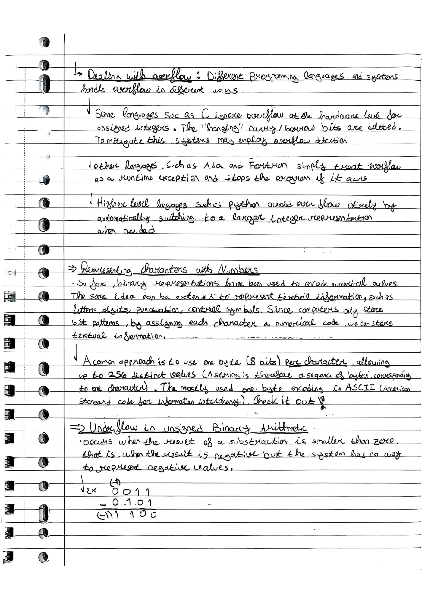
↳ Dealing with overflow : Different programming languages nd systems handle overflow in different ways.
down Some languages suc as C ignore overflow at the hardware level for unsigned integers. The “hanging” carry/borrow bits are deleted. To mitigate this, systems may employ overflow detection
! other languages, such as Ada and Fortran simply treat overflow as a runtime exception and stops the program if it occurs
down Higher level languages such as Python avoid overflow entirely by automatically switching to a larger integer representation when needed
⇒ Representing Characters with Numbers . So far, binary representations have been used to encode numerical values. The same idea can be extended to represent textual information, such as letters digits, punctuation, control symbols. Since computers oly store bit patterns, by assigning each character a numerical code, we can store textual information.
down A camon approach is to use one byte (8 bits) per character, allowing up to 256 distinct values (A string is therefore a seqence of bytes, corresponding to one character). The mostly used one byte encoding is ASCII (American standard code for information interchange). Check it out [drawing of a downward-pointing arrow / pointer]
⇒ Underflow in unsigned Binary Arithmetic ; occurs when the result of a substraction is smaller than zero, that is when the result is negative but the system has no way to represent negative values.
down ex (-1) 0 0 1 1 - 0 1 0 1 (=)1 1 0 0
Page 20
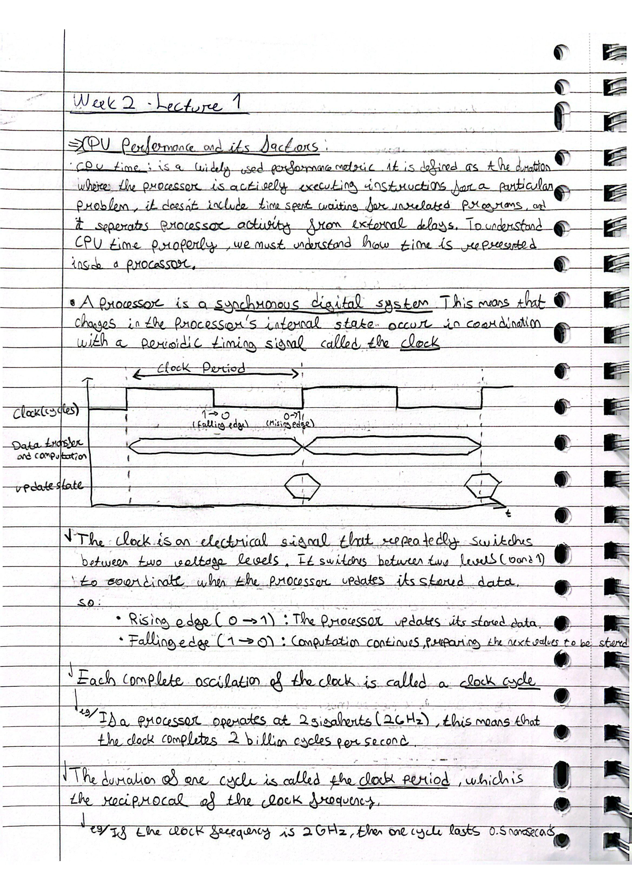
Week 2 - Lecture 1
⇒ CPU Performance and its factors: CPU time; is a widely used performance metric. It is defined as the duration where the processor is actively executing instructions for a particular problem, it doesn’t include time spent waiting for unrelated programs, and it seperates processor activity from external delays. To understand CPU time properly, we must understand how time is represented inside a processor.
- A processor is a synchronous digital system This means that changes in the processor’s internal state occur in coordination with a periodic timing signal called the clock
[Diagram]
- Label at top with a double-headed horizontal arrow: clock Period
- Left vertical axis label: Clock(cycles)
- Square-wave clock drawn across the page
- Two edge labels under the waveform:
- 1 → 0 falling edge
- 0 → 1 rising edge
- Row label beneath clock: Data transfer and computation
- Two long horizontal capsule-like regions across consecutive clock periods in this row
- Row label beneath that: update state
- Two small polygon/hexagon-like markers aligned with vertical dashed lines in this row
- Horizontal axis ends with arrow at right labeled: t
- Vertical dashed lines mark clock boundaries / edges
down The clock is an electrical signal that repeatedly switches between two voltage levels. It switches between two levels (0 and 1) to coordinate when the processor updates its stored data. so:
- Rising edge (0 → 1): The processor updates its stored data.
- Falling edge (1 → 0): Computation continues preparing the next values to be stored
down Each complete oscillation of the clock is called a clock cycle
eg/ If a processor operates at 2 gigaherts (2GHz), this means that the clock completes 2 billion cycles per second.
down The duration of one cycle is called the clock period, which is the reciprocal of the clock frequency,
down eg/ If the clock frequency is 2GHz, then one cycle lasts 0.5 nanosecond.
Page 21
The clock period represent the amount of time available for the processor to perform a step of computation before the next update of its internal state.
→ Before continuing, it is important to know that a processor consists of two fundamental types of hardware components (1) Combinational circuits (2) state elements
i. Combinational logic is circuitry whose outat depends only on its current inputs. it has no memory. If the inputs change, the outputs eventually change as well after a short delay, These are the circuits that actually perform operations, Examples include: adders, arithmetic logic units, multiplexers, and logic gates
downup However combinational circuits does not produce results instantanly. Electrical signals require time to propagate through transistors and wires. This delay is called propagation delay or combinational delay
ii. State elements are circuitry that stores values across time. Examples include registers and flip-flops. State elements hold data until the clock signals them to update. They change their stored values only on clock edges (typically rising edge)
↳ The processor operates in a repeating rhythm. At each rising edge, State elements update their stored values, between rising edges Combinational circuits compute new results based on the stored values.
▽ Because signals require time to propagate through combinational logic, the clock period must be long enough to allow the slowest Signal path in the processor to stabilize. If the clock period were shorter than this delay, the processor would store incorrect or incomplete result at the next rising edge. Therefore, the clock period is limited by the longest combinational delay in the system.
Page 22
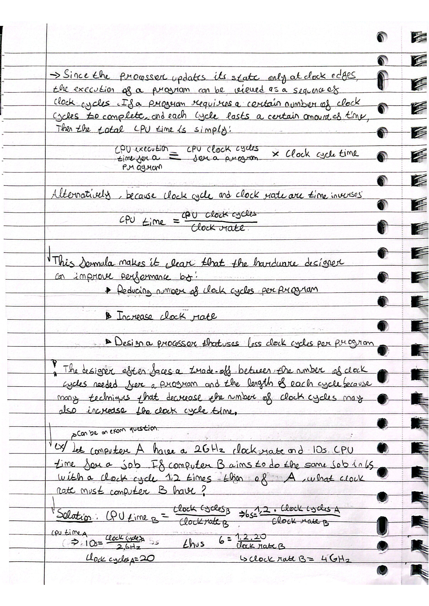
→ Since the processor updates its state only at clock edges the execution of a program can be viewed as a sequence of clock cycles. If a program requires a certain number of clock cycles to complete, and each cycle lasts a certain amount of time, Then the total CPU time is simply:
CPU execution time for a program ≡ CPU clock cycles for a program x clock cycle time
Alternatively, because clock cycle and clock rate are time inverse,
CPU time = CPU clock cycles ---------------- clock rate
down This formula makes it clear that the hardware designer can improve performance by:
▸ Reducing number of clock cycles per program
▸ Increase clock rate
▸ Design a processor that uses less clock cycles per program
▿ The designer often faces a trade-off between the number of clock cycles needed for a program and the length of each cycle because many techniques that decrease the number of clock cycles may also increase the clock cycle time,
p can be an exam question.
✓ ex/ let computer A have a 2GHz clock rate and 10s CPU time for a job If computer B aims to do the same job in 6s with a clock cycle 1.2 times than of A, what clock rate must computer B have?
Solution: CPU time_B = clock cycles_B -------------- clock rate_B ⇒ 6s = 1.2 * clock cycles_A ----------------- clock rate_B
CPU time_A
⇒ 10s = clock cycles_A -------------- 2GHz
clock cycles_A = 20
thus 6 = 1.2 * 20 -------- clock rate_B
⇒ clock rate_B = 4GHz
Page 23
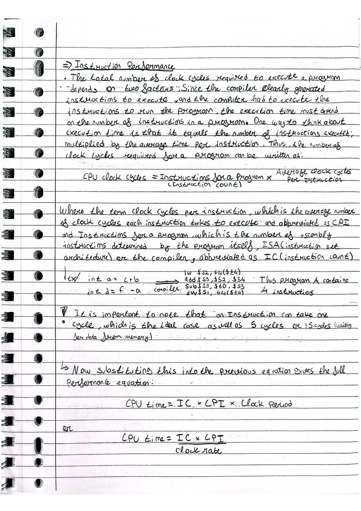
⇒ Instruction Performance
- The total number of clock cycles required to execute a program depends on two factors. Since the compiler clearly generated instructions to execute, and the computer had to execute the instructions to run the program, the execution time must depend on the number of instructions in a program. One way to think about execution time is that it equals the number of instructions executed, multiplied by the average time per instruction. Thus, the number of clock cycles required for a program can be written as:
CPU clock cycles = Instructions for a Program x Average clock cycles (Instruction count) per instruction
Where the term clock cycles per instruction, which is the average number of clock cycles each instruction takes to execute and abbreviated as CPI and Instructions for a program, which is the number of assembly instructions determined by the program itself, ISA (instruction set architecture) or the compiler, abbreviated as IC (instruction count)
1 c/ int a = c + b int d = f - a -⇒ compiler -⇒ lw t4) add s2, s1, s3 sw t4) Thus program A contains 4 instructions
▼ It is important to note that an Instruction can take one
- cycle, which is the ideal case, as well as 5 cycles or 15 cycles (waiting for data from memory)
↳ Now substituting this into the previous equation gives the full Performance equation:
CPU time = IC x CPI x Clock Period
or
CPU time = IC x CPI -------- clock rate
Page 24
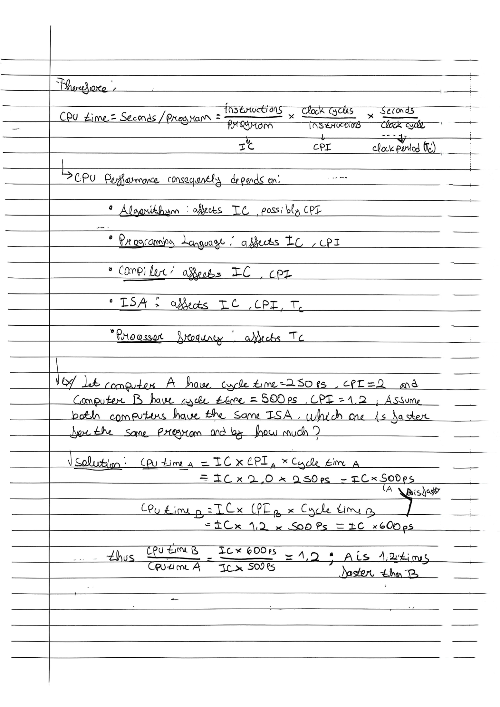
Therefore;
CPU time = Seconds/program = instructions/program x clock cycles/instructions x Seconds/clock cycle down IC down CPI down clock period (Tc)
→ CPU Performance consequently depends on:
-
Algorithm : affects IC, possibly CPI
-
Programming Language : affects IC, CPI
-
compiler : affects IC, CPI
-
ISA : affects IC, CPI, Tc
-
Processor frequency : affects Tc
Nex/ Let computer A have cycle time = 250ps, CPI = 2 and computer B have cycle time = 500ps, CPI = 1.2. Assume both computers have the same ISA. Which one is faster for the same program and by how much?
down Solution: CPU timeA = IC x CPIA x cycle time A = IC x 2.0 x 250ps = IC x 500ps (A [unclear]/cycle)
CPU timeB = IC x CPIB x cycle time B = IC x 1.2 x 500ps = IC x 600ps
thus CPU timeB / CPU timeA = IC x 600ps / IC x 500ps = 1.2 . A is 1.2 times faster than B
[Diagram meaning: downward arrows label the three factors in the CPU time equation as IC, CPI, and clock period (Tc). A downward arrow precedes “Solution:”.]
Page 25
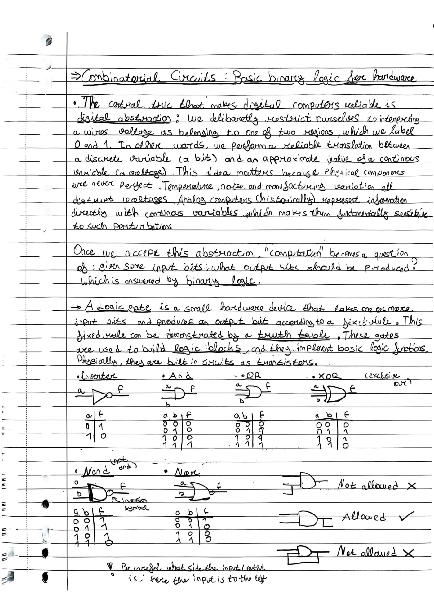
⇒Combinatorial Circuits : Basic binary logic for hardware
- The central trick that makes digital computers reliable is digital abstraction : we deliberately restrict ourselves to interpreting a wires voltage as belonging to one of two regions, which we label 0 and 1. In other words, we perform a reliable translation between a discrete variable (a bit) and an approximate value of a continous variable (a voltage). This idea matters because physical components are never perfect. Temperature, noise and manufacturing variation all disrupt voltages. Analog computers (historically) represent information directly with continous variables, which makes them fundamentally sensitive to such perturbations
Once we accept this abstraction, “computation” became a question of : given some input bits what output bits should be produced? which is answered by binary logic.
→ A logic gate is a small hardware device that takes one or more input bits and produces an output bit according to a fixed rule. This fixed rule can be demonstrated by a truth table. These gates are used to build logic blocks, and they implement basic logic functions. Physically, they are built in circuits as transistors,
-
inverter [diagram: NOT gate pointing right, input
aon left, outputfon right, small circle on output side] a | f 0 | 1 1 | 0 -
And [diagram: AND gate pointing right, inputs
aandbon left, outputfon right] a b | f 0 0 | 0 0 1 | 0 1 0 | 0 1 1 | 1 -
OR [diagram: OR gate pointing right, inputs
aandbon left, outputfon right] a b | f 0 0 | 0 0 1 | 1 1 0 | 1 1 1 | 1 -
XOR (exclusive [diagram: XOR gate pointing right, inputs
aandbon left, outputfon right] or) a b | f 0 0 | 0 0 1 | 1 1 0 | 1 1 1 | 0 -
Nand (not and) [diagram: NAND gate pointing right, inputs
aandbon left, outputfon right, small circle on output side; note points to circle saying “inversion symbol”] a b | f 0 0 | 1 0 1 | 1 1 0 | 1 1 1 | 0 -
Nor [diagram: NOR gate pointing right, inputs
aandbon left, outputfon right, small circle on output side] a b | f 0 0 | 1 0 1 | 0 1 0 | 0 1 1 | 0
[diagram: gate symbol drawn with output on right and an unusual input arrangement] Not allowed X
[diagram: gate symbol drawn with inputs entering from left and output on right] Allowed ✓
[diagram: gate symbol drawn with one wire looping/boxed beneath into the gate] Not allowed X
▽ Be careful what side the input/output is; here the input is to the left
Page 26
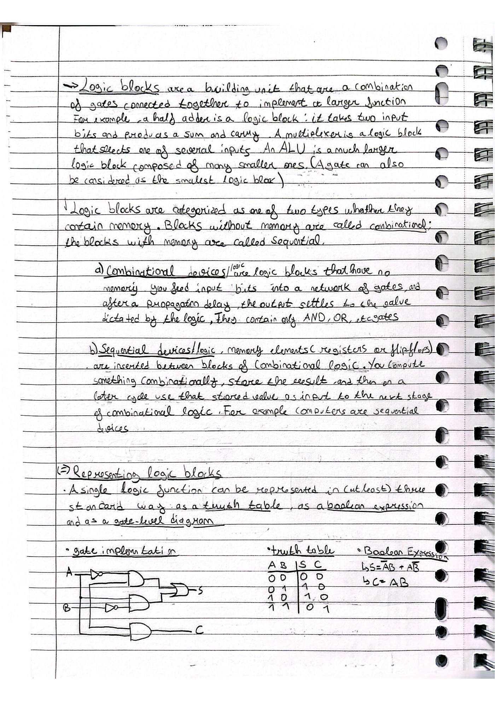
⇒ Logic blocks area building unit that are a combination of gates connected together to implement a larger function For example , a half adder is a logic block : it takes two input bits and produces a sum and carry . A multiplexer is a logic block that selects one of several inputs . An ALU is a much larger logic block composed of many smaller ones. (A gate can also be considered as the smallest logic block)
down Logic blocks are categorized as one of two types whether they contain memory . Blocks without memory are called combinational; the blocks with memory are called Sequential.
a) Combinational devices/logic are logic blocks that have no memory you feed input bits into a network of gates, and after a propagation delay , the output settles to the value dictated by the logic . They contain only AND, OR, etc gates
b) Sequential devices/logic, memory elements( registers or flip/flops) are inserted between blocks of Combinational logic . You compute something combinationally , store the result and then on a later cycle use that stored value as input to the next stage of combinational logic . For example computers are sequential devices
(⇒) Representing logic blocks
-
A single logic function can be represented in (atleast) three standard way ; as a truth table , as a boolean expression and as a gate-level diagram
-
gate implementation - truth table - Boolean Expression
[Diagram description: A gate-level circuit with inputs labeled A and B on the left.
- Top branch:
Apasses through a NOT gate, then into an AND gate. - Middle branch:
Bpasses through a NOT gate, then into another AND gate. - The two AND gate outputs feed an OR gate whose output is labeled
S. - Bottom branch:
AandBalso feed a separate AND gate whose output is labeledC.]
A B
A B | S C 0 0 | 0 0 0 1 | 1 0 1 0 | 1 0 1 1 | 0 1
↳ S = ĀB + A B̄ ↳ C = AB
Page 27
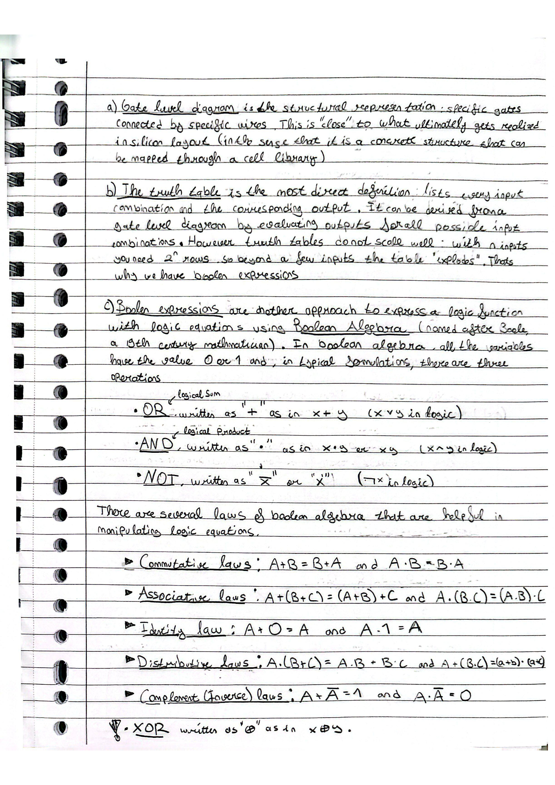
a) Gate level diagram is the structural representation [of] specific gates connected by specific wires This is “close” to what ultimately gets realized in silicon layout (in the sense that it is a concrete structure that can be mapped through a cell library)
b) The truth table is the most direct definition; lists every input combination and the corresponding output. It can be derived from a gate level diagram by evaluating outputs for all possible input combinations. However truth tables do not scale well: with n inputs you need 2ⁿ rows, so beyond a few inputs the table “explodes”. Thats why we have boolean expressions
c) Boolen expressions are another approach to express a logic function with logic equations using Boolean Algebra (named after Boole, a 19th century mathematician). In boolean algebra, all the variables have the value 0 or 1 and, in typical formulations, there are three operations
-
OR ← logical Sum written as ”+” as in x + y (x v y in logic)
-
AND ← logical Product written as ”.” as in x-y or xy (x ^ y in logic)
-
NOT written as “x̄” or “x’” (¬x in logic)
There are several laws of boolean algebra that are helpful in manipulating logic equations,
▸ Commutative laws : A + B = B + A and A . B = B . A
▸ Associative laws : A + (B + C) = (A + B) + C and A . (B . C) = (A . B) . C
▸ Identity law : A + 0 = A and A . 1 = A
▸ Distributive laws : A . (B + C) = A . B + B . C and A + (B . C) = (a+b) . (a+c)
▸ Complement (Inverse) laws : A + Ā = 1 and A . Ā = 0
⊽. XOR written as ”⊕” as in x ⊕ y.
Page 28
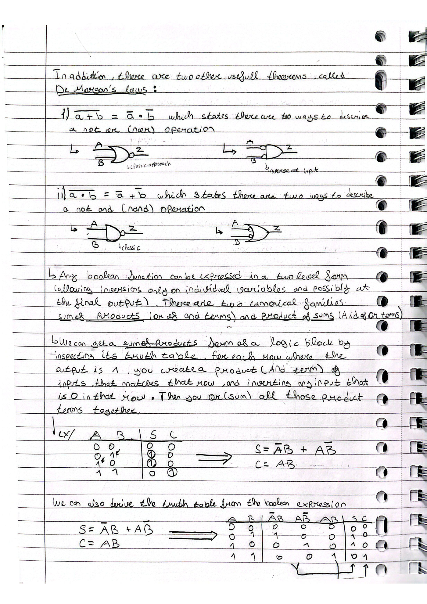
In addition, there are two other usefull theorems called De Morgan’s laws :
i) \overline{a + b} = \bar{a} - \bar{b} which states there are two ways to describe a not or (nor) operation
→ [diagram: OR-shaped gate with inputs labeled A and B, output labeled Z, with inversion bubble on output]
classic approach
→ [diagram: AND-shaped gate with inputs labeled A and B, inversion bubbles on both inputs, output labeled Z]
inverse at input
ii) \overline{a - b} = \bar{a} + \bar{b} which states there are two ways to describe a not and (nand) operation
→ [diagram: AND-shaped gate with inputs labeled A and B, output labeled Z, with inversion bubble on output]
classic
→ [diagram: OR-shaped gate with inputs labeled A and B, inversion bubbles on both inputs, output labeled Z]
→ Any boolean function can be expressed in a two level form (allowing inversions only on individual variables and possibly at the final output) There are two canonical families: sum of products (or of and terms) and product of sums (And of Or terms)
b) We can get a sum of products form of a logic block by inspecting its truth table, for each row where the output is 1, you create a product (AND term) of inputs that matches that row, and inverting any input that is 0 in that row. Then you or (sum) all those product terms together,
down ex/
A B | S C 0 0 | 0 0 0 1 | 1 0 1 0 | 1 0 1 1 | 0 1
[circled/highlighted: the 1 entries in column S for rows 01 and 10, and the 1 entry in column C for row 11]
→ S = \bar{A}B + A\bar{B} C = AB
We can also derive the truth table from the boolean expression
S = \bar{A}B + A\bar{B} C = AB
→
A B | \bar{A}B A\bar{B} AB | S C 0 0 | 0 0 0 | 0 0 0 1 | 1 0 0 | 1 0 1 0 | 0 1 0 | 1 0 1 1 | 0 0 1 | 0 1
[diagram under table: bracket/arrows indicating S comes from combining \bar{A}B and A\bar{B}, and C comes from AB]
Page 29
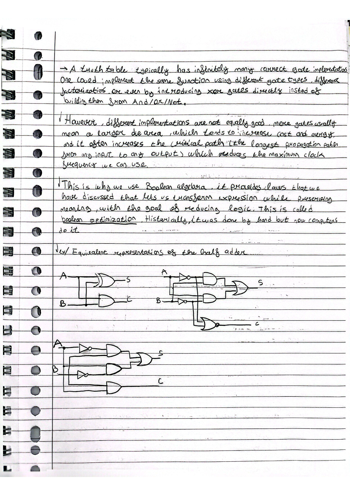
→ A truth table typically has infinitely many correct gate implementations One could implement the same function using different gate types, different factorizations or even by introducing xor gates directly insted of building them from And/or/Not.
down However, different implementations are not equally good, more gates usually mean a larger die area, which tends to increase cost and energy, and it often increases the critical path: (the longest propagation path from any input to any output) which reduces the maximum clock frequency we can use.
down This is why we use Boolean algebra, it provides laws that we have discussed that lets us transform expression while preserving meaning, with the goal of reducing logic. This is called boolean optimization Historically, it was done by hand but now computers do it
√ ex/ Equivalent representations of the half adder
[Diagram 1: half-adder circuit with inputs labeled A and B. The top gate is an XOR-like gate with output labeled S. The bottom gate is an AND gate with output labeled C. Wires from A and B feed both gates.]
[Diagram 2: half-adder circuit with inputs labeled A and B. Each input branches through an inverter/not gate and into two AND gates whose outputs feed an OR/XOR-like gate with output labeled S. A lower OR-like gate with a bubble on its output has output labeled c.]
[Diagram 3: half-adder circuit with inputs labeled A and B. A passes through a not gate into an AND gate; B passes through a not gate into another AND gate; the two AND outputs feed an OR/XOR-like gate with output labeled S. A lower AND gate has output labeled C.]
Page 30
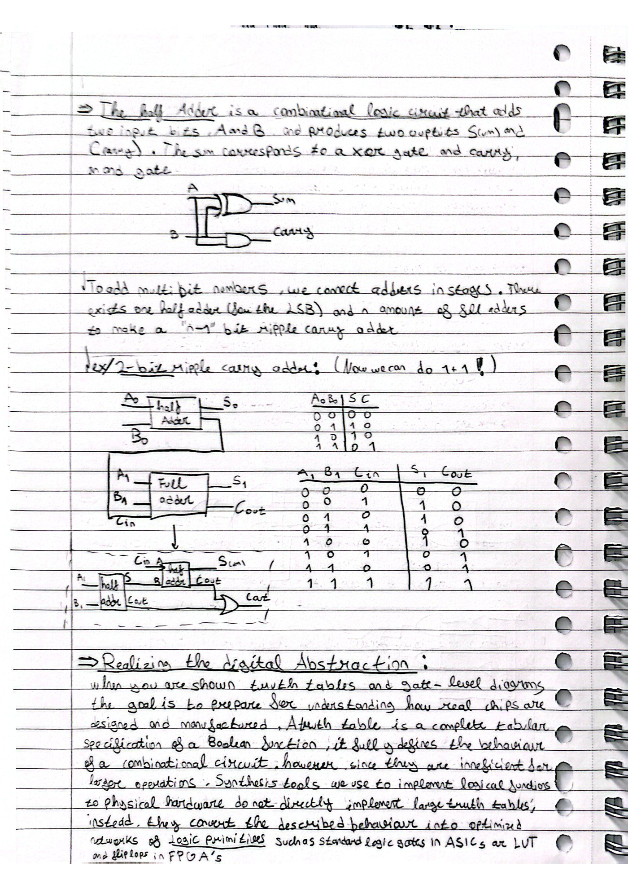
⇒ The half Adder is a combinational logic circuit that adds two input bits A and B and produces two outputs (Sum) and (Carry). The sum corresponds to a xor gate and carry, in and gate
A
[diagram: input A and input B feed two gates; the upper gate is an XOR-like shape labeled Sum, the lower gate is an AND-like shape labeled Carry.]
B
To add multi-bit numbers, we connect adders in stages. There exists one half adder (for the LSB) and n amount of full adders to make a “n-1” bit ripple carry adder
ex/ 2-bit ripple carry adder! (Now we can do 1 + 1 !)
[diagram: A0 and B0 enter a box labeled half Adder; outputs are S0 and a carry line going downward/right into the next stage.]
A_0 B_0 | S C 0 0 | 0 0 0 1 | 1 0 1 0 | 1 0 1 1 | 0 1
[diagram: A1, B1, and Cin enter a box labeled Full adder; outputs are S1 and Cout. A downward arrow points to the implementation diagram below.]
A_1 B_1 C_in | S_1 C_out 0 0 0 | 0 0 0 0 1 | 1 0 0 1 0 | 1 0 0 1 1 | 0 1 1 0 0 | 1 0 1 0 1 | 0 1 1 1 0 | 0 1 1 1 1 | 1 1
[diagram: full-adder implementation using two half adders and an OR gate.
- Left half adder takes
A1andB1; outputsSto the second half adder andCoutdownward/right. - Second half adder takes
Cinand the intermediateS; outputsSumandCout. - The two
Coutlines feed an OR gate whose output is labeledCout.]
⇒ Realizing the digital Abstraction :
when you are shown truth tables and gate-level diagrams the goal is to prepare for understanding how real chips are designed and manufactured. A truth table is a complete tabular specification of a Boolean function, it fully defines the behaviour of a combinational circuit. however, since they are inefficient for larger operations, Synthesis tools we use to implement logical functions to physical hardware do not directly implement large truth tables, instead, they convert the described behaviour into optimized networks of logic primitives such as standard logic gates in ASIC’s or LUT and flipflops in FPGA’s
Page 31
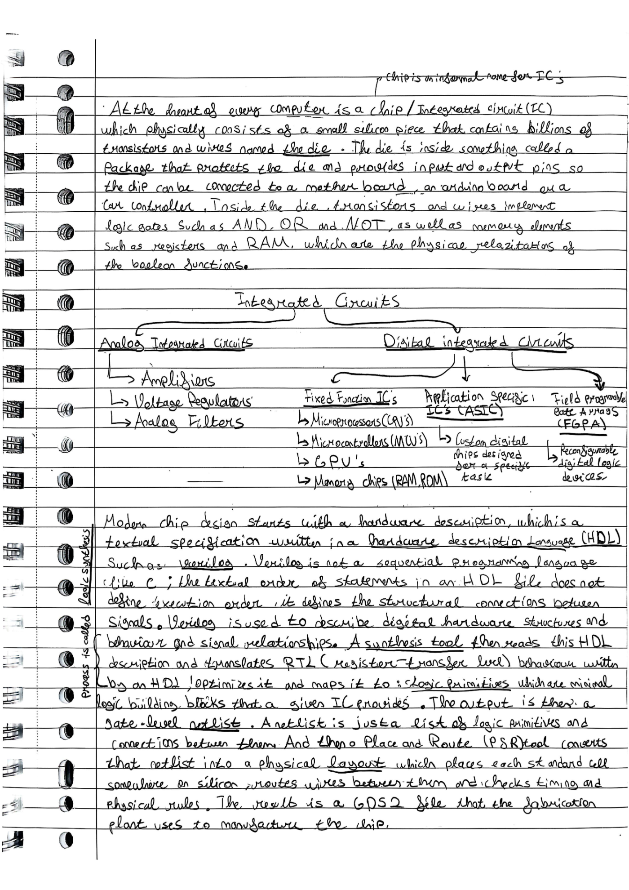
[small sketch/mark in upper-left margin]
[margin note at top right with arrow pointing to “chip”:] chip is an informal name for IC’s
- At the heart of every computer is a chip / Integrated circuit (IC) which physically consists of a small silicon piece that contains billions of transistors and wires named the die . The die is inside something called a Package that protects the die and provides input and output pins so the chip can be connected to a mother board , an arduino board or a car controller . Inside the die , transistors and wires implement logic gates such as AND, OR and NOT, as well as memory elements such as registers and RAM, which are the physical realizations of the boolean functions.
Integrated Circuits [diagram: title “Integrated Circuits” centered, with a branching brace/arrow structure splitting into “Analog Integrated Circuits” on the left and “Digital integrated Circuits” on the right]
Analog Integrated Circuits ↳ Amplifiers ↳ Voltage Regulators ↳ Analog Filters
Digital integrated Circuits [diagram: “Digital integrated Circuits” branches into three categories]
Fixed function IC’s ↳ Microprocessors (CPU’s) ↳ Microcontrollers (MCU’s) ↳ GPU’s ↳ Memory chips (RAM, ROM)
Application Specific IC’s (ASIC) ↳ Custom digital chips designed for a specific task
Field programable Gate Arrays (FGPA) ↳ Reconfigurable digital logic devices.
[vertical margin note beside lower paragraph, bracketed to the paragraph:] process is called logic synthesis
Modern chip design starts with a hardware description, which is a textual specification written in a hardware description language (HDL) Such as verilog . Verilog is not a sequential programming language like C ; the textual order of statements in an HDL file does not define execution order , it defines the structural connections between Signals. Verilog is used to describe digital hardware structures and behavior and signal relationships. A synthesis tool then reads this HDL description and translates RTL ( register-transfer level) behaviour written by an HDL, optimizes it and maps it to ; logic primitives which are minimal logic building blocks that a given IC provides . The output is then; a gate-level netlist . A netlist is just a list of logic primitives and connections between them. And then a Place and Route (P&R) tool converts that netlist into a physical layout which places each standard cell somewhere on silicon, routes wires between them and checks timing and physical rules. The results is a GDS2 file that the fabrication plant uses to manufacture the chip.
Page 32
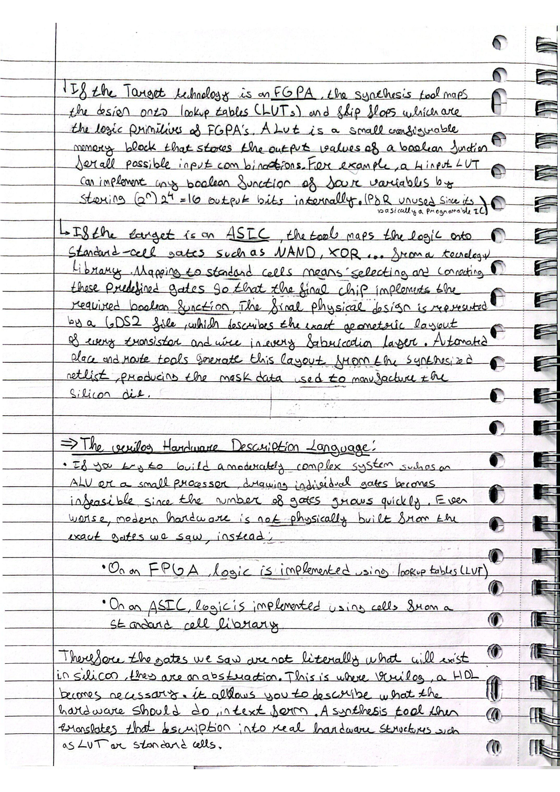
down If the Target technology is an FPGA , the synthesis tool maps the design onto lookup tables (LUTs) and flip flops which are the logic primitives of FPGA’s. A Lut is a small configurable memory block that stores the output values of a boolean function for all possible input combinations. For example, a 4 input LUT can implement any boolean function of four variables by storing (2^0) 2^4 = 16 output bits internally. [BR unused since its basically a programmable IC]
↳ If the target is an ASIC , the tool maps the logic onto Standard-cell gates such as NAND, XOR … from a technology library. Mapping to standard cells means selecting and connecting these predefined gates so that the final chip implements the required boolean function, The final physical design is represented by a GDS2 file , which describes the exact geometric layout of every transistor and wire in every fabrication layer . Automated place and route tools generate this layout from the synthesized netlist, producing the mask data used to manufacture the silicon die.
⇒ The verilog Hardware Description Language:
-
If you try to build a moderately complex system such as an ALU or a small processor , drawing individual gates becomes infeasible since the number of gates grows quickly. Even worse, modern hardware is not physically built from the exact gates we saw, instead;
-
On an FPGA , logic is implemented using lookup tables (LUT)
-
On an ASIC, logic is implemented using cells from a standard cell library
Therefore the gates we saw are not literally what will exist in silicon , they are an abstraction. This is where Verilog, a HDL becomes necessary , it allows you to describe what the hardware Should do , in text form. A synthesis tool then translates that description into real hardware structures such as LUT or standard cells.
Page 33
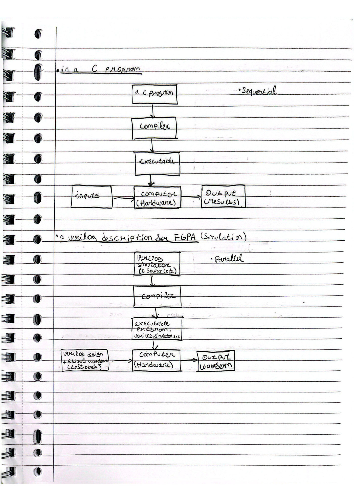
- in a C program
[a vertical flow diagram] [a C program] down compiler down executable down inputs → computer (Hardware) → Out put (results)
-
Sequential
-
a verilog description for FPGA (Simulation)
[a vertical flow diagram] verilog simulator (C source cod) down compiler down executable program verilog simulator.exe down verilog design
- stimuli waveform (testbench) → Computer (Hardware) → Out put waveform
- Parallel
Page 34
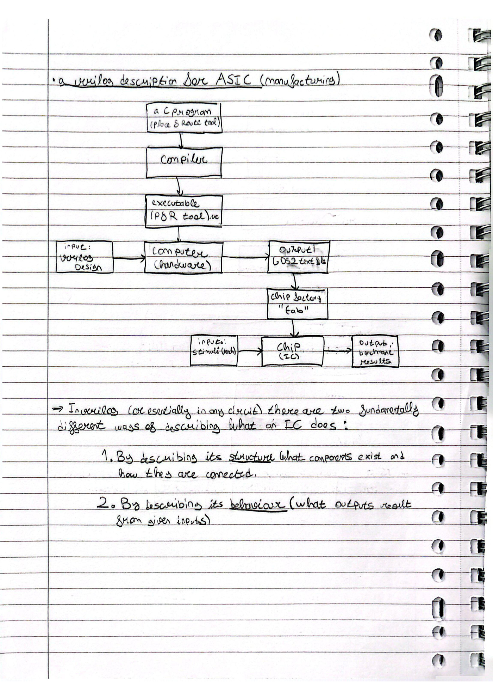
- a verilog description for ASIC (manufacturing)
[Diagram] [a C program (place & route tool)] down [compiler] down [executable (P&R tool).exe] down [input: verilog design] → [Computer (hardware)] → [output: GDS2 text file] down [chip factory “fab”] down [input: stimuli (test)] → [chip (IC)] → [output: observed results]
→ In verilog (or essentially in any circuit) there are two fundamentally different ways of describing what an IC does:
-
By describing its structure (what components exist and how they are connected).
-
By describing its behaviour (what outputs result from given inputs)
Page 35
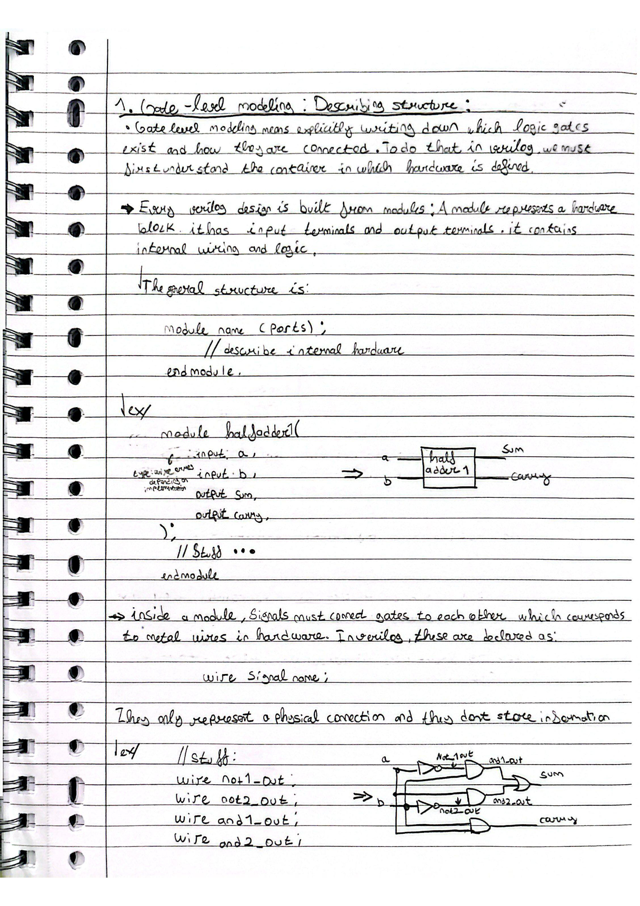
- Gate-level modeling : Describing structure ;
- Gate level modeling means explicitly writing down which logic gates exist and how they are connected. To do that in verilog we must first understand the container in which hardware is defined.
➜ Every verilog design is built from modules : A module represents a hardware block. it has input terminals and output terminals. it contains internal wiring and logic.
The general structure is:
module name (ports);
// describe internal hardware
endmodule.
\ex/
module halfadder1(
input a,
input b,
output sum,
output carry,
);
// Stuff ...
endmodule
[diagram: arrow pointing right to a rectangular block labeled “half adder 1”; inputs on left labeled “a” and “b”; outputs on right labeled “Sum” and “carry”]
➜ inside a module, Signals must connect gates to each other which corresponds to metal wires in hardware. In verilog, these are declared as:
wire Signal name;
They only represent a physical connection and they don’t store information
\ex/ // Stuff:
wire Not1-Out;
wire oot2_out;
wire and1_out;
wire and2_out;
[diagram: arrow pointing right to a gate-level half-adder sketch. Inputs labeled “a” and “b” feed two NOT gates and three AND/OR-style gates. Internal labels visible: “Not1-out”, “not2-out”, “and1-out”, “and2-out”. Final outputs on right labeled “sum” and “carry”.]
Page 36
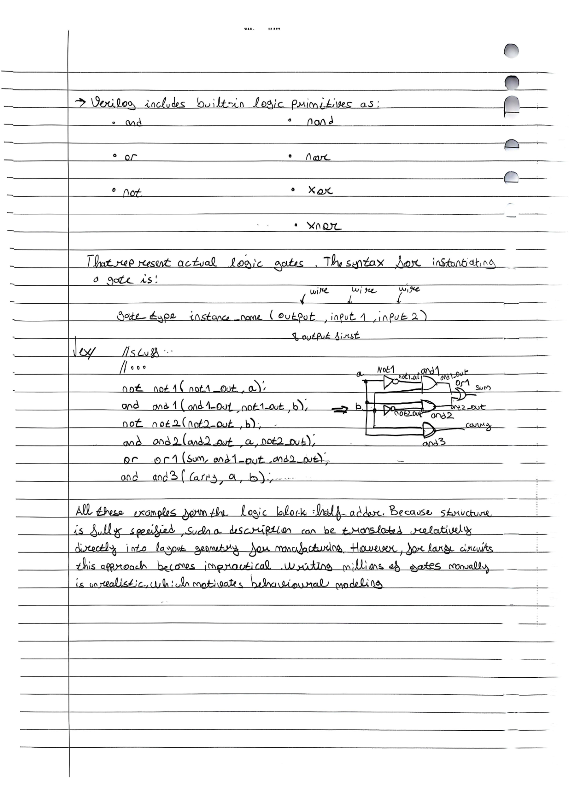
→ Verilog includes built-in logic primitives as:
-
and - nand
-
or - nor
-
not - xor
- xnor
That represent actual logic gates. The syntax for instantiating a gate is:
gate_type instance_name ( output, input 1, input 2 )
[above the terms are handwritten labels with arrows pointing down:]
wire wire wire
[below output there is a handwritten note with an arrow:]
output first
Ex/ //such: //…
not not1(not1_out, a); and and1(and1_out, not1_out, b); not not2(not2_out, b), and and2(and2_out, a, not2_out); or or1(sum, and1_out, and2_out); and and3(carry, a, b);
[diagram at right of the example: a gate-level half-adder drawing]
- inputs labeled
aandbenter from the left - top branch:
agoes through an inverter labelednot1, producingnot1_out, then into a gate labeledand1 - middle branch:
bgoes through an inverter labelednot2, producingnot2_out, then into a gate labeledand2 - outputs of
and1andand2feed anor1gate; output labeledsum - bottom branch goes to
and3; output labeledcarry - an arrow points toward the input line near
b
All these examples form the logic block: half-adder. Because structure is fully specified, such a description can be translated relatively directly into layout geometry for manufacturing. However, for large circuits this approach becomes impractical. Writing millions of gates manually is unrealistic, which motivates behavioural modeling.
Page 37
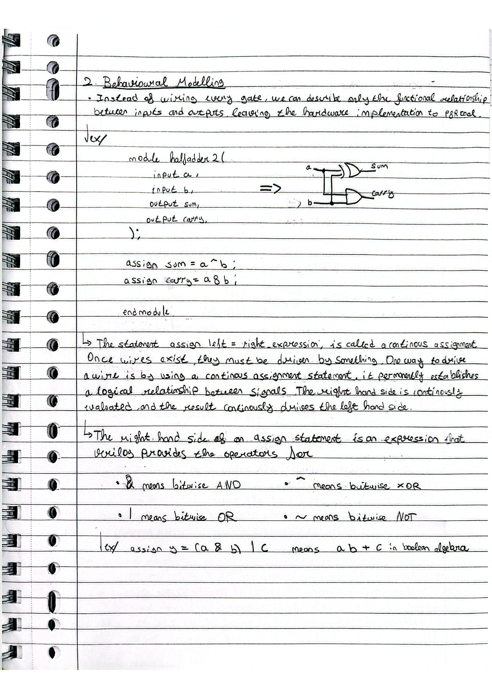
- Behavioural Modelling
- Instead of wiring every gate, we can describe only the functional relationship between inputs and outputs, leaving the hardware implementation to [unclear]
Vex/
module halfadder 2( input a, input b, output sum, output carry, );
⇒
[Diagram: inputs a and b feeding two gates; the upper gate is labeled sum, the lower gate is labeled carry. The sketch shows both inputs branching to both gates, representing a half-adder.]
assign sum = a ^ b; assign carry = a & b;
endmodule
→ The statement assign left = right_expression; is called a continuous assignment Once wires exist, they must be driven by something. One way to drive a wire is by using a continuous assignment statement. it permanently establishes a logical relationship between signals The right hand side is continuously evaluated, and the result continuously drives the left hand side.
→ The right hand side of an Assign statement is an expression that Verilog provides the operators for
-
& means bitwise AND - ^ means bitwise XOR
-
| means bitwise OR - ~ means bitwise NOT
Ex/ assign y = (a & b) | c means a b + c in boolean algebra
Page 38
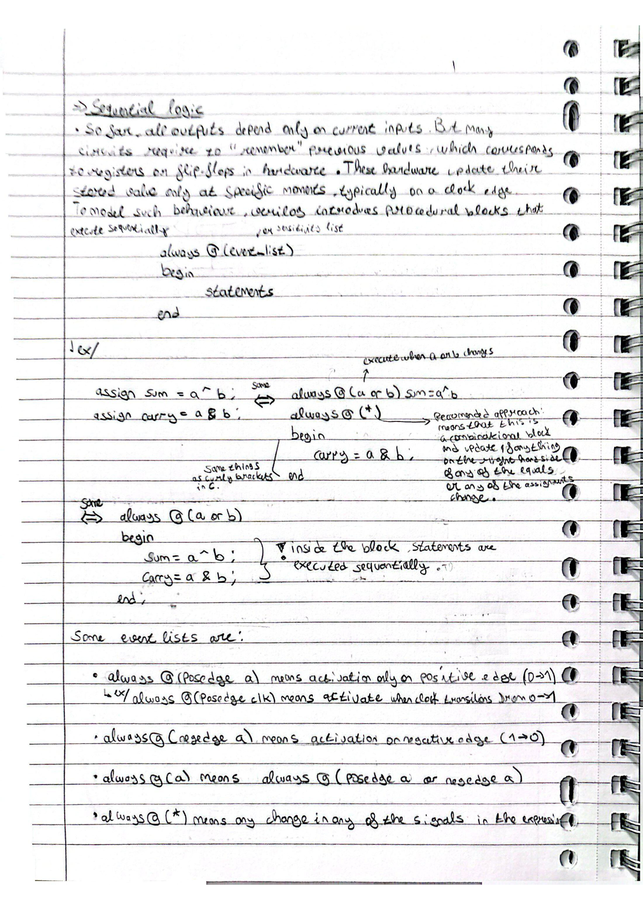
⇒ Sequential logic
. So far, all outputs depend only on current inputs. But many circuits require to “remember” previous values, which corresponds to registers or flip-flops in hardware. These hardware update their stored value only at specific moments, typically on a clock edge. To model such behaviour, verilog introduces procedural blocks, that
execute sequentially , or sensitivity list
always @ (event-list)
begin
statements
end
! ex/
assign sum = a ^ b; same assign carry = a & b; ⇐> always @ (a or b) sum = a ^ b. always @ (*) execute when a or b changes --------------------------⇒ begin carry = a & b; recommended approach: end means that this is a combinational block and update if anything on the right hand side of any of the equals or any of the assignment change.
same things
as curly brackets
in C.
same ⇐> always @ (a or b) begin sum = a ^ b; Carry = a & b; end, } inside the block, statements are executed sequentially.
Some event lists are:
-
always @ (posedge a) means activation only on positive edge (0→1) ex/ always @ (posedge clk) means activate when clock transitions from 0→1
-
always @ (negedge a) means activation on negative edge (1→0)
-
always @ (a) means always @ (posedge a or negedge a)
-
always @ (*) means any change in any of the signals in the expressi[unclear]
Page 39
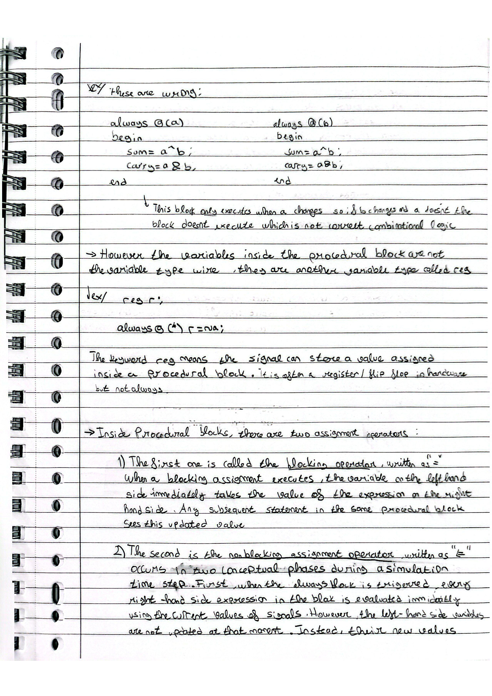
[x] these are wrong:
always @(a) always @(b) begin begin sum= a ^ b; sum= a ^ b; cary= a & b; cary= a & b; end end
down This block only executes when a changes so if b changes and a doesn’t the block doesnt execute which is not correct combinational logic
→ However the variables inside the procedural block are not the variable type wire, they are another variable type called reg
[ex] reg r;
always @(*) r = na;
The keyword reg means the signal can store a value assigned inside a procedural block. it is often a register/ flip flop in hardware but not always
→ Inside Procedural blocks, there are two assignment operators :
-
The first one is called the blocking operator, written as ”=” When a blocking assignment executes, the variable on the lefthand side immediatly takes the value of the expression on the right hand side, Any subsequent statement in the same procedural block sees this updated value
-
The second is the nonblocking assignment operator, written as "⇐" occures in two conceptual phases during a simulation time step. First, when the always block is triggered, every right-hand side expression in the blak is evaluated immediatly using the current values of signals. However the left-hand side variables are not updated at that moment. Instead, their new values
Page 40
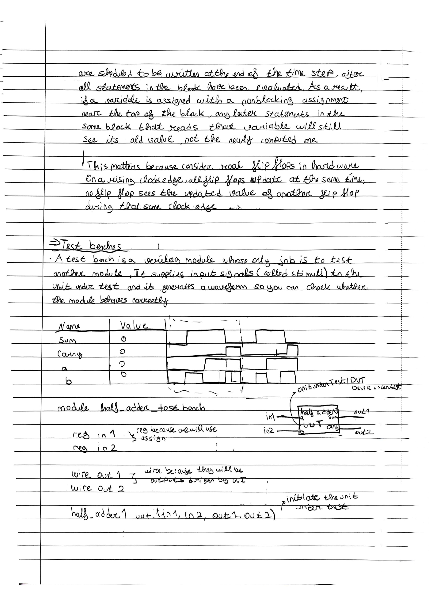
are schedule to be written at the end of the time step, after all statements in the block have been evaluated. As a result, if a variable is assigned with a nonblocking assignment near the top of the block, any later statements in the same block that reads that variable will still see its old value, not the newly computed one.
|This matters because consider real flip flops in hardware On a rising clock edge, all flip flops update at the same time; no flip flop sees the updated value of another flip flop during that same clock edge [unclear]
⇒ Test benches . A test bench is a verilog module whose only job is to test another module. It supplies input signals (called stimuli) to the unit under test and it generates a waveform so you can check whether the module behaves correctly
Name Value Sum 0 carry 0 a 0 b 0
[Diagram: timing waveform to the right of the table, with four traces corresponding top-to-bottom to Sum, carry, a, b. The traces show square-wave transitions over time, with two dashed vertical markers indicating time instants.]
module half_adder_test bench
reg in1 { reg because we will use assign reg in2
wire out1 } wire because they will be outputs driven by uut wire out2
[Block diagram at right: rectangle labeled half adder with internal labels sum and carry; inputs on left labeled a and b; outputs on right. Arrowed labels: in1 to upper-left input, in2 to lower-left input, out1 to upper-right output, out2 to lower-right output. Above the block: uut is our Test | DUT and Device under test.]
half_adder1 uut (in1, in2, out1, out2) pinitialize the unit under test
Page 41
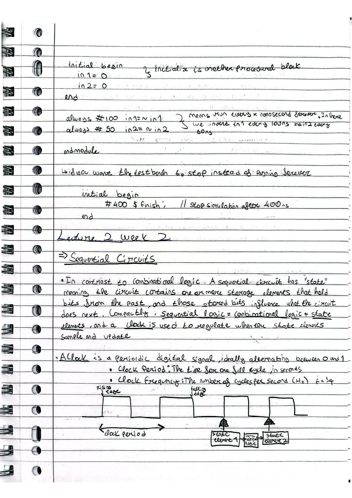
initial begin in1 = 0 in2 = 0 end } initialize is another procedural block
always #100 in1 = ~ in1 always # 50 in2 = ~ in2 } means run every x nanosecond forever. In here we invert in1 every 100ns and in2 every 50ns
endmodule
if you want the testbench to stop instead of runing forever
initial begin #400 $ finish; // Stops simulation after 400ns end
Lecture 2 week 2
⇒ Sequential Circuits
-
In contrast to combinational logic, A sequential circuit has “state” meaning the circuit contains one or more storage elements that hold bits from the past, and those stored bits influence what the circuit does next. Compactly ; Sequential logic = combinational logic + state elements, and a clock is used to regulate when the state elements sample and update
-
A Clock is a periodic digital signal, ideally alternating between 0 and 1 - Clock Period: The time for one full cycle, in second’s - Clock Frequency: The number of cycles per second (Hz) f = 1/T
[Diagram: a square-wave clock signal drawn left to right. The first upward transition is labeled “rising edge”; a later downward transition is labeled “falling edge”. A double-headed horizontal arrow beneath one full high-low cycle is labeled “clock period”. Near two later rising edges, upward arrows point from the waveform down to boxed labels. The first box says “state element 1”, then a box to its right says “combinational logic”, then a box to the right says “state element 2”.]
Page 42
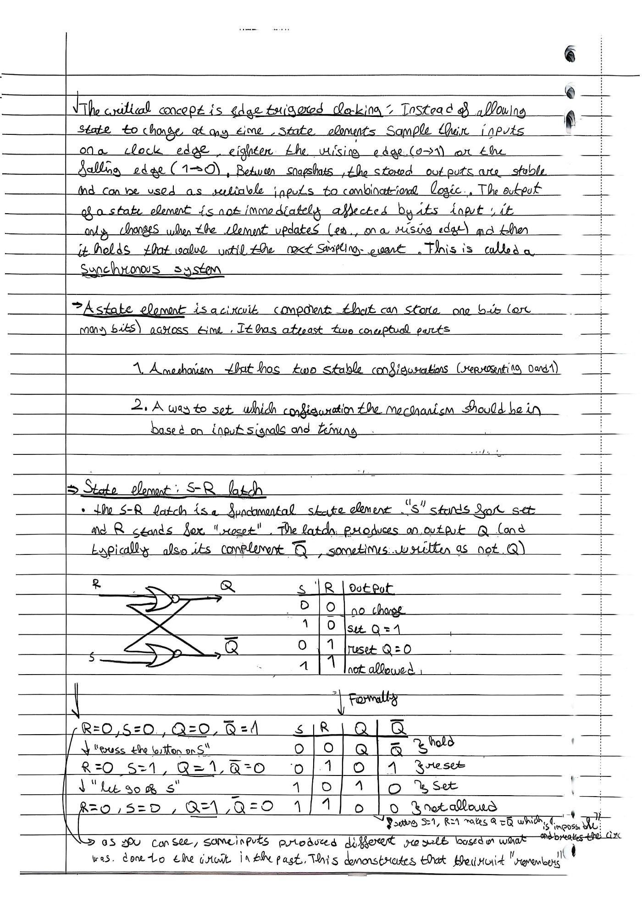
√ The critical concept is edge-triggered clocking; Instead of allowing state to change at any time, state elements sample their inputs on a clock edge, either the rising edge (0→1) or the falling edge (1→0). Between snapshots, the stored outputs are stable and can be used as reliable inputs to combinational logic. The output of a state element is not immediately affected by its input, it only changes when the element updates (eg, on a rising edge) and then it holds that value until the next sampling event. This is called a Synchronous system
→ A state element is a circuit component that can store one bit (or many bits) across time. It has atleast two conceptual parts
-
A mechanism that has two stable configurations (representing 0 and 1)
-
A way to set which configuration the mechanism should be in based on input signals and timing.
→ State element: S-R latch
- the S-R latch is a fundamental state element. “S” stands for set and R stands for “reset”. The latch produces an output Q (and typically also its complement Q̅, sometimes written as not Q)
[Diagram: two cross-coupled gates, upper input labeled R and upper output labeled Q; lower input labeled S and lower output labeled Q̅. The outputs are fed back crosswise to the opposite gate inputs.]
S R output 0 0 no change 1 0 set Q = 1 0 1 reset Q = 0 1 1 not allowed
down ( R=0, S=0, Q=0, Q̅=1 ) down “press the botton on S” R=0 S=1, Q=1, Q̅=0 down “let go of S” R=0, S=0, Q=1, Q̅=0
→ as you can see, some inputs produced different results based on what was done to the circuit in the past. This demonstrates that the circuit “remembers”
down Formally
S R Q Q̅ 0 0 Q Q̅ } hold 0 1 0 1 } reset 1 0 1 0 } Set 1 1 0 0 } not allowed
down but if S=1, R=1 makes Q = Q̅ which is impossible, it and breaks the circ[unclear]
Page 43
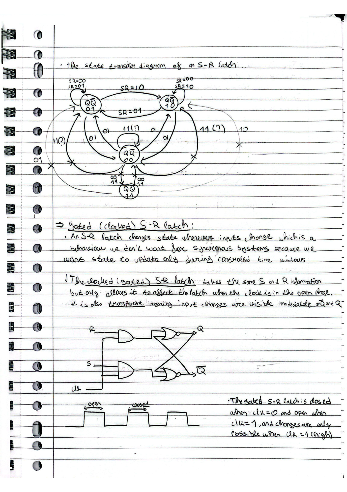
- the state transition diagram of an S-R latch.
[State-transition diagram]
-
Left state: circled
Q Q̅0 1 -
Right state: circled
Q Q̅1 0 -
Middle state: circled
Q Q̅0 0 -
Bottom state: circled
Q Q̅1 1 -
Self-loop on left state labeled:
SR=00SR=01 -
Arrow from left state to right state labeled:
SR=10 -
Arrow from right state to left state labeled:
SR=01 -
Self-loop on right state labeled:
SR=00SR=10 -
Around middle and upper states, additional arrows labeled:
01010101 -
Self-loop on middle state labeled:
11(?) -
Large outer arrows on left and right labeled:
11(?)11(?) -
Cross marks
xshown on some outer transition paths. -
Two downward arrows from middle state toward bottom state labeled:
0011 -
Near bottom state, labels repeated on both sides:
0011
→ gated (clocked) S-R latch;
- An S-R latch changes state whenever inputs change which is a behaviour we don’t want for syncronous systems because we want state to update only during controlled time windows
down The clocked (gated) SR latch takes the same S and R information but only allows it to affect the latch when the clock is in the open phase. it is also transparent meaning input changes are visible immediately in Q and Q̅
[Logic diagram]
-
Input labels on left:
RSclk -
Randclkfeed an AND gate. -
Sandclkfeed an AND gate. -
Outputs of those AND gates feed a cross-coupled pair of NOR gates.
-
Right-side outputs labeled:
QQ̅
[Clock waveform]
-
Rectangular pulse train drawn.
-
Above first high pulse:
open -
Above second high pulse:
closed -
The gated S-R latch is closed when clk = 0 and open when clk = 1, and changes are only possible when clk = 1 (high)
Page 44
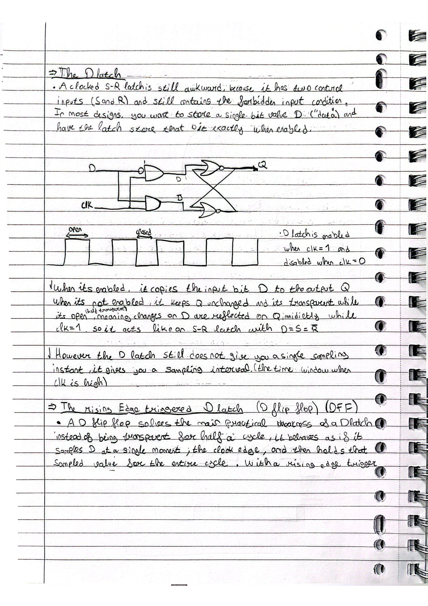
⇒ The D latch
- A clocked S-R latch is still awkward, because it has two control inputs (S and R) and still ontains the forbidden input condition. In most designs, you want to store a single-bit value D: (“data”) and have the latch store that bit exactly when enabled.
[Diagram: A gate-level D latch circuit.
- Left inputs labeled
D(upper) andCLK(lower). Dfeeds two gates; the upper gate has a small inversion bubble on its input.CLKalso feeds the gating network.- The two gated outputs are labeled
D(upper path) andD̅(lower path). - These drive a cross-coupled pair of NOR-like gates on the right.
- Output from the upper right gate is labeled
Q. - Cross-coupled feedback lines connect the two right-side gates.]
[Timing sketch below diagram:
- A square-wave clock waveform is drawn.
- Above the first high pulse is a double-headed horizontal arrow labeled
open. - Above a later high pulse is a left-pointing arrow labeled
closed. - Note at right:
* D latch is enabledwhen clk = 1 anddisabled when clk = 0]
down when its enabled, it copies the input bit D to the output Q when its not enabled it keeps Q unchanged and its transparent while its open (not transparent) meaning changes on D are reflected on Q imidiatly while clk = 1 so it acts like an S-R latch with D = S = R
down However the D latch still does not give you a single sampling instant it gives you a sampling interval. (the time window when clk is high)
⇒ The rising Edge triggered D latch (D flip flop) (DFF)
- A D flip flop solves the main practical weakness of a D latch instead of being transparent for half a cycle, it behaves as if it samples D at a single moment; the clock edge, and then holds that sampled value for the entire cycle. With a rising edge trigger
Page 45
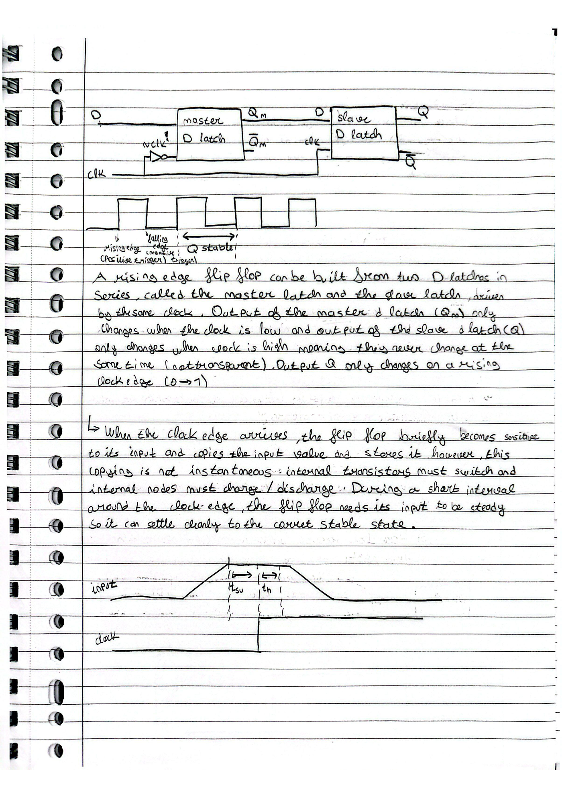
D
[Diagram: a master-slave D flip-flop made from two D latches in series.]
Left input label: D
First block label:
master
D latch
Clock line below first block with an inverter symbol feeding the master latch clock.
Label near inverter: vclk'
Main clock label: clk
Between blocks labels:
Top: Qm
Bottom: Q̅m
Second block label:
slave
D latch
Input to second block top label: D
Clock input to second block bottom label: clk
Outputs on right:
Top: Q
Bottom: Q̅
[Timing diagram below the flip-flop: a repeating square-wave clock.]
Annotations under the timing diagram:
down
storage
(positive trigger)
falling edge
(negative trigger)
<--------->
Q stable
A rising edge flip flop can be built from two D latches in series, called the master latch and the slave latch, driven by the same clock. Output of the master d latch (Qm) only changes when the clock is low and output of the slave d latch(Q) only changes when clock is high meaning they never change at the same time (not transparent). Output Q only changes on a rising clock edge (0→1)
↳ When the clock edge arrives, the flip flop briefly becomes sensitive to its input and copies the input value and stores it however, this copying is not instantaneous; internal transistors must switch and internal nodes must charge / discharge. During a short interval around the clock edge, the flip flop needs its input to be steady so it can settle cleanly to the correct stable state.
[Bottom graph: input waveform above, clock waveform below. A highlighted window is marked around the clock edge.]
Label near upper waveform: input
[Input waveform rises, stays high briefly, then falls.]
Three dashed vertical markers around the active clock edge.
Top arrows indicate intervals around the center marker.
Labels under the window:
tSU
th
Label near lower waveform: clock
[Clock waveform shows a rising edge aligned with the center dashed marker.]
Page 46
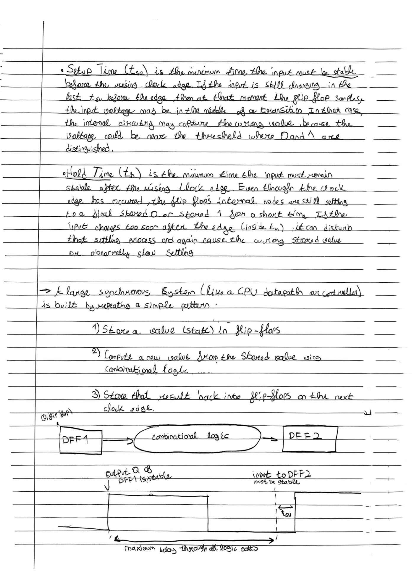
-
Setup Time (tₛᵤ) is the minimum time the input must be stable before the rising clock edge. If the input is still changing in the last tₛᵤ before the edge then at that moment the flip flop sees, the input voltage may be in the middle of a transition. In that case, the internal circuitry may capture the wrong value because the voltage could be near the threshold where 0 and 1 are distinguished.
-
Hold Time (tₕ) is the minimum time the input must remain stable after the rising clock edge. Even though the clock edge has occurred, the flip flops internal nodes are still settling to a final stored 0 or stored 1 for a short time. If the input changes too soon after the edge (inside tₕ), it can disturb that settling process and again cause the wrong stored value or abnormally slow settling
→ A large synchronous System (like a CPU datapath or controller) is built by repeating a simple pattern:
-
Store a value (state) in flip-flops
-
Compute a new value from the Stored value using combinational logic …
-
Store that result back into flip-flops on the next clock edge.
[Diagram: block diagram with an arrow from DFF1 to an oval labeled combinational logic, then an arrow to DFF2. Near the left/top of DFF1 is the label Q, [unclear] [unclear] with a small upward arrow.]
output Q of DFF1 is stable
input to DFF2 must be stable
tₛᵤ
maximum delay through all logic gates
[Diagram: timing sketch below the block diagram. A waveform under output Q of DFF1 is stable goes high, stays high for a long interval, then goes low. A dashed vertical line near the right is labeled input to DFF2 must be stable; a short horizontal double-arrow just before that line is labeled tₛᵤ. A long horizontal arrow along the bottom spans from shortly after the left transition to near the dashed line and is labeled maximum delay through all logic gates.]
Page 47
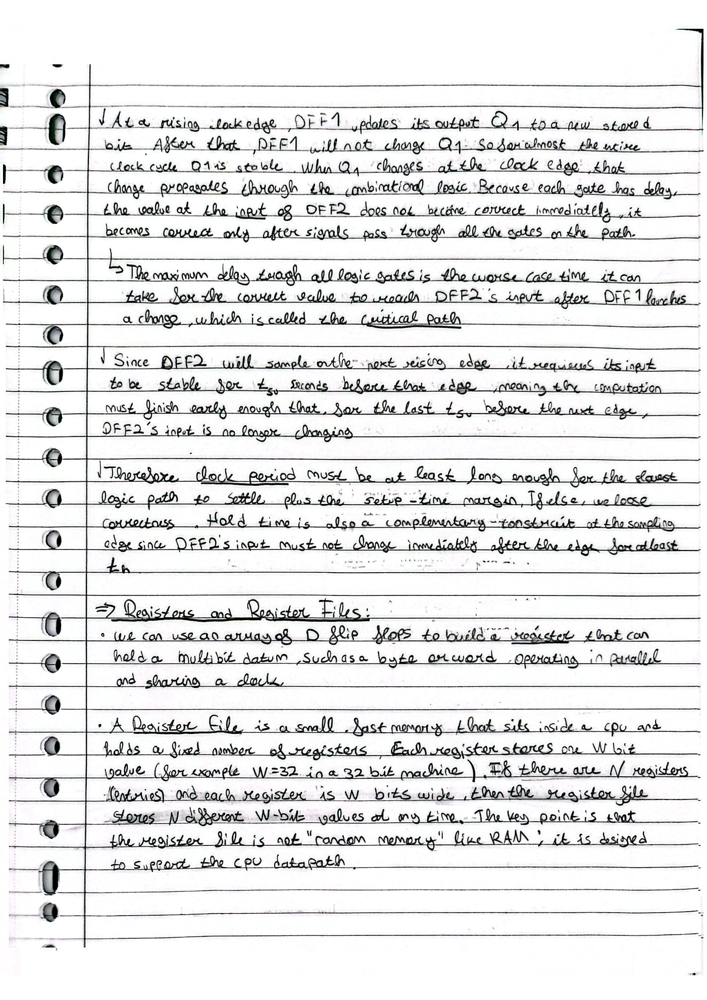
√ At a rising clock edge, DFF1 updates its output Q1 to a new stored bit. After that, DFF1 will not change Q1. So for almost the entire clock cycle Q1 is stable. When Q1 changes at the clock edge, that change propagates through the combinational logic. Because each gate has delay, the value at the input of DFF2 does not become correct immediately, it becomes correct only after signals pass through all the gates on the path.
↳ The maximum delay through all logic gates is the worse case time it can take for the correct value to reach DFF2’s input after DFF1 launches a change, which is called the critical path
√ Since DFF2 will sample on the next rising edge, it requires its input to be stable for tₛᵤ seconds before that edge, meaning the computation must finish early enough that, for the last tₛᵤ before the next edge, DFF2’s input is no longer changing
√ Therefore clock period must be at least long enough for the slowest logic path to settle plus the setup-time margin. If else, we loose correctness. Hold time is also a complementary constraint at the sampling edge since DFF2’s input must not change immediately after the edge for atleast tₕ
⇒ Registers and Register Files:
-
we can use an array of D flip flops to build a register that can hold a multibit datum, such as a byte or word, operating in parallel and sharing a clock,
-
A Register File, is a small, fast memory that sits inside a cpu and holds a fixed number of registers, Each register stores one W bit value (for example W=32 in a 32 bit machine). If there are N registers. (“entries”) and each register is W bits wide, then the register file stores N different W-bit values at any time. The key point is that the register file is not “random memory” like RAM ; it is designed to support the cpu datapath.
Page 48
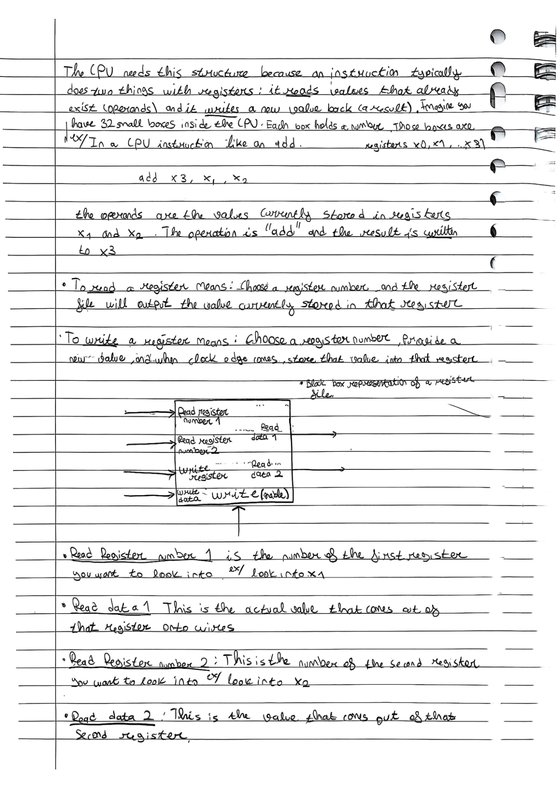
The CPU needs this structure because an instruction typically does two things with registers : it reads values that already exist (operands) and it writes a new value back (a result), Imagine you have 32 small boxes inside the CPU. Each box holds a number. Those boxes are “ex”/ In a CPU instruction like an add. registers x0, x1, … , x31
add x3, x1, x2
the operands are the values currently stored in registers x1 and x2 . The operation is “add” and the result is written to x3
-
To read a register means : Choose a register number and the register file will output the value currently stored in that register
-
To write a register means : Choose a register number Provide a new value, and when clock edge comes, store that value into that register
-
[black box representation of a register file,]
[Diagram: a rectangular block with arrows entering from the left and one arrow entering upward from below; two arrows leave to the right. Inside the block are labels:] Read register number 1
Read register number 2
write register
write data
write e(enable)
Read data 1
Read in data 2
[Left-side arrows point into: Read register number 1, Read register number 2, write register, and write data.
Right-side arrows point out from: Read data 1 and Read in data 2.
One upward arrow from below points into the bottom of the block, associated with write e(enable).]
-
Read Register number 1 is the number of the first register you want to look into . ex/ look into x1
-
Read data 1 This is the actual value that comes out of that register onto wires
-
Read Register number 2 : This is the number of the second register you want to look into ex/ look into x2
-
Read data 2 : This is the value that comes out of that second register,
Page 49
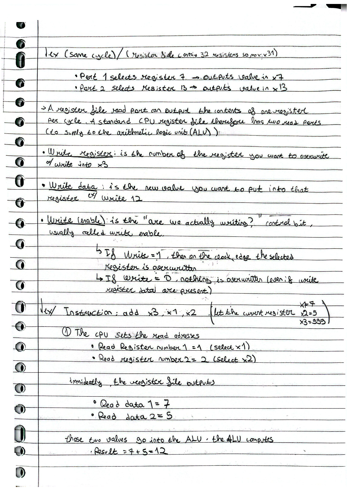
1.c4 (same cycle) / (register file contains 32 registers so max. x31)
- Port 1 selects register 7 → outputs value in x7
- Port 2 selects register 13 → outputs value in x13
→ A register file read port can output the contents of one register per cycle. A standard CPU register file therefore has two read ports (to supply to the arithmetic logic unit (ALU))
-
Write register: is the number of the register you want to overwrite & write into x8
-
Write data ; is the new value you want to put into that register ex/ write 12
-
Write (enable): is the “are we actually writing?” control bit, usually called write enable.
↳ If Write = 1, then on the clock edge the selected register is overwritten
↳ If Write = 0, nothing is overwritten (even if write register data are present)
Nex/ Instruction: add x3, x1, x2 (let the current register x1=7 x2=5 x3=999)
(1) The CPU sets the read addresses
- Read Register number 1 = 1 (select x1)
- Read register number 2 = 2 (select x2)
immediately the register file outputs
- Read data 1 = 7
- Read data 2 = 5
those two values go into the ALU, the ALU computes
- Result = 7 + 5 = 12
Page 50
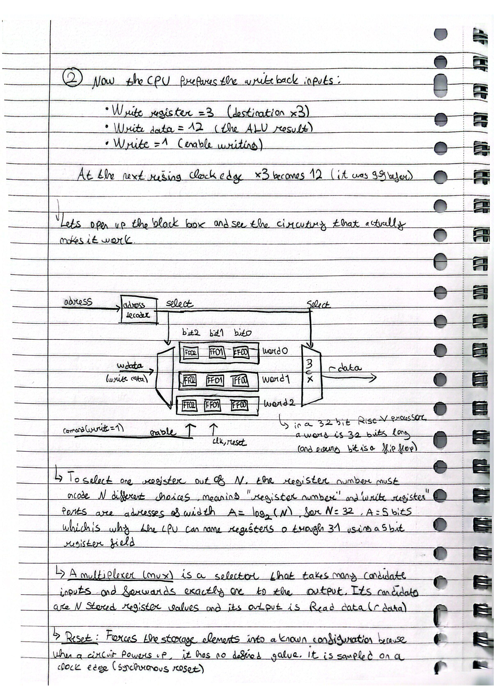
(2) Now the CPU prepares the writeback inputs:
- Write register = 3 (destination x3)
- Write data = 12 (the ALU result)
- Write = 1 (enable writing)
At the next rising clock edge x3 becomes 12 (it was 99 before)
down Lets open up the black box and see the circuitry that actually makes it work
[Diagram]
- Left input arrow labeled
adresspointing into a box labeled:addressdecoder - Output from decoder labeled
selectruns rightward across the top, then down on the right, also labeledselect - A downward arrow from the decoder/select line feeds the left side of a tall wedge-shaped element
- Left side input arrow into that wedge labeled:
wdata(write data) - Bottom left line labeled
command (write = 1)leading toenable - Two upward arrows from below into the register array area labeled:
clk, reset - Center register array has three rows labeled on the right:
word0word1word2 - Above the top row:
bit2 bit1 bit0 - Top row boxes:
FF02FF01FF00 - Middle row boxes:
FF12FF01FF09 - Bottom row boxes:
FF02FF01FF00 - On the right, a mux-like wedge labeled vertically:
32x - Output arrow from mux labeled
r-data - Note to lower right of diagram:
↪ is a 32 bit Risc-V processor,a word is 32 bits long(and every bit is a flip flop)
↪ To select one register out of N, the register number must encode N different choices, meaning “register number” and “write register” ports are adresses of width A = log_2(N), for N = 32 , A = 5 bits which is why the CPU can name registers 0 through 31 using a 5 bit register field
↪ A multiplexer (mux) is a selector that takes many candidate inputs and forwards exactly one to the output. Its candidates are N stored register values and its output is Read data (r data)
↪ Reset: Forces the storage elements into a known configuration because when a circuit powers up, it has no defined value. It is sampled on a clock edge (synchronous reset)
Page 51
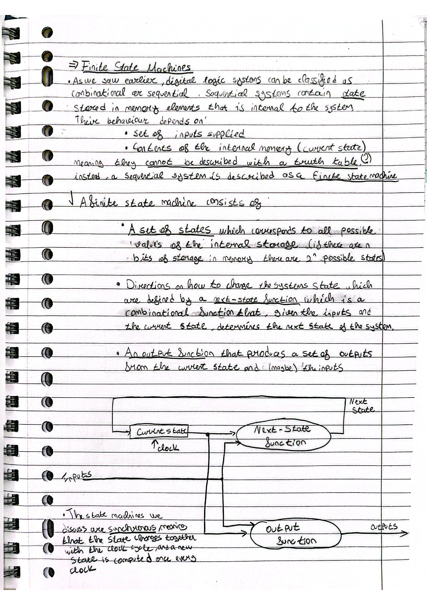
⇒ Finite State Machines
. As we saw earlier, digital logic systems can be classified as combinational or sequential. Sequential systems contain state stored in memory elements that is internal to the system Their behaviour depends on: - set of inputs supplied - Contents of the internal memory (current state) meaning they cannot be described with a truth table (?) instead, a Sequential system is described as a finite state machine
down A finite state machine consists of:
- A set of states which corresponds to all possible
values of the internal storage (if there are n
bits of storage in memory there are 2ⁿ possible states)
- Directions on how to change the systems state, which
are defined by a next-state function which is a
combinational function that, given the inputs and
the current state, determines the next state of the system,
- An output function that produces a set of outputs
from the current state and (maybe) the inputs
[Diagram]
A rectangular feedback loop across the top feeds from the right side back to the left into a box labeled:
Current-state
An arrow labeled “clock” points upward into Current-state.
From Current-state, an arrow points right into an oval labeled:
Next-State
function
A line from the right of Next-State function goes upward/right and is labeled:
Nexte
State
A horizontal line from the left labeled:
inputs
runs rightward and connects upward into the Next-State function and also continues downward/right toward the output path.
Below, an oval is labeled: out put function
An arrow exits to the right from out put function and is labeled:
outputs
The line feeding out put function comes from the inputs/current-state connection above.
. The state machines we discuss are synchronous meaning that the state changes together with the clock cycle and a new state is computed once every clock
Page 52
down When a finite state machine is used as a controller, the output function is often restricted to depend on just the current State, Such a FSM is called a Moore Machine
down If the output function can depend on both the current state and the current input, the machine is called a Mealy Machine
down These two machines are equivalent in their capabilities and one can be turned into another mechanically however the basic advantage of a Moore machine is that it can have a faster [unclear], while a Mealy Machine can be smaller and have a faster reaction time
a) Moore Machines . A finite state Machine can be implemented with a temporary register that holds the current State and a block of combinational logic that determines the output.
input down → → → into box labeled: “combinational logic for next state”
From this box, arrows go right into a narrow vertical register block labeled “register” Outputs from the register go right into a second box labeled: “combinational logic for outputs” From this second box, arrows go right and are labeled output. Several feedback lines loop from the register outputs back to the left, into the first box (“combinational logic for next state”).
down ex/ Moore FSM parities checker
- we will design an Moore FSM that reads a 1-bit input stream i overtime and produces an output o such that
o = 1 iff the number of 1s seen so far is odd
Page 53
Because this is a moore machine, the defining constraint is
up output function O = g(Q) (output depends only on the current state)
up next state function Q⁺ = f´(Q, i) (next state depends on current state and input)
down Where, Q denotes the current state (the value stored in the state register), and Q⁺ denotes the next state (the value that will be stored after the next clock edge)
↳ A state should store exactly the “memory of the past” that is necessary to produce correct future behaviour. For parity, we dont need the exact count of ones, we only need whether the count so far is even or odd, which is a single bit information, meaning there are exactly two meaningfull situations
-
Even The number of 1s seen so far is even
-
ODD: The number of 1s seen so far is odd
Because this is a Moore machine, we attach the output to the state:
-
In state EVEN, the correct output is O = 0
-
In state ODD, the correct output is O = 1
Now we decide how input i moves the machine between states.
↳ Receiving a 0 does not change the number of ones seen so far → parity doesnt change
↳ Receiving a 1 increases the number of ones by one → parity toggles
Page 54
So the transitions are
↳ from Even
- if i = 0, stay in Even
- if i = 1, go to ODD
↳ from ODD
- if i = 0, stay in ODD.
- if i = 1, go to Even
From these, we can construct a state diagram representing the FSM;
[State diagram]
- Two states drawn as circles:
- Top circle labeled: EVEN [0]
- Bottom circle labeled: ODD [1]
- An incoming arrow points to the EVEN state from the left, indicating the initial state.
- A self-loop on EVEN labeled 0.
- A self-loop on ODD labeled 0.
- A curved arrow from EVEN down to ODD labeled 1.
- A curved arrow from ODD up to EVEN labeled 1.
○ States
xyz state name
LUV outputs uv, ↳ Depends only on state for moore machines
i is → State transition caused by changing the input
↳ initial state
A FSM can also be represented by a Transition Table
Q i Q⁺ o
EVEN 0 EVEN 0
EVEN 1 ODD 0
ODD 0 ODD 1
ODD 1 EVEN 1
(Because it’s moore, the output column is determined solely by Q, NOT i)
OR a “truth table” where D represents a D flip flop as the state register.
Bit representation
down
Q i D o
0 0 0 0
0 1 1 0
1 0 1 1
1 1 0 1
down D is the same as Q⁺
Page 55
From the truth table we can directly infer the boolean expression and the actual gate level implementation
D = i ⊕ Q o = Q
[Diagram: an XOR gate takes inputs Q (feedback from the flip-flop output) and i; its output feeds D of a D flip-flop. The flip-flop output is labeled Q and goes to o. A feedback wire from Q loops back to the XOR input. Labels under the drawing: Next state under the XOR/D input side, clk under the clock input arrow to the flip-flop, and current state near the Q output/feedback side.]
In verilog, we most often describe hardware in RTL (register- transfer level) meaning we describe the hardware as:
-
Registers (state elements) that update on a clock edge, and
-
Combinational logic that computes (Next state)
- The next value to load into those registers, and
- the outputs
RTL is a subset of behavioral verilog that can be automatically translated (synthesized) to a gate level description
[Flow diagram, vertical boxes with downward arrows:] RTL behavioral Verilog description down RTL Synthesis Tool down gate-level verilog description down Place & Route Tool down GDS2 text file
module Moore FSM ( input clock, input i, output O );
reg current_state; reg next_state;
initial Current state = 0; // set initial state to 0
always @ (posedge clock) Current State ⇐ next_state
always @(*) next_state = //next_state_logic (current_state, i) = current_state ^ i;
assign O = //output_logic (current_state) = current_state endmodule
Page 56
downAnd the test bench looks like:
module moore_parity_checker1_tb;
reg clock;
reg i;
wire O;
moore_parity_checker1 uut (clock, i, O)
initial begin
clock = 1'b0; (is a verilog literal that means
i = 1'b0; 1 = number of bits (width)
end 'b = the base is binary
0 = the value
always #50 clock = ~clock //invert clock every 50ns, clock period is 100ns
always #200 i = ~i //invert i every 200ns on negative clock edge
endmodule
↳ However in a real hardware, the state register does not power up as 0 or 1. Writing “initial current state=0” may “fix” the waveform in simulation, but it does not correspond to real hardware behaviour
down Therefore a “reset” signal is added to the machine:
module moore_FSM(
input clock
input reset //added
input i
output o
);
reg current_state
reg next_state
always @(posedge clock) begin
if (reset) current_state <= 0
else current_state <= next_state
end
[boxed region] → Truth table with reset:
reset Q i | D o
0 0 0 | 0 0
0 0 1 | 1 0
0 1 0 | 1 1
0 1 1 | 0 1
1 0 0 | 0 0
1 0 1 | 0 0
1 1 0 | 0 0
1 1 1 | 0 0
(reset can be encoded as 0 or 1 in this case its 1)
[The “Truth table with reset” area is boxed, with an arrow pointing to the table.]
Page 57
Mealy/Moore vending machine FSM
-
This example designs a Moore type controller for a vending machine that accepts 5c and 10c coins and outputs coffee once the machine has received at last 15c. The inputs are
- 00 → no coin inserted
- 10 → 5c coin inserted
- 01 → 10c coin inserted
- 11 → invalid input
First design.
[State diagram at left]
- Initial arrow points to circled state:
0c[0] - Self-loop on
0c [0]labeled00 - Arrow from
0c [0]down to circled state5c[0]labeled10 - Curved arrow from
0c [0]down/right to circled state10c[0]labeled01 - Self-loop on
5c [0]labeled00 - Arrow from
5c [0]down to circled state10c[0]labeled10 - Curved arrow from
5c [0]down/right to circled state>=15c[1]labeled01 - Self-loop on
10c [0]labeled00 - Arrow from
10c [0]down to circled state>=15c[1]labeled10,01 - Self-loop on
>=15c [1]labeled00,10,01
→ However in this diagram, once the machine
reaches the state >=15c [1], it has a self
loop labeled with 00,10,01 meaning that
after reaching >=15c, it stays in the >=15c
state for all valid inputs, implying that
after the first time you reach >=15c,
the machine keeps producing coffee continuously
(each cycle) “for free”
Second design
[State diagram at left]
- Initial arrow points to circled state:
0c[0] - Self-loop on
0c [0](label not clearly written) - Arrow from
0c [0]down to circled state5c[0]labeled10 - Curved arrow from
0c [0]down/right to circled state10c[0]labeled01 - Large outer curved arrow from
>=15c [1]back to0c [0]labeled00,10,01 - Self-loop on
5c [0]labeled00 - Arrow from
5c [0]down to circled state10c[0](no label visible / [unclear]) - Curved arrow from
5c [0]down/right to circled state>=15c[1]labeled01 - Self-loop on
10c [0]labeled00 - Arrow from
10c [0]down to circled state>=15c[1]labeled10,01
→ A straight forward design improvement is to avoid the self loop behaviour by ensuring that the machine does not remain forever in a coffee producing state however if the machine simply returns to 0c after producing coffee, then any extra credit above 15c can be lost For example, reaching 20c should logically leave 5c remaining credit, but resetting to 0c discards that leftover value
Page 58
I Third design: To avoid losing money while staying moore type, the state machine must remember both how much credit is stored and whether coffee is being produced with what credit remains afterwards, Thus the states are now:
- 0c - C [0] (0 cent, no coffee)
- 5c - C [0]
- 10c - C [0]
- 15c - C [0]
- 0c + C [1] (10 cent remaining, coffee)
- 5c + C [1] (5 cent remaining, coffee)
[State diagram at right:]
-
State bubble:
0c-C/[0]- self-loop labeled
00 - incoming start arrow from left
- downward arrow to
5c-C [0]labeled10 - curved arrow downward/right labeled
01 - large outer curved arrow returning into this state labeled
00
- self-loop labeled
-
State bubble:
5c-C/[0]- downward arrow to
10c-C [0] - incoming diagonal arrow from
5c+C [1]labeled00 - curved transitions between this state and lower states labeled
01
- downward arrow to
-
State bubble:
10c-C/[0]- self-loop labeled
00 - downward arrow to
10c+C [1]labeled10 - diagonal arrows to/from
5c+C [1]labeled10and01 - curved transitions involving
5c-C [0]and10c+C [1]labeled01
- self-loop labeled
-
State bubble:
5c+C/[1]- diagonal arrow up to
5c-C [0]labeled00 - diagonal arrow up/right to
10c-C [0]labeled10 - diagonal arrow from
10c-C [0]back to this state labeled01
- diagonal arrow up to
-
State bubble:
10c+C/[1]- connected by curved arrows from upper states
- one incoming curved arrow labeled
10 - one incoming/outgoing curved connection labeled
01
IV Build This in Verilog
⇒ Mealy Machines:
-
A mealy FSM is defined by:
- The output depends on the current state and the current input (combinationally)
- The next state depends on the current state and the input
[Block diagram:]
- left label:
input - large block labeled:
combinationallogic foroutput ANDnext stage - top right arrow out of block labeled
output - lower right outputs from block go to a small register block labeled
[D, Q] - label above small block:
next state - label to right of small block:
current state - feedback lines from the small block loop back around into the left side/bottom of the combinational block
Page 59
✓ design a moore and a mealy state machine for a 1 output pattern detection circuit that asserts its output when atleast the last two inputs read were 1s
Solution Moore Mealy
Moore diagram:
- Three states drawn vertically, each state circled.
- Top state labeled: 0 00
- Middle state labeled: 1 01
- Bottom state labeled: 11 10
- Incoming start arrow points to the top state.
- Top state has a self-loop labeled
0. - Transition from top state down to middle state labeled
1. - Transition from middle state down to bottom state labeled
1. - Curved transition from middle state back to top state labeled
0. - Curved transition from bottom state back up to middle/top path labeled
0[arrow points upward]. - Bottom state has a self-loop labeled
1.
Mealy diagram:
- Two states drawn vertically, each state circled.
- Top state labeled: 0
- Bottom state labeled: 1
- Incoming start arrow points to the top state.
- Top state has a self-loop labeled
0/0. - Transition from top state down to bottom state labeled
1/0(input/output) - Curved transition from bottom state back to top state labeled
0/0. - Bottom state has a self-loop labeled
1/1.
→ Mealy machines typically have fewer states than moore machines for producing the same output and they have a faster reaction time for the input, although timing a Mealy machine is more complex since
Moore:
Limited number of gates in combinational path [underlined, with a long right-pointing arrow above the diagrams]
Moore block diagrams:
- First diagram:
- Box labeled: combinational logic for next state
- To the right of it, a small vertical register block labeled
[regs][unclear]. - To the right, box labeled: combinational logic for outputs
- Several feedback lines loop from the register block back into the left box.
- Input arrows enter the left box from the left.
- Output arrows leave the right box to the right.
- Second diagram:
- Box labeled: combinational logic for next state
- To the right, a small vertical register block labeled
[regs][unclear]. - To the right, box labeled: combinational logic for outputs
- Feedback lines loop from the register block back into the left box.
- Input arrows enter the left box from the left.
- Output arrows leave the right box to the right.
Mealy (Possibly unlimited number of gates in combinational path (because the output logic can be very deep since it also depends on the input))
[The note above is underlined, with a long right-pointing arrow above the diagrams.]
Mealy block diagrams:
- First diagram:
- Single box labeled: combinational logic for next state and output
- To the right, a small vertical register block labeled
[regs][unclear]. - Feedback lines loop from the register block back into the box.
- Input arrows enter the box from the left.
- Output arrows leave from the box and/or to the right.
- Second diagram:
- Single box labeled: combinational logic for next state and output
- To the right, a small vertical register block labeled
[regs][unclear]. - Feedback lines loop from the register block back into the box.
- Input arrows enter the box from the left.
- Output arrows leave from the box and/or to the right.
Page 60
Comp Arc
Week 3 - lecture 1 / lecture 2
- To command a computer’s hardware, you must speak its language. The words of a computers language are called instructions, and its vocabulary is called an instruction set. Between the c program you write and the processor that executes binary code, sits the assembly language which is a human readable representation of an ISA (instruction set architecture)
[diagram] [box] High-level programing lang down Compiler down [box] Assembly lang down Assembler down [box] Binary machine lang down [box] CPU [small box under CPU] Register file → address → Data ↔ Main Memory
- In this course, we use the RISC-V ISA, Specifically RV32I (32 bit width for registers AND instructions) (has also other variations such as RV64I) (I means integer, implying operations are done on integers), that contains 32 registers.
⇐> Memory:
- Since each register is 32 bits wide, we consider 32 bits one unit of data the CPU treats as a single fundamental piece. we name 32 bits “word” to make point to this, because a word is a natural unit of text in a human language (word = 32 bits for RV32I), halfword = 16 bits, double word = 64 bits.
[arrow from CPU/register-file area to text below]
-
The physical link between CPU and memory is a bus which is 32 wires in parallel physically.
-
Each register that stores a word must also be encoded, since there are 32 registers, 5 bits are used to represent register addresses.
-
It’s important to note that we have two types of Memory, register file, which is close to the CPU, (small and can be accessed fast and Main memory (RAM) that is vastly larger but smaller. (Newer technologies use also caches: small memories close to the cpu that stores copies of recently used RAM data) We have 2^32 = 4 Gib of Memory addresses, each storing one byte. Each memory address is encoded using hexadecimal numbers i.e/ 0xFFFFFFFF
→ A 32 bit address bus carries a 32-bit memory address, a 32 data bus carries a word of d[a]ta
[annotation near “Memory:”] “4 bytes”
[annotation near “register” in the memory paragraph] it have discussed
[annotation near register file/main memory line] 32 registers x 4 bytes/register = 2^8 bytes?
Page 61
- An ISA is built around the physical reality of a CPU and its memory system. To run real programs, an ISA must offer instructions classified into a few essential families, based on the CPU.
-
It must include instructions for Arithmetic and logical instructions
-
It must include instructions on how to access values inside Memory,
3). It must include instructions to define control flow such as loops, conditionals etc
These ideas lead to 6 instruction formats/types:
-
R-type (register-register ALU)
-
I-type (immediate / loads / jalr)
-
S-type (stores)
-
B-type (branches)
-
J-type (Jump)
-
U-type (upper immediate)
Page 62
- R type (register / register)
- A Risc-V instruction operates on two source operands, and places the result based on the instruction, in one destination operand. These operands are stored in registers
example instruction. Instruction down add x5, x20, x21 down result operand (register)
[Curved arrow from x20, x21 labeled: source operands (registers)]
[Arrow pointing right from the example to:] in c code: int a = b + c
√ Risc-V registers have a numeric identity x0 through x31. You will also see names such as t0, s1, and a0. These are called ABI names, used by software conventions, they are not a different register, it is another label for the same physical slot.
register | ABI Name | Description x0 | zero | Hard-wired zero value x1 | ra | Return address x2 | sp | Stack pointer x3 | gp | Global pointer x4 | tp | Thread Pointer x5 | t0 | Temporary / Alternate link Register x6-7 | t1-2 | Temporaries x8 | s0 / fp | Saved register / frame pointer x9 | s1 | Saved register x10-11 | a0-1 | Function arguments / return values x12-17 | a2-7 | function arguments x18-27 | s2-11 | Saved registers x28-31 | t3-6 | Temporaries
[Arrow pointing right from the table area with note:] c x/ add s2, s3, s4
Page 63
[Top margin printed elements] Su Mo Tu We Th Fr Sa
No. __________ Date / /
We have already said that the instructions are 32bits in RISC-V but how does this assemble instruction, or any R format instruction, get turned into binary? For the R format:
32bits
31|30|29|28|27|26|25|24|23|22|21|20|19|18|17|16|15|14|13|12|11|10|9|8|7|6|5|4|3|2|1|0 ┌───────────────────┬─────────────┬─────────────┬────────┬──────────┬───────────┐ │ funct 7 │ rs2 │ rs1 │ funct3 │ rd │ opcode │ └───────────────────┴─────────────┴─────────────┴────────┴──────────┴───────────┘ 7 bits 5 bits 5bits 3bits 5bits 7 bits
add, or, and etc
-
opcode = 7-bit binary specifying the operation, ex/ 0110011 for an ALU instruction
-
rd = 5bits specifying the destination/result register. Adress number (0-31)
-
funct3 = 3 bits specifying a section/subamily of the instruction type. ex/ “add/sub” section “or” section “shift-left”
-
rs1 and rs2 = 5bits specifying the Source register adress numbers (0-31)
-
Funct 7 = 7 bits acting as a final switch used only when a section (funct3) has two variants, such as add vs. sub, otherwise 0000000. funct 7 + funct3 (10bits) combined with opcode describe the operation to perform.
[Diagram] Small vertical stack of dots above a register box.
Register boxes on left, top to bottom: x19 = 3846 x20 = 124 x21 = 112 x22 = 12 x23 = 854
Arrow labeled 124 from x20 into left side of ALU. Arrow labeled 112 from x21 into left side of ALU. A line labeled 12 goes from lower left, up into x22 area, then into the ALU/output loop. Large central shape labeled: ALU Output on right labeled 12. Bottom-right label: Arithmetic logic unit that does arithmetic/logic operations
ex/ sub x22, x20, x21 (line a := b - c), (b = 124, c = 112).
funct7 | rs2 | rs1 | funct3 | rd | opcode 0000000| 10101 | 10100 | 000 | 10110 | 0110011
down 21 under rs2 down 20 under rs1 down 22 under rd down Goes in the exam. under opcode
We can also specify these with decimal numbers to read easier.
down All R type instructions are ALU instructions. Examples include:
- add - xor - and - Srl (shift right logical)
- Sub - or - Sll (shift left logical) - [unclear]
Page 64
/ex/ Shift left (sll) : a Shift left moves every bit in a register left by some amount.
MSB LSB
[diagram: top row of 8 bit boxes labeled 0 0 0 1 0 1 1 1; arrows point down-left/down to a second row of 8 bit boxes labeled 0 0 1 0 1 1 1 0; a boxed 0 is drawn entering at the right side / LSB end.]
(23 becomes 46 by shifting 1 left)
→ when you shift left logically by 1, every bit moves one position towards the MSB, and a 0 enters at the LSB. In binary, shifting left by 1 is equivalent to multiplying by 2, as long as you ignore overflow beyond 32 bits. ex/
- sll rd, rs1, rs2 shifts rs1 left by the amount in rs2
/ex/Shift right (srl) : a Shift right moves every bit in a register by some amount.
[diagram: top row of 8 bit boxes labeled 0 0 0 1 0 1 1 1; arrows point down-right/down to a second row of 8 bit boxes labeled 0 0 0 0 1 0 1 1; a boxed 0 is drawn entering at the left side / MSB end.]
(23 becomes 11 by shifting 1 right)
→ when you shift right, bits move toward LSB and a 0’ enters at the MSB. For an unsigned interpretation, shifting right by 1 is like dividing by 2 and discarding the remainder
-
Srl rd, rs1, rs2 shifts rs1 right by the amount in rs2
-
Sra rd, rs1, rs2 shifts rs1 right arithmetically by the amount in rs2. [arrow pointing to note below] its a special kind of right shift which keeps negative two’s complement numbers negative.
down ex/ AND (and)
- and t0, t1, t2 - A mask is a value with 1s in positions you want to keep and 0s in positions you want to clear.
t2 0000 1101 1100 0000 source t1 0011 1100 0000 0000 mask t0 0000 1100 0000 0000 result
[diagram: dashed box highlights the left portion of the table rows; a vertical divider appears after the first nibble.]
Page 65
- RV32I is a load/store architecture, the CPU can only perform arithmetic and logic operations on values that are already inside the register file. Meanwhile, most program data such as: some variables, arrays, structures live in main memory, which is much larger but slower thus, any realistic program repeatedly loads a value from memory into a register, computes using register only ALU instructions, and stores the result back into the ALU when needed
down Another important fact is that RV32 memory is byte-addressable meaning a memory address names a single 8 bit byte. Even though CPU often transfers 32 bits at once, addresses still count in bytes: address 0,1,2,3 refer to four consecutive bytes. The CPU reads 4 consecutive bytes to get a single stored word, because a word is 32 bits.
[diagram: vertical stack of four memory cells bracketed together as “word 0”; dots above and below indicate continuation] 0x00000007 base 0x00000006 base+1 0x00000005 base+2 0x00000004 base+3
→ Because the adress space is byte indexed, the start addresses of consecutive words differ by 4.
↳ Word 0 starts at base ↳ word 1 starts at base+4 ↳ word 2 starts at base+8 …
I type Format
31|30|29|28|27|26|25|24|23|22|21|20|19|18|17|16|15|14|13|12|11|10|9|8|7|6|5|4|3|2|1|0 | imm [11:0] | rs1 | funct3 | rd | opcode | 12 bits 5 bits 3 bits 5 bits 7 bits
down An I type instruction is the standard way to say “take one register value, and combine it with a small constant that is embedded directly inside the instruction”. The constant is called an immediate, and in an I type format its 12 bits stored in two’s complement* (ALL immediates are 2’s complement)
down There are three major, conceptually different uses of this same format. the first use is immediate ALU instructions
[worked examples] [unclear] andi t0, t1, 0xFF00 addi x22, x22, 0x4 addi x22, x22, 4
[a note above the examples with an arrow/bracket pointing to the immediate field:] a value stored as hexadecimal (12 bits) ⇒ immediate
[a note near the second/third example:] is hexadecimal 4
Page 66
The second use is loads. The data transfer instruction that copies data from memory to a register is called load.
down ex/
lw x9 32(x22)
(load word)
down
adress offset
(constant = immediate)
↘ base adress.
down ex/ Assume that A is an array of 5 words and that the compiler has associated the variables g and h with the registers x20 an x21 as before. Assume the base adress of the array is in x22. Compile this C statement
g = h + A[1]
down Solution:
temp variable base adress
lw t0, 4(x22)
↳ offset constant
add x20, x21, t0
down ex/
lw x9 32(x22)
| address ofset | rs1 | funct3 | rd | opcode |
|---|---|---|---|---|
000000100000 | 10110 | 010 | 01001 | 0000011 |
down under address ofset:
adress ofset
(32 in binary)
down under rs1:
22 in binary
down under funct3:
funct3
for lw
(2 in binary)
down under rd:
9 in binary
down under opcode:
Operation code
for load type
down the third are some conditions
down ex/ → (R-format)
slt x5, x6, x7 ⇒ if (x6 < x7) {x5 = 1} else {x5 = 0}
down slti t0, s0, 25 immediate version
down
sltiu
up unsigned version
Page 67
S-type instructions
- An S-type instruction is the standard way to say “write a value from a register into memory at an address computed from another register plus a small constant offset.”
down ex/ sw x9, 4(x22) // store a word from register x9 to (store word) memory adress given in x22 + 4 bytes
31|30|29|28|27|26|25|24|23|22|21|20|19|18|17|16|15|14|13|12|11|10|9|8|7|6|5|4|3|2|1|0 | imm[11:5] | rs2 | rs1 | funct3 | imm [4:0] | opcode | 7 bits 5 bits 5 bits 3 bits 5 bits 7 bits
down down ex/ for sw x9 4(x22)
7 5 5 3 5 7 | 0000000 | 10110 | 01001 | 010 | 00100 | 0100011 |
down d down down
base register source funct3 opcode for sw
x22 in bin register for sw
x9 in bin
down adress offset : 4 in binary (000000000100)
down ex/ compile the c code: A[2] = h + j, h is in s2, j in s4, base adress of A in s3
down solution add t0, s2, s4 sw t0 8(s3)
→ examples of load commands
-
lw - lh (load half)
-
lb (load byte) - …
Page 68
down ex/ compile the c code: A[2] = h + A[1] h in S2 base address of A in S3.
downSolution
lw t0, 4(S3) add t0, S2, t0 sw t0, 8(S3)
down ex/ compile the c code:
{ int temp; temp = a; a = b; b = temp; }
the compiler has decided x18 = adress of a, x19 = adress of b, x20 = temp1 x21 = temp2
downsolution:
lw x20, 0(x18) // load a into x20 lw x21, 0(x19) // load b into x21 sw x21, 0(x18) // store x21 (=b) into a sw x20, 0(x19) // store x20 (=a) into b
→ examples of store comands:
-
Sb (Store byte)
-
Sh (store half)
-
Sw
Page 69
→ B type (conditional Branches)
- A B type instruction exists for one reason: it is the mechanism that lets the CPU sometimes stop executing “the next instruction” and instead continue from a different point in code
31|30|29|28|27|26|25|24|23|22|21|20|19|18|17|16|15|14|13|12|11|10|9|8|7|6|5|4|3|2|1|0 imm[12] | imm[10:5] | rs2 | rs1 | funct3 | imm[4:1] | imm[11] | opcode
down ex/ beq s0, s1, lbl // if(a == b) goto lbl s0 s1
branch is equal
immediate
bne s0, s1, lbl1 // if(a =! b) goto lbl1 s0 s1
branch is not equal
↳ Lbl1 or any label when using B type instructions is stored as a two’s complement number based on
offset_bytes = Target - PC
down After assembly/compilation, the instructions become bits that are placed in instruction memory (or in RAM/flash). Since memory is byte addressable, every byte has an address. Since each instruction is 32 bits (4 bytes) each instruction occupies 4 consecutive byte addresses. The CPU has a register called the program counter(PC) that holds an address in instruction memory.
down ex/ if PC = 04, the CPU will fetch the 4 bytes at addresses 0x04, 0x05, 0x06, 0x07 (0x00000004) and interpret them as one instruction. After executing, CPU normally sets PC = PC + 4 to go to the next instruction (because the next 4 bytes start 4 addresses later)
Page 70
“lex”
PC → 04 bne s0, s1, lbl1 08 : 12 lbl1: … // command to execute if s0 != s1
offset_bytes = Target - PC = 12 - 4 = 8 bytes down can be negative; is label is before the target
8 in binary: 0000 0000 1000
immediate: 0000 0000 100x up “x” is zero’s complement
[Diagram: arrows from the bits of 0000 0000 100x point down into a branch-format instruction field box.]
| imm[12] | imm[10:5] | rs2 | rs1 | funct3 | imm[4:1] | imm[11] | opcode |
[Brace/arrow note to the right of the bit layout:] Branch targets are specified in “halfword (2 bytes) units”, so the true byte offset is always a multiple of 2, meaning its LSB is always 0. So RISC-V doesn’t store the last bit, effectively making the stored immediate in half words.
! when you allocate 12 bits to a signed branch of set and you measure it in halwords, the offset_bytes can be at max ±2048 halfwords from the branch instruction. thats about 1024 instructions away.
+2^11-1 halfwords
current instruction -2^11 halfwords
down if the else is further away than can be expressed in 11 immediate bits, the assembler inserts an unconditional jump (will learn later) after the branch instruction and inverts the condition.
beq x5, x6, L1
becomes
bne x5 x6, L2 jal x0, L1 L2: …
down After the offset is calculated as:
new_PC = Old_PC + offset.
Page 71
down Key compile the c code
if (i==j) f = g - h else f = g + h
with f, g, h, i, j loaded as S0, S1, S2, S3, S4, respectively.
down Solution: bne S3, S4, Else sub S0, S1, S2 beq x0, x0 Exit Else: add S0, S1, S2 Exit:
down More: → (branch lower than)
-
blt (Branch < )
→ (branch greater than)
-
bge (Branch >= )
-
bltu (Branch < (u)) unsigned
-
bgeu (Branch >= (u) )
Page 72
⇒ J-type (jump)
- A J-type instruction exists because programs also need unconditional control transfer: jumping to another block without a condition, implementing loops, and calling functions.
J ex/
jump and link address of next instruction jal x1, label // go to label x1 w- ra in ABI (return address)
[Curved arrow from “address of next instruction” / jal x1, label to worked example at right.]
ex/ e. 100: jal x1, L1 (1) 104: addi t0, t0, 1 … 200 L1: sub a0, a1, a2
[Arrow downward from 200 L1: sub a0, a1, a2 to note.]
when the processor executes (1), it adds 100, it puts “104” into x1, because 104 is the next instruction after the call
1 10 1 8 5 7 imm[20] | imm[10:1] | imm[11] | imm[19:12] | rd | opcode
rd = x1 = PC+4
b the label offset is calculated the same way as we did in branch but immediate is larger (can place them more apart) (±1mb reach). Thus after rd issue new PC = old PC + offset bytes
[Blue scribbled-out highlighted region.]
[Arrow from the blue scribble / nearby note to text:] → Is NOT J-type, uses the I type format
J ex/ jalr x0, 0(x1) // Jump to the address in x1 (ra), and do not save a new return address (because x0 is always zero and cannot store anything useful)
[offset]
[Three arrows point from parts of jalr x0, 0(x1) down to the instruction-format fields.]
12 5 3 5 7 imm [11:0] | rs1 | funct3 | rd | opcode
Page 73
Lecture 1-2 week 4
⇒ Functions in RISC-V
- A function in RISC-V is a labeled block of instructions stored in instruction memory. At the C level, a function looks like a “named computation” that accepts inputs and produces an output.
down [Diagram: a vertical memory layout with boxed address ranges and arrows]
[left label beside upper box] instructions of main program (caller)
[upper box entries, top to bottom] 0xFFFFFFF3 (1 byte) 0xFFFFFFF2 (1 byte) 0xFFFFFFF1 (1 byte) 0xFFFFFFF0 (1 byte) . .
[right side of upper/lower diagram] result = procedureA(int g, h, i, j); printf(“%d”, result);
up (return)
[left label beside lower tall box] instructions of function (callee)
[lower box entries, top to bottom] 0x0000000C (1 byte) 0x0000000B (1 byte) 0x0000000A (1 byte) 0x00000009 (1 byte) 0x00000008 (1 byte) 0x00000007 (1 byte) 0x00000006 (1 byte) 0x00000005 (1 byte)
(right bracket label) (jump)
int ProcedureA (int g, h, i, j) { int f; f = (g + h) - (i + j) return f; }
[continuation of lower box entries below] 0x00000004 (1 byte) 0x00000003 (1 byte) 0x00000002 (1 byte) 0x00000001 (1 byte)
[right bracket label spanning lower-most entries] 1 instruction
up Memory addresses increase from the bottom down
A caller must place argument values where the callee expects them, transfer control to the first instruction of the function, allow the function to use whatever storage it needs, receive the result back in the agreed location, and then resume execution at the correct next instruction.
Page 74
downThe next question is where arguments and results live. RISC-V uses a register convention for that. The first eight argument registers are a0 through a7, and the same registers are also used for return values, with a0 being the primary return register.
NEX/
// in c code // Assembly PC ── 1000 main: add a0, s0, zero // x=a+0 main() { 1004 add a1, s1, zero // y=b+0 int a, b; 1008 jal ra, fnct_sum // ra=1008+4=1012 c = fnct_sum(a,b); jump to sum … 1012 … } … int fnct_sum(int x, int y) { 2000 fnct_sum: add a0, a0, a1 // x=x+y return (x+y); 2004 jalr x0, 0(ra) // jump to 1012 }
[diagram: a right-pointing arrow from the C code on the left to the Assembly on the right]
downQuite often, our function needs to use registers to do some calculations, so the function will modify the values in these registers. The temporary registers t0 through t6, and the argument registers a0 through a7 may be freely overwritten by a function. The caller is not allowed to assume that those old values survive the call. By contrast, saved registers s0 through s11 are different. The caller may already be using them and expects them to have the same values after the callee returns. Thus, if a function wants to use one of the saved registers internally, it must first preserve (copy) the old value and restore it before return. This convention is the reason why separate functions don’t seperate each other.
downThat requirement immediately creates the need for the stack, which is a region of the memory. (The other region being the heap).
Page 75
Su Mo Tu We Th Fr Sa
No. __________ Date / /
✩. A rough memory layout
[Diagram: vertical memory map box at left]
- Left labels: x7FFFFFFC x10000000 x400000
- Main regions inside box from top to bottom: (Stack) [label written to the right of the top region] [middle empty region with one arrow pointing downward and one arrow pointing upward] Dynamic Data Static Data [arrow to right] heap (code globals/static) [bracketed note to the right] Data Memory Text Segment (program instructions) Reserved
- Notes under bottom: reserve for OS operations
→ If a function must preserve an old register value before reusing that register for its own work, it needs some other storage location. The stack is that storage, The stack starts near a high address and grows downward toward lower addresses. The stack also behaves like a pile. The most recent thing “pushed” onto it is the first one to be removed, which is called a LIFO queue (last-in, first-out)
- Empty stack
High adress
[Diagram: stack boxes] x7FFFFFC10 x7FFFFFB11 x7FFFFFA12 x7FFFFF913
← Top (FP) push data push data current end of the stack (SP)
grows down from high address to low address
down low adress
down One of the general registers sp/r2 is used to address the stack-end, which is maintained (the stack is general on sp) by the coder
- stack frame (next page)
[Diagram: stack frame rectangle] High adress
← FP Saved argument registers (if any)
Saved Return adress
saved local registers (if any)
local arrays & structures (if any)
← SP
Low adress
✓ //Push - Add a data value in the stack addi sp, sp, -4 //move the stack pointer down sw s0, 0(sp) //store s0 in memory, adress 0(sp)
… s0 used for other purposes in-between …
// Pop - remove a data from stack lw s0, 0(sp) //load the word from current memory adress sp addi sp, sp, 4 //move the stack pointer up, effecti[ve]ly deleting the data
✓ The stack frame is often organized into parts. At the top of the frame, there may be saved argument registers if the function needs to preserve incoming argument values. Below that there is the saved return adress, that is the adress the function must jump back to when it finishes. Below that come saved local registers, and local arrays and structures.
Page 76
\ The part of the stack belonging to one active function call that we discussed is called the procedure frame or stack frame. A frame pointer fp/x8 is used to point to the begining of this frame so that local memory references have a stable base even if sp changes during execution.
-
fp is initialized using the value in sp upon a call
-
sp is restored using the value in fp pon a return
▽ To keep thing simple & effective, we generally try to clean the stack
- per function call, since memory is limited and if the stack is too big, it extends to the large memory, slowing things 500 times slower.
⇒ Leaf Procedures
- A leaf procedure is a function that dosn’t call any other function.
ex/
int leaf_example(int g, int h, int i, int j) { int f; // local variable f = (g + h) - (i + j); return f; }
At the Assembly level, the incoming arguments g, h, i, j are placed in a0, a1, a2, a3. Suppose we decide to store the local variable f in s0, the old value of s0 must be saved before s0 is reused and restored before the function returns. a0 is also reused to store the return result.
leaf: addi sp, sp, -4 allocate memory sw s0, 0(sp) {save value in s0 to stack add t0, a0, a1 add t1, a2, a3 sub s0, t0, t1 } calculations add a0, s0, zero } result
→ lw s0, 0(sp) } restore value from stack addi sp, sp, 4 } remove memory slot in stack jalr x0, 0(ra) } return
[Diagram meaning: a curly brace groups addi sp, sp, -4 with note “allocate memory”; another brace groups sw s0, 0(sp) with note “save value in s0 to stack”; another brace groups add t0, a0, a1, add t1, a2, a3, sub s0, t0, t1 with note “calculations”; add a0, s0, zero is marked “result”. A large curved arrow/bracket points from the left block to the right-side epilogue lines. The right block is annotated with “restore value from stack”, “remove memory slot in stack”, and “return”.]
Page 77
You don’t have to program nested functions in Exom?B
Non-Leaf Procedures: A non-leaf procedure is a function that itself
calls another function, also named Nested procedures. The moment a function
calls another function, the function will execute another jal, and that new call
will write a new return address into ra, so when the current (parent) function
needs its old return address, then it must have saved that old ra value before
making the nested call.
ex/ Recursive factorial function:
int fact(int n){ if (n < 1) return 1. else return n * fact(n-1) }
let the argument n be kept in a7 and the result is returned in a0, assume n = 3
fact: addi sp, sp, -8 // adjust stack for 2 items (ra and a7) sw ra, 4(sp) // save return adress value sw a7, 0(sp) // save argument value slti t0, a7, 1 // test for n < 1 beq t0, zero, L1 addi a0, zero, 1 // if n < 1, result is 1 addi sp, sp, 8 // pop 2 items from stack jalr x0, 0(ra) // return to [end]
L1: addi a7, a7, -1 // else decrement n by 1 jal ra, fact // recursive call back to parent function fact
red: lw a7, 0(sp) // restore original n lw ra, 4(sp) // restore original return address addi sp, sp, 8 // pop 2 items from stack mul a0, a7, a0 // Multiply to get result jalr x0, 0(ra) // return to original caller.
[Diagram/markup: a large left-side bracket encloses the whole fact: through jalr x0, 0(ra) block, labeled vertically “actual logic function”. On the right side, large curved arrows indicate flow descending and returning upward through the recursive call.]
Page 78
Main Program(caller)
[diagram: a box labeled main program/caller points right to a sequence of stack-frame boxes for recursive fact(n) calls; curved arrows show returns back leftward/upward. A long curved arrow above is labeled “forward pass”; a curved arrow below is labeled “Backward Pass”.]
fact(n) | n=3 Stack frame 1
fact(n) | n=2 stack frame 2
fact(n) | n=1 stack frame 3
fact(n) | n=0 stack frame 4
each instance of fact creates a new stack frame
forward pass
Return to main.
return to complete the fact(n) | n=3
return to complete the fact(n) | n=2
return to complete the fact(n) | n=1
Backward Pass
- Forward Pass
Frame1. ra = address of ouriginal caller a7 = 3
Frame2. ra = fact(3) a7 = 2
Frame3. ra = fact(2) a7 = 1
Frame4. ra = fact(1) a7 = 0
[diagram: vertical stack/frame layout with braces on the right marking values n=3, n=2, n=1, n=0; arrows at each level labeled sp and fp; top arrow labeled f.p, another near upper section labeled s.p and f.p.]
backward Pass
ra = address of original caller a7 = 3
ra = fact(3) X a7 = 2
ra = fact(2) X a7 = 1
ra = fact(1) X a7 = 0
[diagram: matching vertical stack layout for unwind/return path; arrows on right labeled f.p, sp, f.p; lower note pop; bottom marks n=0 and sp.]
n=3 a0=a7 a0 = 2.3 = 6
n=2 a0=a7.a0 = 1.2 = 2
n=1 a0=a7.a0 = 1.1 = 1
a0 = 1
pop
n=0
Page 79

- RISC-V Assembly Examples / Debugging
[Ex?]/A sum function that adds up all elements of an integer array. let “i” be stored in s0 and “sum” in s1, “n” in a1 Pointer “values” in a0 in C
int sum(int *values, int n) {
int i, sum;
i = 0;
sum = 0;
while (i < n) { [note with arrow to values[i]: base memory address]
sum = sum + values[i];
i = i + 1;
}
return sum;
}
→
sum: addi sp, sp, -8 # increase stack sw s0, 4(sp) # push s0 “i” on stack sw s1, 0(sp) # push s1 “sum” on stack add s0, zero, zero # i = 0 add s1, zero, zero # sum = 0
L1: slt t0, s0, a1 # t0 = 1 if s0 < a1 beq t0, zero, L2 # if t0 = 0 (i >= n) go to L2 sll t3, s0, 2 # t3 = s0 * 4 add t1, a0, t3 # add the base address of # the array to the byte lw t2, 0(t1) # load values[i] to the # values[i]th value add s1, s1, t2 # s1 = s1 + t2 (sum = sum + values[i]) addi s0, s0, 1 # increment i (i = i + 1) beq zero, zero, L1 # Jump to the start # of L1
L2: add a0, s1, zero # copy s1 to a0 (sum) lw s1, 0(sp) # restore old s1 lw s0, 4(sp) # restore old s0 addi sp, sp, 8 # decrease stack jr ra # jalr x0 0(ra)
[diagram/annotation]
- Arrow from the C
while (i < n)block toL1: - Note beside
slt t0, s0, a1: “check if i is n” - Curly brace grouping:
slt t0, s0, a1beq t0, zero, L2
- Note beside
sll t3, s0, 2: “shift i left by 2 bits” - Note under that: “executed by multiplying by 4 because each integer is 4 bytes.”
- Large curved arrow from loop body back to
L1 - Note beside
L2:: “corresponds to return sum;” - Note near
add a0, s1, zero: “The result was calculate[d] in s1”
IV A pseudoinstruction is an assembly language shorthand that is easier for a programmer to write and read, but its not a real hardware instruction. The assembler translates it into one or more actual ISA instructions before execution.
down ex/ jr ra → jalr x0 0(ra)
[small note above jr ra: “sum.return”]
Page 80
down ex2/ add two numbers that are red from the input terminal. The Goal is to write an entire assembly program that actually runs with main and imports. For OS operations, we use system calls:
funct result
- Print_int ⇒ a0 holding integer
- Print_string ⇒ a0 holding address of strings
- read_int ⇒ returns integer in a0
- exit ⇒ terminates the program
down In Risc-V calling convention used here, the first argument of a function or a system call is passed in register a0, and additional arguments are passed in a1, a2 and so on.
down C code
int main() {
int a, b, sum;
a = read_int(); b = read_int(); sum = a + b; print_int(sum); }
down Assembly p. assembly directive
.text // says “the following lines belong to the code section, i.e instructions”
main:
call read_int // read integer from keyboard
mv s0, a0 // move the number into s0
[arrow labeled “system call” points to call]
call read_int // read integer from keyboard mv s1, a0 // move the number into s1
add s2, s0, s1 // calculate sum in s2 mv a0, s2 // move s2 into a0 call print_int // integer outputed on terminal
call exit // Terminate program
↳ mv rd, rs ⇒ addi rd, rs, 0
↳ call function_name ⇒ jal ra, function_name.
Page 81
V(c3/ sum N numbers with N specified by the input terminal (user). down
int main() {
int n, sum = 0
Print_String("How many inputs?");
n = read_int();
while (n > 0) {
Print_String("next input:");
sum = sum + read_int();
n = n - 1;
}
Print_String("The sum is ");
Print_int(sum);
}
possibly directive stating constant data memory
.data
Prompt1: .ascii “How many inputs?\0”
Prompt2: .ascii “Next input: \0”
sumout: .ascii “The sum is \0” → directive stating: store the string in memory without \0.
→ .text
main:
load address ← la a0, prompt1 // load the address of // prompt1 to a0
call Print_String // print prompt1
call read_int
mv s0, a0 // store n in s0 number of inputs
load immediate to s1 (addi rd, r0, imm) ← li s1, 0 // sum stored in s1, initialized // to zero.
while:
Branch if less or equal to zero (bge x0, s0, endwhile) (s0 ⇐ 0) ← blez s0, endwhile
la a0, Prompt2 // load adress to a0
// (of prompt2)
call print_string // Print Prompt2
call read_int // store read value to a0
add s1, s1, a0 // sum = sum + read value
addi s0, s0, -1 // decrement n
jump to while (jal x0, while) ← J while
endwhile:
la a0, sumout // load address of sumout
// to a0
call Print_string // print sumout
mv a0, s1 // move result s1 to a0
call Print_int // Print the result
call exit
Page 82
ex 4/ Sum N numbers using function
. C Code - Assembly:
int sum(int * values, int n) { .data int i, sum, Prompt1: .ascii “How many inputs (max 100?)\10” i = 0; Prompt2: .ascii “Next input : \10” sum = 0; sumout: .ascii “Next input : \10” while (i < n) { values: .space 400 // reserve space for 100 int Sum = sum + values[i]; i = i + 1; } } .text sum: Void main(void) { addi sp, sp, -8 int n, i, values[100], result; sw s0, 4(sp) Print_string(“How many inputs (max 100?)”); sw s1, 0(sp) n = read_int(); add s0, zero, zero while (i < 100 && i < n) { add s1, zero, zero print_string(“next input: ”); values[i] = read_int(); L1: i++; slt t0, s1, a1 } beq t0, zero, L2 result = sum(vales, n); sll t3, s0, 2 print_string(“The sum is ”); add t1, a0, t3 print_int(sum); lw t2, 0(t1) } add s1, s1, t2 addi s0, s0, 1 beq zero, zero, L1
L2:
add a0, s1, zero
lw s1, 0(sp)
lw s0, 4(sp)
addi sp, sp, 8
jr ra
down
Page 83
main:
la a0, prompt1
call print_string
call read_int
move s0, a0
li s1, 0
while:
li t0, 100
slt t1, s1, t0
beq t1, zero, endwhile
slt t1, s1, s0
beq t1, zero, endwhile
la a0, prompt2
call print_string
call read_int
la t2, values
sll t3, s1, 2
add t2, t2, t3
sw a0, 0(t2)
addi s1, s1, 1
j while
endwhile:
move a0, values // argument1: address move a1, s0 // argument2: n
jal sum // call function sum
move s1, a0 // move result of function call to s1
la a0, sumout
call print_string
move a0, s1
call print_int
call exit
ret
added here (completes next exercise)
Page 84
- Pseudoinstruction Table
Pseudoinstruction | Meaning | Expansion
→ mv rd, rs | Copy register rs into rd | addi rd, rs, 0
→ li rd, imm | load constant imm into rd | addi rd, x0, imm
→ la rd, label | load address of label into rd | NO
→ blez rs, label | branch if rs ⇐ 0 | bge x0, rs, label
→ j label | unconditional Jump | jal x0, label
→ jr rs | Jump to address in register rs | jalr x0, 0(rs)
→ ret | return from function | jalr x0, 0(ra)
→ call label | call function/label | Jal ra, label
- Assembly directives Table [triangle/attention mark] Assembly directives are instructions to the assembler, not to the CPU. They describe how code and data should be placed in memory.
directive | What it does
→ .text | starts the text segment, meaning the code/instruction section
→ .data | starts the data segment.
→ .ascii str | stores the string str in memory without adding \0
→ .byte 3, 2, 16 | store byte values
→ .double 3.14, 2.72 | Stores double precision floating point values
→ .float 3.14, 2.72 | stores single precision floating point values
→ .word 3, 2, 16 | Stores 32-bit quantities
→ .space 100 | reserves 100 bytes of memory.
Page 85
[Small weekday boxes: Su Mo Tu We Th Fr Sa]
No. ____________ Date / [unclear]
- Debug-command table. [small boxed symbol] up This button on orange
Command Meaning until pc 0
run the program until the program counter of core 0 reaches that addressr
reg 0 show register of core 0
h show help
q quit
→ SPIKE is the RISC-V ISA Simulator used for this course.
→ Core is an individual processing unit inside a CPU that can fetch, decode and execute instructions. its like a “worker” that runs a program. If a processor has one core, it has one such worker. If it has four cores, it has “four workers” that can execute instructions at the same time. Each core has its own program counter, register file, controle logic (Datapath) for executing instructions. In a single-core processor there is only one instructions stream being actively executed at one time. In a multi-core processor, different cores can run different instructions streams at the same time.
down In this course we look at a processor datapath and control for a single single-core CPU.
Page 86
Lectures 1-2 week 5
⇒ Single- Cycle Processor Design: Datapath and Control
Processor is a collection of two broad classes of hardware elements. Some elements are combinational or the others are sequential. The datapath is a set of combinational and sequential elements connected by wires or buses and performing computation, and hardware commands those datapath elements by driving their control inputs.
down A Processor datapath is made up of the hardware blocks that let the processor execute instructions by moving data from one place to another and performing operations on it. The program counter (PC) keeps track of current instruction address, the instruction memory provides the instruction, the register file stores operands and results, and the ALU carries out arithmetic and logic operations. Other parts, such as multiplexers and adders, help route data and calculate addresses, while data memory is used when instructions need to load from or store to memory. Together, they form the main working path through which instructions are executed,။
Page 87
- Processor Datapath overview (Single cycle)
No. __________ Date / /
[Large boxed diagram]
Top-left: Su Mo Tu We Th Fr Sa
Diagram elements and labels, left to right / top to bottom:
PCRead addressInstruction Memoryinstruction[31:0]
Upper-left adder:
Add4sum
Upper-right adder and selector:
addsumshift left by 4MUX01S
Control block:
control
Control signals listed from top to bottom:
BranchMemReadMemtoRegALUOpMemwriteALUSrcReg_write
Instruction field labels:
Instruction[31-26]Instruction[25-21]Instruction[20-16]Instruction[15-11]Instruction[15-0]
Register file block:
write ?Read register1readregister2writeregisterwritedatareaddata1readdata2Registers
ALU area:
MUX01SALUzeroresultoperation
Memory block:
write.ReaddataAdresswritedataDataMemoryreaddata
Right-side writeback selector:
MUX01S
Lower area:
12->20ImmGen32ALUcontrolfunc3 / func7
Branch decision area:
And
[Meaningful diagram connections]
- Arrows run from
PCtoInstruction Memory, then instruction fields fan out tocontrol,Registers, andImm Gen. - One path from the upper-left
Addwith constant4goes across the top into the upper-rightadd. - A branch-related path goes through
shift left by 4, into the upper-rightadd, then into the top-rightMUX. Branchcontrol contributes to anAndgate whose output controls the top-rightMUXselect path.- Register outputs feed the
ALU; aMUXselects between register data and immediate-generated data for one ALU input. ALU resultfeedsData Memoryaddress input and also the writebackMUX.read datafromData Memoryfeeds the writebackMUX.- Writeback
MUXoutput returns to the register filewrite data. ALU controlis driven fromALUOpandfunc3 / func7.- Blue lines indicate control signal paths; dark/black lines indicate datapath value flow.
[Legend at bottom]
[blue line sample] Control signal paths
[black line sample] Data path (moves along which actual values travel such as:
- The current PC value.
- The fetched instruction bits
- Register contents
- ALU operands and results
- Memory data)
Page 88
→ The processor is built from the following combinational and sequential elements:
- Sequential Elements
a)
→ [diagram: arrow into a small vertical rectangle labeled PC, arrow out to the right]
- Program Counter Register contents
b)
[diagram: large rectangular block with labeled ports and arrows]
Left inputs into block:
5 bits→Read Register15 bits→Read Register25 bits→Write Registerdata→Write data
Bottom input into block:
- upward arrow labeled
write?
Right outputs from block:
Read data1Read data2
Right side brace label:
-
Data -
register file
c)
[diagram: rectangular block]
Left input:
Instruction Address
Right output:
-
Instruction -
[31:0] -
Instruction memory
down combinational elements
a)
[diagram: adder symbol]
Left inputs:
input1input2
Inside:
add
Right output:
-
sum -
Adder
b)
[diagram: ALU symbol]
Left inputs:
input1input2
Top input:
3→ALU control(operation)
Right outputs:
-
zero -
result -
A.L.U (Arithmetic logic unit)
c)
[diagram: oval/circle]
Left input:
~120?0[unclear](Immgen
Right output:
-
32 -
imm gen / sign-extension unit
d)
[diagram: mux symbol]
Left inputs:
input1input2
Inside:
MUX
Bottom input:
S
Right output:
Y
[diagram: large rectangular block]
Top input:
- downward arrow labeled
write?
Left inputs:
adresswrite data
Right output:
Read data
Bottom input:
-
upward arrow labeled
read? -
Data Memory (also has sequential behavior)
Page 89
-
The ALU
-
The ALU is made up of 32 one-bit ALU cells. Each cell contains full-adder ([unclear] arithmetic hardware) plus logic operation hardware plus selection / control logic. The ALU supports instructions such as:
- Bitwise operations - Arithmetic Operations - Comparison ↳ And ↳ ADD ↳ slt (set on less than) ↳ OR ↳ s.b ↳ Multiplication ↳ Division
down Instruction-wise ALU performs R-type arithmetic instructions, and aids with: Load and Store instructions! (for lw and sw, the ALU is used to add the base register and the sign-extend offset to form the effective memory address), and Branch instructions (for beq and bne, the ALU is used to subtract the two register operands and check the Zero output of the ALU for comparison)
down ex/ ALU with AND, OR, add and subtract operations (only these operations)
bnegate pcontrol Operation
Ainvert down [diagram of stacked 1-bit ALU cells connected vertically and by carry lines]
Top cell:
- inputs labeled
a0,b0 - inside box:
Carry inALU 0Lesscarry out - output labeled
Result0
Second cell:
- inputs labeled
a1,b1,0,0 - inside box:
Carry inALU 1Lesscarry out - output labeled
Result1
Third cell:
- inputs labeled
a2,b2,0,0 - inside box:
Carry inALU 2Lesscarry out - output labeled
Result2
Vertical dotted continuation between upper and lower cells.
Bottom cell:
- inputs labeled
a31,b31,0,Less - inside box:
Carry inALU 31Lesscarry out - outputs labeled
Result31andSet
Additional diagram labels:
- carry line into lower cells labeled
carry in - output from all
Resultlines goes into an OR-gate-like symbol, then an inverter, then labeledzero - line from bottom area labeled
Overflow
Right-side summary ALU block diagram:
-
title above:
ALU operation -
input arrows into block:
32bit value→a32bit value→b -
control arrow from top into block
-
outputs on right:
zeroResultoverflow -
output at bottom:
Carry Out -
bnegate : makes each cell use b̅i instead of bi (used in subtraction mode)
-
Ainvert : makes each cell use āi instead of ai
down ALU Control lines | Function
| ALU Control lines | Function |
|---|---|
| 0000 | AND |
| 0001 | OR |
| 0010 | add |
| 0110 | subtract |
ainvert bnegate operation ex/ down down down 0 1 10
[marked note symbol / highlighted callout] The ALU’s zero output does not output “zero”, it outputs a 1-bit flag that tells whether the result of the operation [unclear]
Page 90
[Top margin elements]
[Small 7-cell table:] Su Mo Tu We Th Fr Sa
No. ______
Date / /
down
The actual arithmetic is done by full adders: (which is built by half adders)
[Diagram: left side] ai, bi → [Half Adder]
- output right: S(um)
- output lower right: Carry out
Carry In → [Half Adder]
- input from left: S(um)
- output right: (Sum)
- output lower right: carry out
The two carry-out lines go into an OR gate.
- OR gate output: Carry out
[Diagram: right side] { [brace grouping the half-adder construction into a full adder] }
ai → bi → [Full adder] → S(um) Carry In up from below into the block Carry out up from top of the block
[Small diagram below left] ai, bi → [Half Adder]
- output right: (Sum)
- output top: Carry out
down
A half adder (circuit-wise) is implemented as:
[Logic diagram] Inputs: ai, bi
For Sum:
- ai passes through a NOT gate on the upper branch
- that result and bi feed an AND gate
- bi passes through a NOT gate on the lower branch
- that result and ai feed another AND gate
- the two AND outputs feed an OR gate
- OR output labeled: Sum
For Carry out:
- ai and bi feed an AND gate directly
- AND output labeled: (Carry out)
down
Each gate is implemented, physically, by transistors.
- An NPN transistor
[Transistor circuit diagram] IB → through resistor R into base terminal B of transistor +V connected at collector side from above Emitter E connected downward to ground VC label near collector branch V_B source shown at left with + / - polarity
B - Base C - Collector E - Emitter
→ A transistor can be understood as a [two- / thing] electrically controlled switch. It has three terminals: Base, collector and Emitter. In an NPN transistor, positive voltage is given to the collector terminal and current flows from the collector to the emitter, given there is suffi[unclear] base current.
Page 91
⇒ logic gate implementatoss with transistors (NPN)
- inverter
A → [NOT-gate symbol] out
down +Vcc | R | out | [transistor] | ground
A - R → [transistor base]
A | out 0 | 1 1 | 0
- and
A B → [AND-gate symbol] out
down +Vcc | [transistor] | [transistor] | out | R | ground
A - R → [upper transistor] B - R → [lower transistor]
A B | out 0 0 | 0 0 1 | 0 1 0 | 0 1 1 | 1
- or
A B → [OR-gate symbol] out
down +Vcc | A - R →[upper transistor] B - R →[lower transistor] | out | R | ground
A B | Out 0 0 | 0 0 1 | 1 1 0 | 1 1 1 | 1
- Nand
A B → [NAND-gate symbol] out
down | R | out | [transistor] | [transistor] | ground
A - R → [upper transistor] B - R → [lower transistor]
A B | out 0 0 | 1 0 1 | 1 1 0 | 1 1 1 | 0
⇒ Multiplexers : A multiplexer (Mux for short) selects one of the several input values and passes that selected value to a single output according to a control signal called the select line. It acts like a if-then-else in hardware. Consider a two data-input multiplexer. It actuall y has three inputs : two data values and a selector (or control) value. The selector value determines which of the inputs becomes the output.
down - a 2 data input multiplexer
A → [MUX block marked “0” near upper input, “mux” inside, “1” near lower input] → C B → up S
S A B | C 0 0 0 | 0 0 0 1 | 0 0 1 0 | 1 0 1 1 | 1 1 0 0 | 0 1 0 1 | 1 1 1 0 | 0 1 1 1 | 1
[In the table, the A/B pair for rows with S=0 is circled, and the C outputs for those rows are circled; similarly the A/B pair for rows with S=1 corresponding to B is circled, and the C outputs for those rows are circled.]
[Logic diagram at right:] A → [upper AND gate with bubble on the S input] B → [lower AND gate] S goes to both gates; one branch to upper gate is negated (bubble), one branch to lower gate is direct. Outputs of both AND gates feed an OR gate. OR gate output → C
Page 92
[Top margin printed elements] Su Mo Tu We Th Fr Sa No. __________ Date ___ / ___ /
→ The adder (32 bit ripple carry adder)
- The adder is literally just 32 full adders connected. (why not 1 half-adder and 31 full adders?) -(convenience)
[Diagram] a0, b0 a1, b1 a2, b2 a31, b31 down down down down ┌─────────┐ ┌─────────┐ ┌─────────┐ ┌────────────┐ Cin → Full Adder0 ─cout─ cin → Full Adder1 ─cot─ cin → Full Adder2 ─cout── … ──> cin → Full Adder31 └─────────┘ └─────────┘ └─────────┘ └────────────┘ down down down down Sum[0] Sum[1] Sum[2] sum[31]
[Large brace/curved bracket under the chain, spanning the adders]
[Small symbol/diagram below brace] a → [full-adder-like shape] b → [same shape] Cin labeled near upper input with note “unused” Sum labeled on right output arrow Cout labeled near lower output with note “unused”
→ ImmGen / Sign extend
- ImmGen (immediate generator) is the datapath block that takes the immediate bits inside an instruction and turns them into the actual 32 bits immediate value the processor will use, since the immediate inside an instruction is 12 or 20 bits.
down Since the immediates in RISC-V are signed, the expansion to 32 bits is done using sign extension. (if the MSB is 0, fill all bits left to it with 0’s, if the MSB is 1)
[Small diagram] 20/12 → [circled “ImmGen”] → 32
down The purpose of the extension is to calculate offset bytes when a J or b type instruction is used and to provide the ALU with an immediate value.
down ImmGen receives the whole instruction and uses the opcode bits inside that instruction to know which immediate format to generate.
Page 93
→ Data Memory : is the memory block used to store and retrieve data values during program execution such as arrays, variables, stack content, and saved values. It is much larger than the register file and is accessed through a full 32 bit memory address (usually in hex format). It is mainly used by load and store instructions. Each “cell” is also 8 bits // byte wide, contrary to the register file. (32 bit wide)
[Diagram: left block diagram of memory interface]
- A rectangular memory block.
- Top incoming arrow from above labeled
MemWrite. - Near the top inside the block:
write? - Left middle incoming arrow labeled
Address - Left lower incoming arrow labeled
Write Data - Right outgoing arrow labeled
Read data - Bottom incoming arrow from below labeled
MemRead - Near the bottom inside the block:
read?
[Diagram: right memory layout]
- Left of the diagram near the top:
0x7FFFFFFC - A tall vertical memory map rectangle.
- Top section labeled
Stack - Inside upper area: one downward arrow and one upward arrow
- Middle section labeled
Dynamic Data (Heap) - Below it:
Static Data - Below that:
Instructions (your code) - Bottom section:
Reserved - Left of the diagram near the middle:
0x10008000 - Left of the diagram near the lower part:
0x00400000 - Right side bracket labeling upper portion:
Data Memory - Right side bracket labeling instruction portion:
Instruction Memory - Arrow pointing at
Instructions (your code)labeledPC
→ Address input : tells memory which location to access. it usually comes from the ALU result.
→ Write data input : is the value to be stored into memory during a store instruction. It usually comes from the second read output of the register file.
→ Read data output : is the value coming out of memory during a load instruction
→ MemRead (control input) : tells whether a read should happen
→ MemWrite : tells memory whether a write should happen.
Ex/ consider the instruction sw x9, 32(x22) First, the processor
reads x22 from the register file because x22 contains the base address, then
the processor also reads x9 from the register file because x9 contains the value
that must be stored in memory. then the immediate 32 is sign-extended by
ImmGen and then ALU computes the memory address : x22 + 32 (1000_10 + 32 = 1032_10)
and this address is sent to data memory and because this is a store
instruction the control sets MemWrite = 1 and MemRead = 0.
Page 94
→ PC (Program Counter)
- The program Counter is the register that stores the 32 bit memory address of the instruction the processor must fetch next; it tells instruction memory where to look.
[next instruction address] → [vertical rectangle labeled “PC”] → [current instruction address]
down There is also an implicit clock input because PC is a sequential element, on an active clock edge, it loads the input value and stores it as the new PC
→ Instruction Memory
- Instruction memory is the memory block that stores the program instructions (32 bits). Its job is to provide the processor with the instruction that must be executed next.
→ [box labeled at upper left: “Read Address”] inside box: “Instruction [31 - 0]” →
down It takes an address as input and outputs the instruction stored at that address. In the datapath, the address comes from the PC.
down - Each “cell” is 8 bits (one byte) wide.
Page 95
→ Register file
- The register file is the hardware block inside the processor that stores the CPU’s small set of working registers, such as x0 to x31, in RISC-V. its a fast internal storage unit used to hold values that instructions need immediately, such as operands for the ALU, addresses for memory access and destinations for computation results. It is small and fast.
[Diagram] Left block with four input arrows from the left and two output arrows to the right:
- “Read Register number 1”
- “Read Register number 2”
- “Write register”
- “Write data Write?” Outputs on right side:
- “Read data1”
- “Read data2” Arrow from below into the block:
- “RegWrite”
Arrow pointing right from this block to a larger register-file structure.
Above the larger structure:
- “address” Arrow into small box:
- “address decoder” Label on line from decoder across top:
- “select”
Large structure labels:
- top row: “bit0 bit1 … bit31”
- right side rows: “Word 0”, “Word1”, “Word31”
Inside bit cells:
- Row for Word 0: “FF00”, “FF01”, “FF31”
- Row for Word 1: “FF04”, “FF0.1”, “FF31”
- Bottom row: “FF00”, “FF01”, “FF31”
Left side input into large structure:
- “Write Data” Arrow from top decoder downward into the word array. Line across top into right-side mux labeled:
- “select”
Right-side mux:
- “m u x” Output arrow to right:
- “Read data”
Below array:
- “Write”
- “clk, reset” Below near bottom center:
- ”→ flip flop 1 / D latch 1”
Bracketed note under the whole write/read structure:
- “(There are actually two multiplexors in a register file.)”
[Lower diagram] Top left label:
- “Read Register number 1” Arrow across top into a mux.
Register stack labels:
- “Register 0”
- “Register 1”
- ”…”
- “Register 20”
- “Register 31”
Connections from registers into upper mux:
- upper mux labeled vertically: “M U X” Output arrow to right:
- “Read data 1”
Lower left label:
- “Read Register number 2” Connections from same register stack into lower mux:
- lower mux labeled vertically: “M U X” Output arrow to right:
- “Read data2”
Page 96
down In the RISC-V datapath, the register file contains 32 registers, each 32 bits wide. Since there are 32 registers, a register number needs 5 bits (because 2^5 = 32). That is why instruction fields like rs1, rs2 and rd are 5 bits long
down
The register file has two read ports and one write port. The two read ports are needed because many instructions need two source operands at the same time. (ex: add). The actual input channels are named Read Register1 and Read Register2 and Write Register, which are the register numbers selecting which registers to access. There is also Write data, which is the value that may be written into the destination register, and RegWrite, the control signal telling the register file whether writing should happen. The outputs are Read data1 and Read data 2, which are the actual 32 bit values stored in the selected source registers
! One special Register in RISC-V is x0, which is always zero. It behaves as a constant zero source and ignores writes
↔ The D latch is also can implemented by NAND gates as follows
[Diagram: NAND-gate latch diagram]
- Left labels:
D,CLK,R CLKline branches downward through an inverter toRDfeeds the upper left NAND gate- The two left NAND gates feed a cross-coupled pair of NAND gates on the right
- Right outputs labeled
QandQ̅ - Cross-coupled feedback lines connect the right-side NAND gates
Page 97
⇒ Processor Design: Datapath & Control:
- A processor is easiest to understand if we split it into two cooperating parts: (1) The datapath which performs the actual work such as addition, loading from memory etc and is a collection of processor elements (ALU’s, multiplexors etc) (Horizontal lines / wires) (2) The control which tells the datapath elements what to do, its the hardware that commands their control inputs. The control hardware takes instruction information such as the opcode, funct3, and funct7, and generates outputs such as ALU control bits, write-enable signals for storage elements, memory read/write enables and selector signals for multiplexors. (vertical lines / wires, blue lines)
a) Datapath
[Diagram description: a datapath block diagram with arrows showing data flow. Red lines indicate buses/major data paths; blue labels indicate control signals. Main blocks and labels, left to right/top to bottom:]
PCblock at far left, arrow toread addressofInstruction MemoryInstruction Memory- inside/near top:
read address - inside lower area:
instruction - below:
Instruction Memory
- inside/near top:
- From instruction output to register file with field labels:
[6-0][19-15]→Read Reg1[24-20]→Read Reg2[11-7]→Write Reg[31-0]down toward lower immediate path
- Register file block labeled
registers- top blue control:
Reg Write - outputs:
Read data1,Read data2 - input:
Write data
- top blue control:
- Top-left adder:
- input
4 - adder marked
Add - label above:
Add+1
- input
- Top-middle/right path:
- small circle/oval labeled
Shift left 1 - adder marked
Add - label above/right:
Addr 2 - output to mux
- mux labeled vertically
MUX - blue label below mux:
PCSrc
- small circle/oval labeled
- ALU area:
- mux before ALU on lower input path
- blue label near mux:
ALUsrc - ALU block labeled
ALU - annotation near ALU input:
zero? - blue label below/right:
ALUOp
- Immediate-generation path:
- from
[31-0]into lower block/path - note:
only this many bits we use 12/20- oval/circle labeled
ImmGen - output labeled
32 - lower labels:
[31-25], [11-7]
- from
- Data memory block on right:
- top blue control:
MemWrite - left input label:
Address - lower left input label:
Write data - upper right output label:
Read data - block label inside/lower-right:
Data Memory - bottom blue control:
MemRead
- top blue control:
- Final right-side mux:
- blue label above:
MemtoReg - mux labeled vertically
MUX - output loops back as write-back line toward register file
- blue label above:
[Arrows/connections visibly indicate:]
PCfeeds instruction memory and top adder path.PC + 4path and branch/offset adder path feed thePCSrcmux.- Register outputs feed the ALU; second ALU operand may come from mux/immediate.
- ALU result feeds data memory address and also write-back mux.
- Data memory read data feeds the write-back mux.
- Write-back mux output returns to register file
Write data.
▼ The lines drawn in red are actually not 1 wire but 32 wires. These ○ wires in parallel are called buses. This is how junction (1) looks in reality.
[Lower sketch/diagram description: a bundle of many parallel vertical lines with many branching horizontal connections, illustrating a bus junction.]
… 5 wires (labeled in green) routed to the register that accept 5 bit addresses,
Page 98
down The processor execution order:
-
PC supplies the address of the current instruction (32 bits).
-
Instruction Memory returns the 32-bit actual instruction at that address
-
Instruction is decoded and split
-
The register file reads the source registers named in instruction.
-
The datapath performs the instruction-specific work
-
A result is written back to a register or to memory if needed
-
The PC is updated for the next instruction
Case 1: R-Type arithmetic instruction (Check slides here) down ex/ add x22, x20, x21
funct7 rs2 rs1 funct3 rd opcode 0000000 10101 10100 000 10110 011011 [31-25] [24-20] [19-15] [14-12] [11-7] [6-0]
down The PC contains the address of the current add instruction, that PC value is sent to the instruction memory, so the instruction can be fetc[unclear] and at the same time it is also sent to the separate PC+4 adder, so the next instruction can be prepared in parallel.
down Instruction memory reads the instruction stored at the address [unclear] outputs the 32-bit encoding of “add x22, x20, x21”
down The instruction is then decoded, From the instruction fields, the processo[unclear]
- rs1 = x20 (⇒ read reg1)
- rs2 = x21 (⇒ read reg2)
- rd = x22 (⇒ write data)
Page 99
down The register file recieves those selector fields
down For this instruction, ImmGen is not used, because an R-type add has no immediate operand.
down The ALU-source mux must choose the second register value, not an immediate. So ALUsrc selects read data 2. So now the ALU recieves first input: contents of x20. second input: contents of x21 and ALUop tells the ALU to perform addition, so it computes x20 + x21 which is the value that appears on the ALU result output.
down Data Memory is unused in this case since no load or store is happening, MemtoReg (Mux) selects the ALU path.
down Now the register file recieves the write data input, which is the ALU result and control sets regwrite = 1. therefore the processor writes the ALU result into x22
down Meanwhile, the separate PC+4 adder has already computed the sequential address PC+4. Since this is not a branch or jump, the PC-selection mux chooses the normal sequential value PC+4 so PC becomes PC+4 and then, in the next clock cycle, next instruction is executed.
down Case 2: Load Instruction
ex/ lw x9, 32(x22)
[diagram of instruction-format boxes:] immediate (adress offset) | rs1 | funct3 | rd | opcode 000000100000 | 10110 | 010 | 01001 | 0000011 [31-20] [19-15] [14-12] [11-7] [6-0]
down The PC again provides the instruction address to instruction memory, and also feeds the PC+4 adder in parallel.
down Instruction memory outputs the 32 bit encoding of lw x9, 32(x22)
Page 100
down When the instruction is decoded, the processor identifies:
-
rs1 = x22 (⇒ Read Register 1)
-
rd = x9 (⇒ Write Register)
down The Im Gen takes the 12 bit immediate (32) field from the instruction and sign extends it to 32 bits, so ImmGen outputs a 32-bit representation of 32
down For a load instruction, the ALU-source mux must choose the immediate, not the second register output. So ALUsrc selects the ImGen output
down Therefore the ALU receives : first input : contents of x22 (base address) (0x000010000) second input : sign extended immediate 32 (0x00000020). The ALU is set to ADD, so it computes the effective address x22 + 32 ( 0x00001000 + 0x00000020 = 0x00001020) (x22 is being used to store the starting memory address, and the ALU takes that stored value and adds the offset to it)
down That ALU result is sent to the address input of Data Memory and since this is a load, controls are MemRead = 1 and MemWrite = 0 so data memory reads the word stored at address x22 + 32 and outputs it on its Read data line.
down The MemtoReg mux (write-back mux) must now choose the memory read data (not the ALU result)
down Then the register file receives write data = memory read data and the control signal Reg Write = 1
down At the same time PC becomes PC+4 (like in an R-type instruction)
Page 101
Case 3 Store Instruction
down ex/ sw x9, 4(x22)
[Diagram: S-type instruction format drawn as a horizontal bit-field box:
imm[11:5] | rs2 | rs1 | funct3 | imm[4:0] | opcode
with bit labels underneath:
[31-25] [24-20] [19-15] [14-12] [11-7] [6-0]]
down The PC provides the current instruction address to instruction memory, and also feeds the PC+4 adder
down Instruction memory outputs the 32 bit encoding of sw x9, 4(x22)
down The instruction is decoded as a store with fields
-
rs1 = x22 (⇒ Read data1, base address)
-
rs2 = x9 (⇒ Read data2, value to store)
down The immgen reconstructs the S-type immediate from its split instruction fields and sign extends it to 32 bits
down The ALU source mux (ALUsrc) again chooses the immediate, thus the ALU receives first input, base address from x22 second input- sign extended immediate 4, and it performs addition (specified by ALU op) and computes the effective address x22+4
down Result goes to the address input of data memory and Read data 2 from the register file, which is the contents of x9, goes directly to the write data input of Data Memory, and since this is a store, the controls are MemWrite=1 and MemRead =0 so data memory stores the value from x9 to the address x22+4
down No value must be written back into the register file, so RegWrite=0 and the write-back mux is irrelevant here, because its output will not be used
down Meanwhile PC becomes PC+4 (Like in the R-type instruction)
Page 102
→Case 4 : Branch instruction:
down ex/ beq rs1 , rs2 , offset
[Diagram: instruction-format box] imm[12|10:5] | rs2 | rs1 | funct3 | imm[4:1|11] | opcode [31-25] [24-20] [19-15] [14-12] [11-7] [6:0]
down The instruction memory outputs the 32-bit branch instructions
down The instruction is decoded, and the processor identifies
-
rs1 (⇒ Read data 1)
-
rs2 (⇒ Read data 2)
down The imgen reconstructs the branch immediate from the instruction, sign extends it to 32 bits, and then the datapath applies a shift-left-by-1 because of how offset bytes is calculated. This will be used for address calculation
down The ALUsource mux, to perform comparison, selects the second register value, not the immediate
down The ALU recieves the two register values and is set to subtract. It computes: rs1 - rs2. If the result is zero, then the two register values were equal. So the ALU’s zero output becomes the equality test. If rs1-rs2 = 0, the zero output equals 1. if not, the zero output equals 0 (which is a control signal).
down Data Memory is not used here and no register result is written back. so RegWrite=0
down Meanwhile, the target address adder (adder 2) receives the current PC and the shifted offset and computes the possible branch target PC + offset bytes Then, if the ALU’s zero output is 0, PCsrc makes the mux select PC+4, if the zero output =1, then mux selects PC+ offset bytes.
Page 103
Case 5 : Jal instruction
down ex/ Jal x0, offset
[Top-right bit-field diagram:] imm[20] [10-1] [11] [19-12] cd opcode [31] [30-21] [20] [19-12] [11-7] [6-0]
down Instruction memory outputs the 32-bit Jal instruction
down The instruction is decoded as a jump style. The key field here is the 20-bit jump immediate.
down The imgen reconstructs that jump immediate from the instruction bits, sign extends it to 32 bits and then the datapath again performs a shift left by 1
down The target address is calculated as PC = PC + offset bytes (like the branch instruction) and the mux selects it. (PCsrc), everything else is irrelevant (Although x0 is directed to the write register input but is never used)
b) Control
[Diagram description:]
- A circled block labeled
control - Input arrow into
controllabeledinstructions [6:0] - Outputs from
controllisted vertically:BranchMemReadMemto RegALUOpMemWriteALUSRCRegWrite - The
Branchline goes right to a gate near the top and contributes toPCsrc - A vertical connection near the right is labeled
zero PCsrcis labeled above the top gate/output- A lower circled block labeled
ALU control - Input into
ALU controlfrom the left/below labeled[31-25] [14-12] - A line from above/right into
ALU controllabeledALUOp - Several continuation dots
.appear on vertical signal lines showing omitted portions of the datapath - A large outer datapath line loops around the right side and bottom back toward the left
down We have 2 main control elements : 1) control and 2) ALU control.
Page 104
(1) The main control receives instruction [6-0] which corresponds to the opcode, in hardware it corresponds to a set of logical gates), and outputs a sequence of bits. (8 bits) down The truth table for the main control block is:
Inputs (opcode)
| Signal name | R-format | lw | sw | beq |
|---|---|---|---|---|
| I[6] | 0 | 0 | 0 | 1 |
| I[5] | 1 | 0 | 1 | 1 |
| I[4] | 1 | 0 | 0 | 0 |
| I[3] | 0 | 0 | 0 | 0 |
| I[2] | 0 | 0 | 0 | 0 |
| I[1] | 1 | 1 | 1 | 1 |
| I[0] | 1 | 1 | 1 | 1 |
Outputs
| R-format | lw | sw | beq | |
|---|---|---|---|---|
| ALUsrc | 0 | 1 | 1 | 0 |
| MemtoReg | 0 | 1 | x | x |
| RegWrite | 1 | 1 | 0 | 0 |
| Mem Read | 0 | 1 | 0 | 0 |
| Mem Write | 0 | 0 | 1 | 0 |
| Branch | 0 | 0 | 0 | 1 |
| ALUop1 | 1 | 0 | 0 | 0 |
| ALUop2 | 0 | 0 | 0 | 1 |
ALU op includes 2 bits {
[brace drawn grouping ALUop1 and ALUop2]
[arrow pointing to the x entries]
x means don’t care (comb input = 0 or 1 doesn’t matter)
(2) ALU control receives the funct7 and funct3 bits from the instruction memory and receives the ALU op bits and based on these decides what the ALU operation should be. It’s also a set of logical gates and the signal it generates to the ALU is 4 bits
| Instruction opcode | ALUop | Operation | Funct7 field | Funct3 field | Desired ALU action | Control output/Actual ALU control input |
|---|---|---|---|---|---|---|
| lw | 00 | load word | x | x | add | 0010 |
| sw | 00 | store word | x | x | add | 0010 |
| beq | 01 | branch is equal | x | x | substract | 0110 |
| R-type | 10 | add | 0000000 | 000 | add | 0010 |
| R-type | 10 | sub | 0100000 | 000 | substract | 0110 |
| R-type | 10 | and | 0000000 | 111 | AND | 0000 |
| R-type | 10 | or | 0000000 | 110 | OR | 0001 |
→ when ALU op is 00 or 01, the desired ALU action doesn’t depend on funct7 or funct3
Page 105
⇒ Performance (Look at the images in slides.)
- Although the single-cycle processor completes each instruction in one clock cycle, its still usefull to think of the information flow in phases:
IF (instruction fetch) → ID (instruction Decode/ (Register file read)) → Ex (Execute/ Address calculation) → Mem → WB down down memory write access back
[Diagram: a long horizontal bracket/line labeled Single Cycle processor, spanning from instruction starts on the left to instruction ends. on the right.]
√ This conceptual decomposition foreshadows why the single cycle machine is easy to understand but inefficient. Different instructions do different amounts of work. For example an arithmetic instruction has no need to access memory, a branch does not write a result register, same as a load does etc. Yet the single-cycle design forces all instructions to fit within one universal clock period long enough for the worst case instruction to finish. (usually access to data memory is the critical path). Remember the performance metric:
CPU clock cycles = Instruction Count for program x Average clock cycles per Instruction
down Meaning that several shorter instructions (eg. add) could run in a shorter clock period, but it cant which is a waste.
→ For add : IF → ID → Ex → WB (4 out of 5 actual steps needed)
→ For bne, beq, jal : IF → I.D → Ex (3 out of 5 actual steps needed)
Cycle 1 → Cycle 2 → cycle 3 → cycle 4
[Diagram: clock waveform labeled clk beneath the cycle labels.]
[Timeline/boxes under the clock:] lw | add | waste | bne | Waste | sw | waste
Page 106
However, we can improve perfomance with a MultiCycle Processor
⇒ Multi Cycle Processor (and why it still is not enough)
- The next obvious step is to stop forcing every instruction to do all its work inside one giant cycle. In a multicycle processor, the work is split into multiple clock cycles, usually one stage per cycle
[Diagram]
- A long horizontal timing line with two labeled spans:
Cycle-1shown with a double-headed horizontal arrow.Cycle-2shown with a double-headed horizontal arrow.
- To the right, a vertical bracket labels the upper timing as
Single cycle. - Beneath it, a large box-like partition labeled:
LoadStoreWaste
- Below that, a repeated clock waveform labeled by cycle:
cycle 1,cycle 2,cycle 3,cycle 4,cycle 5,cycle 6,cycle 7,cycle 8,cycle 9,cycle 10
- To the right, a vertical bracket labels this lower timing as
Multi Cycle. - Bottom row shows stage boxes for two instructions:
- Under
Load:Ifetch | Reg | Exec | Mem | Wr - Under
Store:Ifetch | Reg | Exec | Mem | Wr
- Under
down Fetch takes a cycle, decode/register takes a cycle, execute takes a cycle etc. The clock period is now determined by the heaviest individual stage
down That already improves matters substantially, because a branch can finish after the stages it actually needs. For example an add can finish after four stages, and only a lw needs all five therefore short instructions are no longer forced to rent time that belongs only to the load instruction
down This change also alters control. In the single cycle processor, the control unit can essentially decode the instruction once, set the needed signals for the entire instructions, and be done. In the multi cycle processor, that is no longer enough. The control must assert the right signal stage by stage, cycle by cycle. It’s no longer which instruction is this?” but also which part of the instruction is being performed right now?”
Page 107

down However, Multi-Cycle execution still leaves another waste untouched. At any given cycle, only one part of the hardware may be doing useful Work. During fetch, instruction memory is busy while the ALU, data memory and write back hardware are empty. There is still unused hardware and unused hardware means lost throughput thats why we have pipelining.
⇒ Pipelining : the real processor data
- The pipelining idea is to overlap the steps of different instructions As soon as instruction 1 leaves the fetch (first) stage, instruction 2 can enter fetch while instruction 1 proceeds to the decode (second) stage.
Program execution time → order (in instructions) 200 400 600 800 1000 1200 1400 1600 1800
- Single-cycle (T₍c₎ = 800ps).
lw x1, 100(x4)
[diagram: one rectangular pipeline block divided into 5 stages labeled, left to right: “Inst fetch” | “Reg” | “ALU” | “Data access” | “Reg”; a double-headed horizontal arrow beneath the full block labeled “800ps”]
lw x2, 200(x4)
[diagram: a second 5-stage block shifted right in time, labeled left to right: “Instruction fetch” | “Reg” | “ALU” | “Data access” | “Reg”; a double-headed horizontal arrow beneath the full block labeled “800ps”]
[diagram: a small single box further right labeled “Instruction fetch”; a left-pointing arrow beneath it labeled “800 ps”]
lw x3, 400(x4)
Program execution time → order (in instructions) 200 400 600 800 1000 1200 1400 1600 1800
- Pipelined (T₍c₎ = 200ps).
lw x1, 100(x4)
[diagram: first pipelined row with 5 separate boxes staggered left to right: “Instruction fetch” | “Reg” | “ALU” | “Data access” | “Reg”; a right-pointing arrow under the first stage labeled “200ps”]
lw x2, 200(x4)
[diagram: second pipelined row below the first, shifted right by one stage: “Instruction fetch” | “Reg” | “ALU” | “Data access” | “Reg”; a right-pointing arrow under the first stage labeled “200ps”]
lw x3, 400(x4)
[diagram: third pipelined row below the second, shifted right by one stage: “Instruction fetch” | “Reg” | “ALU” | “Data access” | “Reg”; five right-pointing arrows beneath the stages, each labeled “200ps”]
▷ 5x throughput Speedup a
Page 108
√ But to pipeline a processor, you must pay a price in hardware If several instructions are in flight at once, the processor must remember the intermediate results produced by each stage so that the next stage can use them in the following cycle, while the earlier stage begins working on a different instruction. That is the role of the pipeline registers
[Diagram]
- A horizontal datapath diagram with blocks and pipeline registers between stages.
- Curved arrows from the sentence “pipeline registers” point downward to the vertical register blocks.
- Left to right labels and blocks:
- “instruction memory” above the first block
I.Minside a box(IF)below that box- vertical pipeline register labeled
IF/ID Reginside a box(ID)below that box- vertical pipeline register labeled
ID/Ex ALUinside a right-pointing wedge/arrow-shaped block(Ex)below that block- vertical pipeline register labeled
Ex/MEM D.Minside a box(Mem)below that box- vertical pipeline register labeled
MEM/WB Reginside a box(WB)below that box
- All blocks are connected by a single horizontal line through the diagram.
√ The contents of those registers matter. The IF/ID register must at least hold the current PC and the current instruction (2 words). The ID/Ex register must also at least hold the PC value, Read Register 1 and Read Register 2 and The imm gen data (4 words). The EX/MEM register must hold the ALU output, The branch related address or decision information and Register Read 2 (3 words). The MEM/WB must hold Data read from memory and ALU output. (2 words)
√ Control must be pipelined as well. In a pipelined datapath, the control values for later stages are generated during decode and then carried forward along the pipeline registers with the data they control.
Page 109
[Su] [Mo] [To] [Wo] [Th] [Fr] [So]
No. Date / /
- Hazards: the Reality
deg The moment several instructions overlap in time, they begin to interfere with one another. A hazard is any situation that prevents the next instruction from moving through the pipeline exactly as the ideal timing diagram would suggest. The three fundamental types are:
deg Structural Hazards
deg Data Hazards
deg Control Hazards
Each corresponding to a different kind of conflict and each demands a different remedy
-
Structural Hazard: Is a conflict over hardware resources. Two stages of two different instructions want the same physical resource at the same time. The standard example is memory. If the processor had only one unified memory, then a lw or a sw in the MBU stage would compete with instruction fetch in the IF stage, creating a bubble (Pipeline stall). The standard RISC-V solution is therefore to separate memory into two : Data memory and instruction memory.
-
Data Hazard :- Occurs when a later instruction needs a value that an earlier instruction has not yet made available in the place where the later instruction is expected to find it
down ex/ add s0, t0, t1 Sub t2, s0, t3
down The subtraction needs the new value of s0, but in a naive pipeline, that new value is not written into the register file until a later stage. If Sub simply reads the register file during decode in the ordinary way, it sees the old value.
Page 110
[Top printed page elements] Su Mo Tu We Th Fr Sa
No. __________ Date / /
…
time
200 400 600 800 1000 1200 1400 1600 →
add s0, t0, t1 [IFx] - [IDx] - [Ex] - [MEM] - [WB]
[Several cloud-shaped bubbles drawn beneath and between stages, indicating stalls/empty slots.]
[A second pipeline row is drawn lower on the page:] [IFx] - [IDx] - [Ix] - [MEM] - [WB]
[A vertical double-headed arrow is drawn between the upper WB area and the lower IDx area.]
√ In this schema, the bubbles mark stall cycles: empty pipeline slots inserted because the sub instruction cannot safely use s0 until the earlier add has produced and stored that value
√ One important subtley is that some apparent hazards disappear because of how the register file itself is timed. A common implementation assumption is that register write occurs in the first half of the cycle and register read in the second half. (register read and writes are so fast that they can be arranged within the same cycle, while the ALU and memory operations generally consume the full cycle)
√ The larger remedy for data hazards is forwarding also called bypassing, which solves the problem in the example above. The central inside is this: a result often exists inside the pipeline before its written back into the register file. If a dependent instruction needs that result, why wait for slow architecturally visible write back path? Forwarding therefore adds an extra datapath connections so that a result produced by the ALU or returned from memory can be routed directly to the input of a later ALU operation.
Page 111

Su Mo Tu We Th Fr Sa
No. ____________ Date / /
instructions time
200 400 600 800 1000
add s0, t0, t1
[Diagram: pipeline stages drawn left to right with labels inside boxes:
IF → ID → EX → MEM → WB.
A forwarding path is drawn from the output around EX of the first instruction downward into the next instruction’s path.]
Sub t2, s0, t3
[Diagram: second pipeline row with stages:
IF → ID → EX → MEM → WB.
A dot/node appears near the input to EX, connected upward to the forwarding path from the first instruction.]
down This is literally a new wire path , a sort of parallel data wires , together with control that opens this path only when a hazard is detected
down Yet forwarding does not solve every data hazard . An example is the load use hazard . A load produces its final value only after memory access . If the very next instruction needs that loaded value too early , then the processor cannot simply “forward it sooner” because the value literally doesn’t exist sooner . This is why a pipelined processor needs a hazard detection unit working in conjunction with the forwarding unit . The forwarding unit removes avoidable waits , while hazard detection identifies the cases where waiting (inserting a bubble) is necessary and adjust control accordingly .
down However , this issue can be solved on the software side , based on the compiler . The compiler can reschedule code to reduce the number of unavoidable stalls
ex/ lw t1 0(t0) [arrow with note above:] lw (t2) 4(t0) compiler stall → add t3 t1, (t2) changes order sw t3 12(t0) ───────────────→ stall → lw (t4) 8(t0) lw t1, 0(t0) add t5 t1, (t4) lw (t2) 4(t0) sw t5 16(t0) lw (t4) 8(t0) add t3, t1, (t2) sw t3, 12(t0) add t5, t1, (t4) sw t5 16(t0)
13 cycles (11+2 stall) 11 cycles (no stall)
[In the left example, t2, t4, and the corresponding operands in the add lines are circled.]
[In the right reordered example, t2, t4, and the corresponding operands in the add lines are circled.]
[At right margin near the examples: a small diagram labeled Mem feeding by a line and dot into a triangular forwarding element via a downward arrow.]
Page 112
- Control Hazards
- Control hazards arise for a different reason. When the pipeline reaches a conditional branch, it does not yet know with certainty where the next instruction should come from. Should the fetch stage (1 stage) continue with the next instruction, or should it jump to the branch target? That depends on a condition that is resolved only later. So the very act of fetching the next instruction becomes uncertain
down The simplest solution is to stall on every branch until the processor knows the outcome, however that costs performance.
down A better idea is branch prediction:
a) Static branch Prediction: means that the processor uses a fixed rule. The simplest static rule is predict not taken: That means, after fetching a branch instruction, keep going with the next sequential instruction as if the branch will fall through (be false). If that guess is right, the pipeline loses no time, if its wrong, then the instruction, [then the] instruction or instructions fetched along the wrong path must be thrown away, and fetching restarts at the correct stage, but loosing time in the meanwhile.
down A slightly smarter static rule is: Predict backward branches taken, forward branches not taken. Because many backward branches are loop branches and for most of the time, the loop continues, and exiting the loop is an unusual case.
b) Dynamic branch Prediction: means the processor does not rely on a fixed rule. Instead, it records actual past behavior of branches during the execution of your code [Runtime information] and uses that to predict what the branch will do next time. This is implement using a branch prediction buffer or branch history table that stores a small piece of remembered behaviour, for example, one bit saying “last time this branch was taken”
Page 113

Week 7 [scribbled out] lecture 1/2
⇒ Optimizing Memory: Memory hierarchies and organizations
- The problem begins with an uncomfortable mismatch inside the computer. The processor wants to act at the speed of its own internal logic but accessing Main Memory takes so [unclear] much time. For comparison, registers can be used in roughly a nanosecond whereas main memory access might take thirty nanoseconds or more. (Main memory exists because data memory is not enough to keep alot of information so we have other types of memories). That means a single access can consume on the order of many Processor cycles.
down Why, then, not just build the whole machine out of the fastest memory? Because not to speed, costs and physical area matter just as much. For example SRAM (Static RAM) which is the fast memory technology used for caches (cache = [unclear]), is vastly more expensive per bit and takes much more chip area per bit stored, than DRAM (Dynamic RAM), which is the technology used for Main Memory. Therefore, the architecture is forced to have layered arrangements: very fast in very small near the Processor, then large and slower farther away. This is the Memory hierarchy.
[Diagram: pyramid showing memory hierarchy. A bracket on the left labels the whole pyramid “Data Memory”. An arrow along the right side points upward and is labeled “more costly, faster”. A second arrow along the right side points downward and is labeled “less costly, slower”. The pyramid layers from top to bottom are:]
Registers Level 1 cache Level 2 cache Main Memory Fixed Rigid disk Optical Disks (jukeboxes) Magnetic tapes (robotic libraries)
- Volatile = Data gone when circuit has no power.
- Non Volatile = Data stays even when there is no power.
Page 114
Su Mo Tu Wo Th Fr Sa
No. Date / /
√ At the top are registers, tiny and extremely fast. Below the- are caches, still fast but larger than registers. Below caches, sits main memory, usually DRAM, much larger but slower. Below main memory sits persistent storage such as an SSD or a disk, vastly larger and slower, but nonvolatile. The point of hierarchy is not to create complexity for its own sake, but to get the speed of the upper levels whenever possible while having the capacity and low cost of the lower levels. When a computer is not running a program, the program lives in nonvolatile storage. When the program is launched, it is loaded into main memory. When pieces of it are being used intensely, those move closer, into cache and then into registers.
√ This strategy works because programs are not random in how they use memory. They have habits, and those habits are captured by the principle of locality
a) Temporal locality :- means that if an item was used recently, its likely to be used again soon
down ex/ if a variable like i is used in every iteration of a loop from 0 to 1000, it makes no sense to fetch it from main memory every time as though it were a stranger So the machine tries to keep i in a closer, faster place.
b) Spatial locality ;- means that if one memory location was used, nearby locations are likely to be used soon
down ex/ Array traversal where after reading one element, the program often wants the next elements, therefore the machine again loads it in a close place.
√ This is the main principle behind memory architecture.
Page 115
- A Cache is a small, fast memory placed between the processor and main memory. Its job is to answer a processor’s request before that request has to travel all the way down to slower memory. The cache does not try to hold everything; it tries to hold the things that are most likely to matter next. If it is, the processor gets the data quickly. If not, the control system must fetch the block from main memory, place it into the cache, and then supply the needed data upward (if the cache is full, it makes room by evicting a block)
The unit moved between levels is called a block (a line). A block may contain one word or several words. If the required block is already present in the cache, the access is a hit (access satisfied by upper level) If it’s absent and must be fetched from the lower level, the access is a miss (block copied from slow level)
[Diagram at left: a small box labeled “Processor” with “Registers” written beside/under it; a vertical arrow points down to a rectangular grid labeled “cache”; another vertical arrow points down to a larger rectangular grid labeled “Main Memory”.]
down The hit ratio is defined as:
hit ratio = hits number of accesses
whereas the miss ratio is defined as:
miss ratio = misses or = 1 - hit ratio number of accesses
The time paid for a miss is called the miss penalty. The operational sequence of a miss is this: stall the CPU → fetch the block from memory → deliver it into the cache → resume (load) instruction. It’s important to note that since the block is stored in the cache on its way from memory to the processor, we can say that a miss is also preparation for future accesses.
Page 116
down The hierarchy is also managed by different agents at different boundries:
-
Between Registers ↔ Main Memory is exposed through the instruction set via loads and stores.
-
Between cache ↔ Main Memory is handled by the cache controller hardware
-
Between main memory ↔ disks is handled by the operating system and file system
↳ This seperation is important because while software directly writes load and store instructions, it doesnt manage which blocks move into the cache on each miss, thats the job of the cache controller hardware
→ Basics of Cache:
down ex/ AMD Processor with cache hierarchy
[Diagram: a processor/cache hierarchy sketch. Large central rectangle labeled “L3”. On the left side are four vertical core boxes labeled from top to bottom Core:1, Core:2, Core:3, Core:4; near Core:1 and Core:2 are small boxes labeled L1, with two horizontal boxes below labeled L2 and L2; near Core:3 and Core:4 are small boxes labeled L1 and L1. On the right side are four vertical core boxes labeled from top to bottom Core:5, Core:6, Core:7, Core:8; near Core:5 and Core:6 are small boxes labeled L1, with two horizontal boxes below labeled L2 and L2; near Core:7 and Core:8 are small boxes labeled L1 and L1. The outer shape encloses all cores and the central L3.]
down Two Questions dominate cache design : First, if the requested data are in the cache, how does the cache controller find it? [how does it know where to look] Second, how does it know the data found are really the desired memory block rather than some old competitor occupying that place?
Page 117
Su Mo Tu We Th Fr Sa
No. Date / /
√ The simplest answer to the first question is the direct-mapped cache… where every memory block has exactly one possible place in the cache
√ ex/
[Diagram:
- A tall vertical rectangle on the left labeled
Memoryunderneath. - Memory slots are numbered down the left side:
31131211109876543210 - A shorter vertical rectangle on the right labeled
cacheunderneath. - Cache slots are numbered down the left side:
76543210 - The memory block at
12is outlined/highlighted. - The cache block at
4is outlined/highlighted. - A curved arrow points from memory block
12to cache location4. ]
√ If the cache has 8 locations, then memory block 12 must go to location 12 mod 8 = 4. the same is true for blocks 4, 20 and 28: they all map to cache location 4. The memory blocks are “fighting” for a single cache slot. Direct mapping is easy because it makes lookup easy; for any requested block, there is exactly one place to inspect. Its weakness is that many unrelated blocks can be forced into the same location and evict one another.
Page 118
No. ____________
Date / /
But selecting the slot is not enough. The controller must still know which memory block is currently in that slot. This is why each cache entry stores not only data but also a tag and a valid bit and an index, which is what forms the address The index identifies the cache slot, the tag identifies which memory block currently occupies that slot, and the valid bit says whether the cache actually contains any valid data (Valid bit = 1 ⇒ present; = 0 ⇒ not present) (initially 0).
If the valid bit is 1, the stored tag is compared to the tag bits of the requested address. If they match, the access is a hit. If they do not match, a competitor is sitting there, and the access is a miss.
tag index
up up
| Memory | Binary | Hit/Miss | Cache block |
| Address | Address | (index) | |
|---|---|---|---|
| 22 | 10110 | Miss | 110 |
| 26 | 11010 | Miss | 010 |
| 16 | 10000 | Miss | 000 |
| 3 | 00011 | Miss | 011 |
| 16 | 10000 | Hit | 000 |
| 18 | 10010 | Miss | 010 |
← instructions order of access to memory
[Arrows drawn from the left side of the access-order list/table down to cache rows 000, 010, 011, and 110, indicating how the listed memory accesses populate/update those cache indices.]
| Index | Valid | Tag | Data |
|---|---|---|---|
| 000 | N ⇒ Y | ⇒10 | Mem[10000] |
| 001 | N | ||
| 010 | N ⇒ Y | ⇒11 ⇒10 | Mem[11010] ⇒ Mem[10010] |
| 011 | N ⇒ Y | ⇒00 | Mem[00011] |
| 100 | N | ||
| 101 | N | ||
| 110 | N ⇒ Y | ⇒10 | Mem[10110] |
| 111 | N |
Page 119

The actual hardware implementation of the cache structure looks like:
31 30… …13 12 11…210 [ Tag ][ Index ][ Byte offset ]
20
10
[index line from address block down into table]
◊ The index itself is o not stored as a field in every row, it’s already embodied by cache wires and decoder
index valid tag Data
0
1
...
...
...
1021
1022
1023
20
32
Data
Hit
=
comparator
[Diagram description:
- A 32-bit address is split into
Tag,Index, andByte offset. - The
Tagfield is labeled 20 bits. - The
Indexfield is labeled 10 bits and feeds down into the cache array as the row selector/index. - The cache array is drawn as a table with columns
index,valid,tag, andData, and rows labeled0,1,...,1021,1022,1023. - A note states that the index is not stored in each row because it is embodied by cache wires and decoder.
- The selected row’s
valid,tag, andDataare read out. - The stored
tagis compared with the address tag in acomparatordrawn as=. - The comparator result and valid bit feed a gate whose output is the
Hitsignal. - The
Datafield outputs on a line labeledData. Hitis shown as a separate output line. ]
down Suppose the cache holds 1024 words, each word 4bytes, and addresses are 32 bits. The lowest 2 bits of the address identify the bytes within a word (00→byte 0, 01→byte 1, 10→byte 2, 11→byte 3). Therefore the cache controller never considers those last two bits because its purpose is to fetch words and those last two bytes are unnecessary. The next 10 bits form the index because 2^10 = 1024. The remaining 20 upper bits are the tag.
Page 120
V ex/ Imagine a data from memory address 0000111100011100010 | 0000010011 | 00
[Diagram: the address is split into three bracketed/circled fields labeled underneath as tag, index, and offset. The last two bits 00 are the offset.]
↳ Last two bits (00) never consider
↳ index = 0000010011 = 19_dec, therefore check cache slot with
index 19
↳ In slot 19, check the currently stored tag value and compare
to 0000111100011100010
↳ If comparison is true, ⇒ hit, get data from cache
↳ If comparison is false ⇒ miss, get data from main memory
ex/ If a direct mapped cache has 64 blocks and each block stores 1 word (4 bytes), then how does the memory byte address 1200 map? (what cache block)
Solution: Converting the memory byte address to memory block address yields
1200
──── = 300
4
and modulo 64 yields
300 | 64
256
---
44
[Diagram: address-format box labeled across bit positions 31 ... 8 7 ... 2 1 0, with three fields from left to right: Tag, Index, offset. The Index field is between bit marks 7 and 2, and offset spans bits 1 to 0.]
Page 121
down Ex/ Cache has 64 cache blocks, stores 16 bytes per block (4 words) to what cache block does memory address 1200 map?
down Solution: 1200|16 112 |75 0080
and modulo 64:
75|64 64|1 11
[Diagram: a rectangular address-field box divided into three labeled sections. Top labels over boundaries read 31, 10 9, 4 3, 0. Inside sections: Tag | Index | offset. Beneath sections: 22 bits, 6 bits, 4 bits.]
down Also, its important to note that
offset = Word_offset + byte_offset always 2
Where Word offset (block offset) answers which word inside the block (since in this example we have 4 words in a block)
→ Hits vs Misses Summary
-
Read Hits down what we want, direct data read from the cache
-
Write Hits down Can write data into the cache and memory (write through) down Can write data only into the cache
-
Read Misses down 1. Stall the CPU 2. fetch block from memory 3. deliver to cache 4. Resume the load (lw) instruction.
-
Write Misses down Can write the entire block into the cache, then write to memory
down can just directly to memory.
Page 122
√ Because of spatial locality, larger blocks can improve performance If you bring in one word and its nearby neighbors then future accesses may hit without another trip to memory, This is why increasing block size can reduce miss rate
√ But this improvement is not unlimited. In a fixed-size cache, larger blocks mean fewer total blaks and fewer blocks mean more competition among memory blocks for cache space, more pollution (means that cache may fill with nearby data that were fetched speculatively because of spatial locality, but that the program never actually uses - Those useless words occupy space that could have held something more valuable) and a large miss penalty (because the memory interface ony has a limited number of wires, So data are transferred a word at a time or a few words at a time So increasing block size slows transfer time). Therefore larger block size is a trade-off
→ Cache Performance
- At the program level, cache behaviour matters because it changes performance equations. Execution time is still: (execution time for a program) cycles per instruction
execution time = number of instructions x CPI x cycle time
√ But now CPI is no longer just the ideal architectural CPI, It becomes for pipelined processor CPI ideal = 1
CPI = CPI ideal + CPI stall
√ where CPI stall reflects waiting caused by misses and
CPIstall = (%reads x miss rate for reads x miss penalty for reads) + (%writes x miss rate for writes x miss penalty for writes)
Page 123

[Top-left printed mini table: Su | Mo | Tu | We | Th | Fr | Sa]
[Top-right printed header:] No. __________ Date / /
√ The cache is also split into two parts: I-cache responsible for storing instructions and a D-cache responsible for storing data. This is done because a processor often wants to fetch the next instruction while also reading or writing data for a current instruction.
√ ex/ A direct mapped cache has the following metrics for a specific program execution:
-
D-cache miss rate = 4%
-
I-cache miss rate = 6%
-
Miss penalty = 100 cycles
-
Base CPI (ideal cache) = 4
Furthermore load & store instructions are 50% of all instructions. Calculate the actual CPI then compute (or write down) how much “the ideal processor with 4.0 CPI is faster
down solution. (1) Compute Average missed cycle per instruction down I-cache: 6% * 100 = 0.06 x 100 = 6 cycles down D-cache: 50% * 4% x 100 = 0.5 x 0.04 x 100 = 2 cycles. ↘ D-cache miss only occurs in load/store instructions, so on 50 percent of all instructions
down CPI = (CPI ideal + Miss cycles per data fetch + Miss cycles per instruction) = 4 + 6 + 2 = 12
down Therefore the ideal processor is 12/4 = 3 times faster.
Page 124
down Another performance concept is hit time : the time required even when the access is a hit, which relates to changing the block size since larger cache con reduce misses but increase hit time. This is why designers use AMAT (average memory access time)
AMAT = hit time + miss rate x miss penalty
down Its important because it forces you to consider hits and misses together rather than trying to optimize only one of them.
⇒ Associative Cache Mapping (Fully associative and n-way associative) . Direct maping is one extreme of a larger design space. At the other extreme is the fully associative cache. In a fully associative cache, a memory block may be placed in any cache slot. That greatly reduces forced overwriting because the controller is free to place incoming blocks in any available space rather than being forced into one predetermined location and only when the cache is full, do you replace something.
down However, the price of this freedom is search cost If the block could be anywhere, then on every access, the cache must search all possible locations, which in order to accomplish this, we need many comparators operating in parallel. (A comparator is the hardware that checks whether two bit patterns are equal, here the requested tag and stored tag) This comparison consumes hardware resources and energy
down Between the two extremes lies n-way set associativity. In this type of cache, the cache is divided into sets and each set contains n slots, called ways ; A memory block maps to exactly one set, usually by
Set number = block address modulo number of sets
Page 125

]But within that set it may be placed in any of the n ways so direct mapping is just the 1-way case, and fully associative is the extreme case where the whole cache behaves like one giant set.
]The benefit is that conflict is reduced. In a direct cache, many memory blocks ending with the same full index pattern all compete for the same slot. In a 2 way set associative cache, those competing blocks map to one set but now have two positions available inside that set
| next/
[table] Index | V bit | Tag | Data 000 | Y | 00 | Mem(#00000) 001 | N | | 010 | N | | 011 | N | | 100 | Y | 00 | Mem(#00100) 101 | N | | 110 | N | | 111 | N | |
- 8 block direct mapped cache
downdown redesign
[diagram note: arrow from first table downward labeled “redesign”]
[table] Index | V bit | Tag | Data || V bit | Tag | Data 00 | Y | 000 | Mem(#00000) || Y | 001 | Mem(#00100) 01 | N | | || N | | 10 | N | | || N | | 11 | N | | || N | |
a set of two blocks ←
- 2 way associative cache, (4 set of 2 blocks.)
Page 126
- look at slides (last one) page66 - spectrum of associativity, and watch him do the examples.
→ However, associativity also has diminishing returns A simulation of a system with 64 KB D-cache, 1-word blocks yields.
- 1-way, miss rate: 10.3%
- 2-way, miss rate: 8.6%
- 4-way, miss rate: 8.3%
- 8-way, miss rate: 8.1%
[Right-side bracket/annotation pointing to the associativity list:] not a good improvement for increase in complexity
(4) need 4 comparators for 4 way associative cache
▹ dirty bit
! Cache size (bits) = N_cache_blocks x associativity(n) x block size